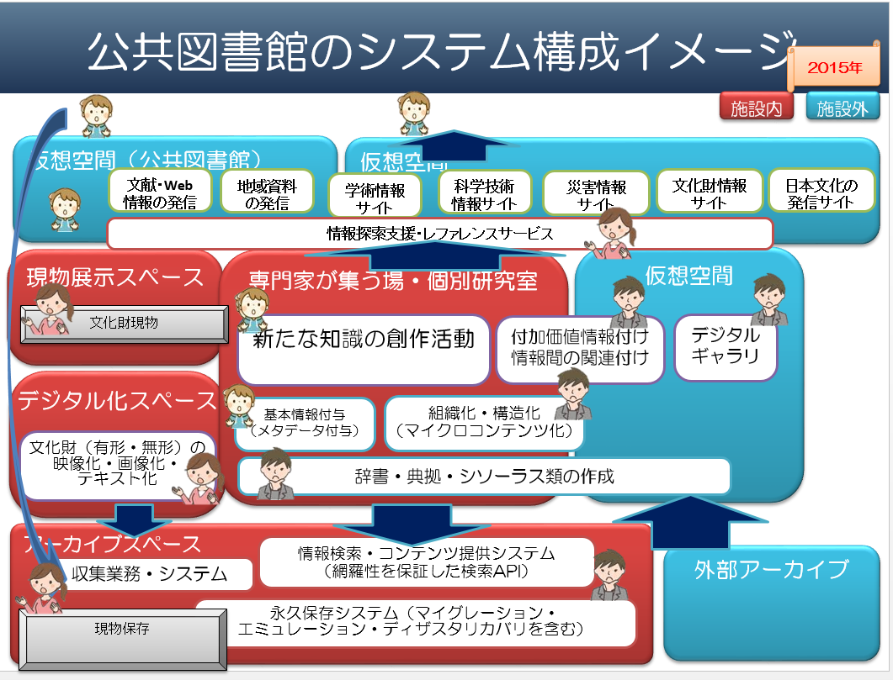

- Bib40-02 図書館情報学研究(参考情報)
- 【2017年12月27日】
- 図書館情報学研究
（図書館システム・オープンデータ）- 同志社大学大学院総合政策科学研究科総合政策科学専攻
図書館情報学コース- コースの目的
- 情報社会に生起する社会的課題を解決するために、問題の把握、分析、評価を行うとともに、図書館政策・情報政策および各種組織等での事業を企画立案し、実施する理論的・実践的能力を涵養する教育研究を行っています。 図書館や情報機関をはじめとした臨床の場で実践知を鍛え、それを理論的に練り上げることによって問題解決を主導することができる高度な情報研究のスペシャリストと、実務研究をとおして社会に貢献する研究者の養成を目指しています
- 教育方法の特徴
- 図書館情報学の理論や研究手法および政策研究に関する基礎的科目と，図書館や情報機関などで生起する諸問題に関わる応用科目をバランスよく提供することで， 総合的視点から企画の立案、分析，実施を担う情報専門家や研究者を育成するカリキユラムを提供しています。 応用科目としては，図書館の各館種ごとの政策・経営に関する科目のほか，各種メディア，情報サービス，情報システムなど広い範囲の専門的な内容が用意されています。 また，これら科目の一部は必要に応じて第一線の実務家と研究者教員が共同に担当することで現場での最新の事例なども取り込むよう工夫しています。 さらに，研究演習科目や図書館情報学研究プロジェクトでは，各自のキャリアプランや関心に沿ったテーマを選択し情報専門職として必要となる調査研究能力を身につけることができます。
- 将来の進路
- 修了後は、図書館や情報機関などの組織で高度な知識を生かして企画立案や実施を担当するスペシャリストとして活躍することが期待されます。また，図書館情報学の研究者として大学などに就職する途も開かれています。
- ディプロマ・ポリシー
- 多様化・複雑化する情報社会に生起する社会的課題を，学際的・総合的観点に立った学術的知見に基づいて理解し，その解決の方策を構想できるようになる(知識)。
- 多様化・複雑化する情報社会に生起する社会的課題を的確に把握し，その適切な解決方策を総合的に探求できるようになる(態度)。
- 多様化・複雑化する情報社会に生起する社会的課題を，図書館政策・情報政策等および各種組織等における事業という両面について企画・立案・実施・評価する能力を獲得し，運用できるようになる(技能)。
- 【司書の主な職務内容】
- 図書館資料の選択、発注及び受け入れ
- 受け入れ図書館資料の分類及び蔵書目録の作成
- 目録からの検索、図書館資料の貸出及び返却
- 図書館資料についてのレファレンスサービス、読書案内
- 読書活動推進のための各種主催事業の企画、立案と実施
- 自動車文庫による巡回等の館外奉仕活動の展開など
- 司書講習科目
- 生涯学習概論
- 生涯学習の意義 利用者の、IT活用の案内・支援や、情報リテラシー向上のための取組
- （1単位） 生涯学習と家庭教育、学校教育、社会教育 社会調査の理論・方法
- 生涯学習関連施策の動向 住民に対するニーズの調査の方法
- 生涯学習及び社会教育の本質について理解を図る。 社会教育の意義 社会教育計画の策定
- 社会教育の内容・方法・形態 行政評価の理論と方法
- 社会教育指導者
- 社会教育施設の概要
- 学習情報提供と学習相談の意義
- 図書館概論
- 図書館の意義（生涯学習と図書館、社会の変化と図書館を含む） 図書館職員が資料や情報などの知識自体を扱う職業であるとの認識
- （2単位） 図書館の種類 図書館の意義に対する考え、説明能力
- 図書館の機能と課題（館種別） 社会における図書館理念に対する考え
- 図書館の意義、図書館の種類、図書館の機能・課題・動向、図書館政策、関係法規、図書館と類縁機関等との関係について解説する。 図書館の動向（図書館の現状と歴史、情報技術の図書館への影響、外国の図書館事情を含む） 図書館の目的・使命
- 図書館行政（図書館政策、図書館法、社会教育法、地方自治法、著作権法等を含む） 図書館のサービス対象（複数ある）
- 他の図書館及び類縁機関等との関係（図書館相互協力・ネットワークを含む） 国・自治体行政の概要（法令含む）と行政手続に関する知識
- 図書館の自由、図書館関係団体等 地域社会の課題（学習・調査研究・課題解決）に関する知識
- 他の図書館との連携協力に関する知識
- 著作権法に関する知識
- 図書館経営論
- 図書館経営の在り方 国・自治体行政の概要（法令含む）
- （1単位） 自治体行政と図書館（他部局等との連携を含む） 自治体行政や地域社会に関する知識
- 図書館の組織と管理・運営 地域社会の課題（学習・調査研究・課題解決）に関する知識
- 生涯学習社会における図書館という視点を重視して、図書館経営に関わる組織、管理・運営、各種計画について解説する。 図書館長・館員の責務及び養成（ボランティアの養成・活用を含む） 自治体行政の動向を踏まえて図書館経営を行う能力
- 図書館サービス計画の意義と方法（各種調査、広報を含む） 図書館の資源や能力（資料、職員、スペース、情報検索能力、情報提供能力、集客力、雰囲気等）を把握し、資源配分の優先順位を定め、業務計画を立案する能力
- 図書館の整備計画と施設、設備、備品 図書館の目的、使命、サービス対象を選択する能力
- 図書館業務・サービスの評価 マーケティング能力
- 情報ネットワーク形成の意義と方法（類縁機関等との連携を含む） ボランティアや行政機関等とのコーディネート能力
- 図書館を演出し、利用者や自治体、マスコミ、地域全体に対するPR力、表現力
- サービスの評価と、評価結果を踏まえて業務改善を行うための知識・技術
- 危機管理能力
- カウンセリングやコンサルティング能力
- 時事的なニーズを把握する能力
- 自治体と図書館の現状を把握し考える能力
- 行政手続の知識
- 予算や人事などの公務員としての能力
- 各種公的機関との連携・協力の必要性の理解
- 図書館サービス論
- 図書館サービスの意義と種類（貸出、読書案内、情報サービス、利用者援助、教育・文化活動など） 各種サービスに関する知識と能力
- （2単位） 利用者理解と利用対象別サービス（多文化サービスを含む） 接遇
- 図書館サービスと著作権 基礎技能として、利用者との会話内容理解、会話言語理解、コミュニケーション技術、利用者心理把握が必要
- 利用者と直接関わる図書館サービスの意義、特質、方法について解説するとともに各種各種サービスの特質を明らかにする。 図書館サービスとボランティア 利用者が求めているものを聞き出すインタビュー能力
- 図書館サービスの協力（他の図書館、関連機関との連携・協力等） 利用者の要望を的確に汲み取るコミュニケーション能力、接遇能力
- 幅広い範囲の公共図書館利用者への対応能力（識字能力の差、社会的弱者、ホームレスなど）
- 著作権等の各種制度と図書館サービスの関係に関する知識
- 情報サービス概説
- 情報サービスの一般的な広がりと図書館が行う情報サービスの位置付け コンピュータ関連の知識・技術
- （2単位） 図書館における情報サービスの意義と種類（レファレンスサービス、レフェラルサービス、カレントアウェアネスサービス等）
- 情報及び情報検索行動についての基本的理解
- 図書館における情報サービスの意義を明らかにし、レファレンスサービス、情報検索サービス等について総合的に解説する。 レファレンスプロセス（レファレンス質問の受付から回答まで、マニュアル検索とコンピュータ検索を含む）
- 情報検索サービスの方法・プロセス・評価
- 主要な参考図書、データベースの解説と評価
- 参考図書及びその他の情報源の組織（二次資料の作成にも触れる
- 各種情報源の特質と利用法
- レファレンスサービス演習（1単位）
- レファレンスサービスの方法と実際
- 参考図書その他の情報源の利用や作成、レファレンス質問の回答処理の演習を通して、実践的な能力の養成を図る。 レファレンスコレクション構築の実際
- インフォメーションファイルの編成の実際
- 二次資料作成の実際
- レファレンスインタビュー・質問回答の実際
- 参考図書評価の実際
- 情報検索演習
- データベース検索の実際（オンラインの他、オンディスクの演習も含む） 豊富な経験に基づく調査・検索の技術
- （1単位）
- データベースの検索の演習を通して、実践的な能力の養成を図る。
- 図書館資料論
- 情報と資料、資料の類型とその特質（資料の歴史、一次・二次資料についても触れる） 資料や情報に関する知識
- （2単位） 資料の出版と流通（外国事情にも触れる） 図書資料に対する基本的な知識
- 蔵書構築の方針・評価（資料選択の基準を含む） 逐次刊行物（雑誌・新聞）に対する知識
- 図書館資料全般の特質を論じ、その出版と流通、選択、選書ツール、保存管理について解説する。新しいメディアの特質やその利用等ついても触れる。 選書ツールの利用法 資料、主要図書、雑誌、著者、出版社に関する知識
- 資料の受入・除籍・保存・管理（紙の劣化防止、共同保管等を含む） 各種メディアを活用したレファレンスサービスに関する知識・技術
- 新しいメディアの収集、整理、利用等及び留意点
- 専門資料論
- 専門分野の特性 資料、主要図書、雑誌、著者、出版社に関する知識（再掲）
- （1単位） 主題文献の特性と種類
- 主要な一次・二次資料
- 人文科学、社会科学、自然科学・技術の各分野における知識の構造と資料との関係についての理解を深めるために、それぞれの分野の資料の特性とその分野を代表する資料について解説する。
- 資料組織概説
- 書誌コントロール・資料組織の意義、資料組織と利用者 利用者のニーズに応じて資料を選択・組織化し利用しやすい環境を整備する。
- （2単位） 目録の意義・機能・種別、目録規則の解説と適用（主題目録形成を含む） コンピュータ関係の知識・技術（再掲）
- 分類の意義、日本十進法（NDC）等の解説と適用
- 資料組織の意義・目的と方法、図書館資料の組織化について解説し、併せてコンピュータ目録について言及する。 件名標目表の解説と適用
- コンピュータ目録の意義と構成、管理・運用（書誌ユーティリティの利用を含む）
- 機械的処理の方法（情報処理機器の種類と概要を含む）
- 資料組織演習
- 目録記入・資料分類・件名目録作成の実際 資料整理技術がなければ図書館員として成り立たない。資料整理を図書館員がせずに外注しているため、専門性が評価されない。
- （2単位） 書誌ユーティリティ利用の実際
- データの収集と編集、データの入力・加工
- 資料組織の演習を通して、実践的な能力の養成を図る。
- 児童サービス論
- 児童サービスの意義及びその企画・立案 学校図書館との連携協力の必要性の理解
- （1単位） 児童室の運営
- 集会・展示サービス
- 児童を対象とする各種のサービス、児童室の運営、児童図書館等について総合的に解説する。併せてヤングアダルトサービスについても解説する。 児童サービスの実態と技術（ストーリーテリング、読み聞かせ、ブックトーク等）
- 児童図書の収集・整理、利用上の留意点
- 児童資料の特色と主要な資料の解説
- ヤングアダルトサービスの意義及びその企画・立案等
- 学校図書館等との連携・協力
- 選択科目
- 図書及び図書館史
- 図書の形態、印刷、普及、流通等に関し歴史的に概説し、併せて図書館の歴史的発展について解説する。
- 資料特論
- （基礎技能）資料の特性理解として、資料の有効性理解・判断能力、記述言語理解、内容概要理解、利用方法理解
- （1単位） （図書館情報学の専門の範囲）資料管理技能として、書誌データ抽出・記述技能、各種媒体変換技術
- 郷土資料、行政資料、視聴覚資料などの各種資料の特質を論じ、その生産と流通、評価、選択・収集、利用等について解説する。 適正な判断をする技能
- 多種多様な資料から、利用者のニーズに的確に応じた資料を提供する知識・技術
- 資料を読み解く知識・技術
- コミュニケーション論
- 優れた組織人であるためのコミュニケーション能力
- インターパーソナルなコミュニケーションを中心に、現代におけるコミュニケーションの特性とその概要について解説する。
- 情報機器論
- 情報検索システムの仕組みを理解した上で、使い方を理解することが必要
- 各種情報機器の機能、種類、利用等について解説する。
- 図書館特論
- 図書館における今日的な諸課題について取り上げ解説する。
- 図書館情報学研究（図書館システム・オープンデータ）
- 図書館システムの仕組み，ディスカバリーサービス，図書館システムの基本となるデータベース構築の理論，WebAPIなどについて学ぶ。
- また，各自治体や大学も含めて進展するオープンデータについても，その提供サイド，利用サイドの両面から検討する。
- 講義，ディスカッションのほかに必要に応じて演習を取り入れる可能性もある。
- ゼミの進め方
- 図書館情報学研究（図書館システム・オープンデータ）シラバス
- ＜概要＞
- 図書館を効率的に運用するために不可欠な図書館システムの仕組みや，ディスカバリーサービス，図書館システムの基本となるデータベース構築の基礎理論，WebAPIの実現方法や利用方法などについて学ぶ。また，各自治体や大学も含めて進展するオープンデータについても，その提供サイド，利用サイドの両面から検討する。講義，ディスカッションのほかに必要に応じて演習を取り入れる可能性もある。
- ＜到達目標＞
- ・図書館システムやオープンデータに関する基礎的な知識を習得することができる。
- ・図書館システム発注に際しての基本的な流れや，仕様書の作成方法などを修得することができる。
- ・データがオープンに公開されている社会における図書館員としての適切な態度を身につけることができる。
- ＜授業計画＞
- 4/11 第1回 図書館システムと情報システムに関する基礎知識
(ガイダンス，授業の進め方の説明を含む)- 情報技術に関する基礎的な知識を理解してくる
- 自己紹介（どんな知識を持っているか）
- 図書館に入って感じたこと：ITスキルを持つ人材の必要性
- 図書館システムの歴史・概論（原田先生）
- 4/11 第2回 図書館システムの計画と設計，仕様
- 図書館システムの将来像，今後の展開に関して考察してくる
.html_files/icons/button_ok.png) 図書館サービスの中でのシステムの関わり（カーナビに例えて）
図書館サービスの中でのシステムの関わり（カーナビに例えて）- 企画、要件定義から調達、運用までの概論
- 4/25 第3～4回 情報政策と図書館，図書館システムの将来像
- 各図書館の将来像をふまえた上で，どのような点をシステム化するかを検討してくる
- 事前に読んでおくWebページを課題とする
- 国の施策の中でのNDL図書館サービスシステムの経緯と今後
- 図書館サービスシステムの戦略、開発方法論
- ウォーターフォール、デザイナー
- ITマネジメント、開発技法、仕様書、競争入札調達手続き
- 4/25 午後 学生ガイダンス
- NDLとはどんなところ？
- 第5～7回 オープンデータに関する基礎知識，図書館とオープンデータ
- オープンデータの意義や課題などについて各自で検討してくる
- 6/6 第8～9回 図書館と情報社会，情報システムの関わり
- ディスカッションのための素材を各自が用意する
- 社会との関わり
- 将来に向けたナショナルアーカイブ社会の中で何ができるか
- 大学の戦略とシステム、機関リポジトリ、規格
- 6/7 午後 MALUI
- 第10～12回 情報社会とオープンデータ
- ディスカッションのための素材を各自が用意する
- 7/18 第13～15回 まとめとディスカッション
- ディスカッションの議論を元にして自分の意見をまとめる
- 受講者の情報技術に関する知識や経験，コンピュータスキルなどに応じて大きく内容を変更する場合があります。
- 27.1.自己紹介経験からのメッセージ
- 2002年、国立国会図書館に「情報システム、電子図書館サービス関連業務」の選考採用により、入館した。
- 入館する前は、
- 志望動機の中で、
- 情報基盤センターでの電子図書館プロジェクトを通じて、国会図書館が多くの書籍、情報を網羅的に収集し、過去や現在の文化資料を広く一般の関覧に供し、また、電子化においては最新の技術を駆使して保存し将来に残していくことや、様々な機関が分散して保管している資料の所在を一元的に把握できるようにして、一般の人にも利用を可能にすることは、文化の発展に大きく貢献し、大変有意義なことだと感じました。
- 入館時からずっと感じていたこと
- l 世の中の変化への対応が遅い。
Ø 保守的。もっと外を見て、民間、行政がやっていることを見習う。（e-JAPAN計画とか）
² ⇒民間や行政への出向も必要ではないか。
² 行政以上に、役所っぽいこと。所掌主義、文書主義、前例主義、内規が絶対的なものとして位置付けていること。
l 各部局課は、所掌による分担意識が強い。 - l 意思決定が遅い
Ø 外向けよりも丁寧な解説付きの資料を作成して、説明しなければならない状況
Ø 曖昧な表現の文書合意。曖昧な内容のために、根拠として使っても、再度議論が発生
² 曖昧な文書による説明でなく、パワーポイント等の利用して、ポイントを明確にして合意を図る
Ø 根回し、部会、委員会、庶務担、館議、文書決裁と、レスポンスが異常に長い - l 外向けのプレゼン内容と、内部での議論のギャップ
Ø 幹部が意識改革して、中堅、担当レベルにその意識を浸透させていくべき⇒課長、課長補佐クラスが、危機感を持って、意識改革をしなければならない
Ø 部局の利害調整の場になっている庶務担、館議の姿勢の改革⇒所掌を越えて、NDL存立のために何をすべきかを議論する場となってほしい。 - l NDL内論理、図書館の世界だけで考えていること。
Ø 単館主義（自己完結型）からの脱却
² 囲い込み主義で、人物金の資源を使って、単独でサービスを展開しようとする姿勢。
Ø ユーザとして、図書館以外のサービスの状況を利用して感じる便利さを、図書館サービスに反映させる姿勢を持つこと。 - l 業務的には、紙資料の蔵書目録至上主義の見直し
Ø 紙資料とデジタル資料では、サービスと業務・システムの考え方の立ち位置が違う。デジタルでの考え方を浸透させなければならない。館外よりも館内の啓蒙活動が大変。 - l 労働集約的な業務、個人のスキルに依存した業務になっている。
Ø 意欲に満ちた新人が、２～３年で、保守的な言動をするようになる - l 要件定義ができない
Ø 業務・サービス部門として
² ユーザ要件をまとめられない
² 調達部署は、要件定義をする力が必要。
Ø 発注者としての
² システムを知らない人がシステム化要件を決めている
l 業務要件に関しての知識しかなくて、システム化仕様の内容に関与しているケースが多いように見受けられる。
² ニーズと技術をマッピングする力が必要
² スキルとして、個別の要素技術の知識や技能だけでなく、要素技術をいかに選択し、適用して課題解決の実現ができるかの実務能力のある人材を求める。
² - l 館としての従来型サービスと、デジタルサービス全体の方向性を、大局的な視点から創造力を駆使して推進する姿勢、体制がない。
² 部局課を離れて、システム、ニーズを中立に認識できる体制が必要。 - l 新しいサービスの考え方
Ø 管理指向から、サービス指向へ
² 管理する立場でシステム化を考えている。エンドユーザが求めるサービスを如何にして提供するかの立場で考える必要がある。
Ø ユーザ指向
Ø ウェブ協調
- NDLでの経歴
- 国立国会図書館において、総務部情報システム課長、総務部副部長、電子情報部長を歴任し、電子図書館事業や関係機関と連携した電子情報サービスの構築事業を統括してきた。
- 図書館サービスシステムの構築・運用、資料のデジタル化、インターネット資料・オンライン資料の収集・保存・提供、関係機関と連携した国立国会図書館サーチの企画・構築、東日本大震災アーカイブ（ひなぎく）の構築・運用等の事業を統括した。
- また、CIO（情報化統括責任者）として、次世代図書館サービスの構築に向けた業務システム最適化計画を策定し、業務・システムを効率化し、より創造的なサービスの実現を目指してきた。
- 2014年4月から専門調査員総務部司書監事務取扱に就任し、現在は国立国会図書館の情報化統括を担当している。
- 総括
- IT関連の要員として、入館して以来、13年間、情報システムを活用した図書館サービスの構築、デジタルアーカイブの構築に直接的に関与し、また、現在は、部局を離れてフリーな立場で、助言する形で間接的に取り組んでいる。
- 13年間の実践を踏まえて、今後10年を見据えて、国としての方向性、その中でのNDLの役割として想定していることを、まとめておきたいと考えている。
- 目指していたこと
- NDLとして、当館の使命・目標の達成を目指す。
- 当館は、唯一の国立図書館として、納本制度、インターネット資料の制度収集、オンライン資料の制度収集、保存のためのデジタル化等、法律により「権限」が与えられており、確実な収集・保存・提供の実施の「責任と義務」を負っております。しかし、紙媒体の情報については国内の出版物に限られており、しかも、100パーセント完全に収集できているわけではありません。更に、デジタル化された出版物は、全てを１つの組織で収集・保存すること自体が不可能です。当館が主体的にアーカイブできる部分は「選択的」にならざるを得ませんが、可能な範囲ではなく、他の機関に分担の「協力」を求め、国全体で、文化資産のアーカイブの網羅性を確保することにより、当館の使命・目標の達成を目指すことが重要です。
- 国として、文化財全体を網羅したアーカイブを構築する
- デジタル情報時代を踏まえ、物理媒体としての原資料は文化財として保存するために、デジタル化していく必要があり、一方では、収集すべき出版物は、物理媒体からデジタル化コンテンツへ移行しつつあります。このようにデジタル化が進む状況において、文化的資産をあらゆる人々が将来にわたり享受、活用できるようにし、人々の創造的な活用に貢献するためには、社会全体でデジタル情報資源の充実に取り組む必要があり、デジタルアーカイブは重要な役割を果たすことになります。
- 産学官のそれぞれの組織は、それぞれの所掌範囲で「デジタルアーカイブの構築と利活用」の施策を計画していますが、これらの施策が同一の方向性を持って、相互に資源を補完し合っていく必要があります。国として、ナショナルアーカイブを構築し、さらに、日中韓、東アジアでのポータル、さらに、世界レベルでの「インターナショナルアーカイブ」の構築へと発展することを目指し、当館は、その一翼を担っていきたいと考えています。
- 27.3.図書館情報学学生
- 組織としての活動の考察
- 自社ならではの強みは何か？
- システム関連の実務経験
- 民間、政府機関、立法機関での国の施策との関わりと施策立案への参画経験
- デジタルアーカイブ及びポータルの構築経験
- その強みを必要とする顧客は誰か？（ターゲット顧客）
- サービスの構築及び提供サイドの組織体の職員
- その顧客は何を必要としているか？（課題）
- どんなサービスをどのように構築して提供して行けばいいかのアドバイス、コンサルテーション
- 自らの創造力を高める
- 顧客が自社を選ぶためには、どうすればよいか？（解決策）
- 情報処理技術の活用の有用性を理解してもらうこと
- 私の役割
- 民間、行政、立法機関で、情報システムの構築に関わってきた経験から、ノウハウ等の技術移転
- トップダウン的思考能力
- 社会の中での役割分担としての思考
- IT関連
- ITでの実現性の困難度、容易度の経験的な見極め力
- 要件定義能力、要件定義に基づくシステム化要件の定義
- デジタル化及びDB化
- 分散アーカイブ、分散アーカイブ内のコンテンツの相互運用性を高めるための、共通的なデジタル化・テキスト化仕様、メタデータの共通的な記述要素、記述規則、通信プロトコル
- クラウドソーシング
- 図書館の方向性
- 利用者志向、図書館は情報探索のOneOfThem。
- 知識創造を支援。知のリサイクルに図書館が一翼を担えるように
- 図書館員の姿勢の現状の今後
- 現状
- 客観的な意見を述べるには、実現のための難易度、負荷を認識できていることが必要。
- 広く浅い知識により、知ったふうに言うのは、説得力に欠ける。
- 図書館は、職業柄か、そういう人が多く見受けられる。
- 利用者との関係
- 図書館員のスキルに応じた利用者が利用する。レファレンスサービスも、図書館員が可能な助言のレベルで十分な人がサービスを求める
- ⇒高度な知識を必要とする人は、利用しない。
- 物と情報
- 人とシステムの協調
- 調べ方は、データベースに蓄積
- 必要なスキル
- 利用者以上のITリテラシー
- 創造力を駆使した要件定義
- ソフトウェア開発管理
- ｢IT教育｣が有益である､これだけの理由。今や｢できることをやる｣の時代ではない。
- コンピュータには決して代替できない創造力とコミュニケーション力こそが求められている
- 学びは「詰め込み・暗記型」から、「思考や創造、表現型」へ変化していかなくてはいけない
- 自分のスキルに基づいてやることを決めるのではなく、「これがしたい」というアイデア・発想ありきで、足りないリソースは世界中から集めてきて協働すればよい。
- 論理的に考え、問題を解決し、他者と協働し、新しい価値を創造する力を養ってほしい
- コンピュータに関する原理的な理解があるかないかによって、社会のありとあらゆる場面における対処能力が、大きく変わってくるはず
- 学校はこれからも最先端のものがあって、ワクワクする場所であるべき
- 学校は、いちばん強く、安全で、つねに最先端かつ大量の情報が集まる町一番の情報基地であってほしい
- これまで行われてきたような授業は、事前に家で動画を見てきてもらい、学校の教室では、より発展的な授業をする
- これから図書館あるいはいわゆるMLA、GLAM及びその近縁業界に足を踏み入れる人に
- レファレンサーに、より専門性の高い知識・ノウハウ
- データベース検索技術者（サーチャー）的な業務は、減少
- 簡単な調べ方案内は、システムで
- 所蔵館を越え、本文内容で、機械的に可能なレファレンス依頼は減少し、より専門性の高い依頼へシフト
- 専門家との人的ネットワークが必要
- 高度な情報組織化スキル
- 機械的（自動的）な組織化情報、関連付け情報を、修正するために、より専門性の高い知識を求められる
- 高度なITスキル
- 図書館システムを活用したデジタル化コンテンツの扱いのために、利用者以上のITリテラシーを持つことは必須として、より高度な情報処理技術が必要となる
- どのような知識や技能、あるいはスタイルを身につける必要があるでしょうか？
そういった人材はどうすれば育成することができる- レファレンサーに、より専門性の高い知識・ノウハウ
- データベース検索技術者（サーチャー）的な業務は、減少
- 簡単な調べ方案内は、システムで
- 所蔵館を越え、本文内容で、機械的に可能なレファレンス依頼は減少し、より専門性の高い依頼へシフト
- 専門家との人的ネットワークが必要
- 高度な情報組織化スキル
- 機械的（自動的）な組織化情報、関連付け情報を、修正するために、より専門性の高い知識を求められる
- 高度なITスキル
- 図書館システムを活用したデジタル化コンテンツの扱いのために、利用者以上のITリテラシーを持つことは必須として、より高度な情報処理技術が必要となる
- 姿勢
- 図書館蔵書等の管理指向から、利用者指向に
- 育成方法
- 図書館司書課程を履修する
- OJT（スキルを持った人による。利害関係のある業者でなく）
- 自己研さん
- 大所高所からの視点、トップダウン思考
- 創造力、発想力、アイデア
- 現状維持で満足しない
- 課題
- 自分の調査行動のアルゴリズムを書き出してみる。
- アルゴリズムをみて、改善できるところは？ もっと効率的な方法は？
- 効率的に行う方法の実現方法は？業務では？システムでは？
- そのシステムの要件定義は？システム化要件は？
- 外部委託方法は？外部委託するために持っているべき知見は？
- 自分の勤務する機関での図書館システムに必要な要件定義
- 今後、5～10年を見据えて
- ITの進展は？
- 出版界の変革は？
- ITを活用した情報探索サービスの変革は？
- 知識創造活動の変革は？
- 10年後、調べものをする環境はどうなっている？
- その時代のサービスは？
- そのサービスを構築するには何をしなければならないか？
- そのサービスはシステムでどこまでやれる？
- 履修目標
- トップダウン思考
- 司書として必要なITスキル
- 知識インフラの中での司書の役割
- 情報検索のスキル 未知の問題をどう解くか
- クールトーの情報探索プロセスモデル
- 職種による情報処理技術の活用内容の違い
- 情報システムを効果的に活用して、図書館サービスを支援
- 図書館サービスを効率的に行える情報システムを効率的に構築する
- IT概論（２コマ）
- コンピュータの基礎知識の基礎(原田)
- ITパスポート
試験シラバス（Ver2.0）IT パスポート試験の出題範囲1) を更に詳細化し，知識の幅と深さを体系的に整理・明確化
した「シラバス」（情報処理技術者試験における知識の細目）を策定しましたので，公表しま
す。
本シラバスが，試験の合格を目指す受験者の方々にとっての学習指針として，また，企業・- カテゴリ
- 大分類
- 中分類
- ◆ストラテジ系◆
- 大分類1：企業と法務
- 企業活動や経営管理に関する基本的な考え方を理解する。
- 中分類1：企業活動
- 1.経営・組織論
- 経営理念（企業理念），株主総会，決算，社会的責任(CSR：CorporateSocialResponsibility)，ディスクロージャ，監査，グリーンIT
- OJT，Off-JT，CDP（CareerDevelopmentProgram），コーポレートブランド，ステークホルダ，ワークライフバランス，メンタルヘルス
- 経営目標，財務・資産・人事・情報管理，PDCA（plan：計画，do：実行，check：評価，act：改善），BCP（BusinessContinuityPlan：事業継続計画），BCM（BusinessContinuityManagement：事業継続管理），MBO（ManagementbyObjectives：目標による管理）
- 階層型組織，事業部制，機能別組織，職能別組織，マトリックス組織，プロジェクト組織，カンパニ制，持株会社，最高経営責任者（CEO：ChiefExecutiveOfficer)，最高情報責任者(CIO：ChiefInformationOfficer)
- 2.OR・IE
- パレート図，ABC分析，PERT（アローダイアグラム），クリティカルパス分析，散布図，レーダチャート，管理図，ヒストグラム，回帰分析
- 特性要因図（フィッシュボーンチャート），シミュレーション，在庫管理，与信管理，発注方式
- ブレーンストーミング，デシジョンツリー，親和図法
- 3.会計・財務
- 利益，粗利益，営業利益，損益分岐点，原価，変動費，固定費，販売量，変動費率
- 貸借対照表，キャッシュフロー計算書，資産（純資産，流動資産，固定資産，繰延資産，有形資産，無形資産），負債（流動負債，固定負債），流動比率,収益性，投資利益率
- 中分類2：法務
- 4.知的財産権
- 著作権法
- 産業財産権関連法規
- 特許法，ビジネスモデル特許，実用新案法，意匠法，商標法，トレードマーク，サービスマーク
- 不正競争防止法
- ソフトウェアライセンス
- 使用許諾契約，オープンソースソフトウェア，フリーソフトウェア，パブリックドメインソフトウェア
- その他の権利
- 判例によって認められた肖像権やパブリシティ権
- 5.セキュリティ関連法規
- 不正アクセス行為の禁止等に関する法律
- 6.労働関連・取引関連法規
- 労働基準法
- フレックスタイム制，裁量労働制
- 労働者派遣法（労働者派遣事業法）
- 守秘義務契約
- 契約類型
- （準）委任契約，雇用契約
- 下請法
- 特商法（特定商取引に関する法律）
- PL法
- 7.その他の法律・ガイドライン・技術者倫理
- コンプライアンス
- 個人情報保護法（個人情報の保護に関する法律）
- コンピュータウイルス対策基準，コンピュータ不正アクセス対策基準，システム管理基準
- 情報倫理
- 知的財産，個人情報，プライバシなどの保護，ネチケットなどのモラル
- コーポレートガバナンス
- 公益通報者保護法，内部統制報告制度
- 行政機関への情報開示請求
- 情報公開法
- 8.標準化関連
- 標準化
- デファクトスタンダード
- ITにおける標準化の例
- バーコード，JANコード，QRコード
- 標準化団体と規格
- ISO（InternationalOrganizationforStandardization：国際標準化機構），
- IEC（InternationalElectrotechnicalCommission：国際電気標準会議），
- IEEE(TheInstituteofElectricalandElectronicsEngineers,Inc.)，
- W3C（WorldWideWebConsortium），
- JIS（JapaneseIndustrialStandards：日本工業規格），
- ISO9000(品質マネジメントシステム)，ISO14000(環境マネジメントシステム)，
- ISO/IEC27000(情報セキュリティマネジメントシステム)
- 大分類2：経営戦略
- 中分類3：経営戦略マネジメント
- 9.経営戦略手法
- 経営情報分析手法
- SWOT（Strengths：強み，Weaknesses：弱み，Opportunities：機会，Threats：脅威）分析，PPM（ProductPortfolioManagement），外部環境，内部環境，3C分析
- 経営戦略に関する用語
- 競争優位，顧客満足度，コアコンピタンス，アライアンス，アウトソーシング，M&A（MergersandAcquisitions），OEM（OriginalEquipmentManufacturer：相手先ブランド製造），ファブレス，フランチャイズチェーン，経験曲線，MBO（ManagementBuyout：経営陣による自社買収），TOB（TakeOverBid：公開買付け），規模の経済，垂直統合，ニッチ戦略，ベンチマーキング，ロジスティクス
- オフィスツールの利用
- 表計算ソフト，データベースソフト，プレゼンテーションソフトなどのオフィスツール（ソフトウェアパッケージ）を，担当業務の問題解決や効率化を図るために活用する。
- 利用目的に応じたツールの選択，データの整理・検索・分析・加工・表現のためのツールの利用
- 10.マーケティング
- マーケティングの基礎
- 市場調査，販売・製品・仕入計画，販売促進，顧客満足，4P・4C，RFM（Recency：最終購買日，Frequency：購買頻度，Monetary：累計購買金額）分析，アンゾフの成長マトリクス，オピニオンリーダ，セグメントマーケティング，ダイレクトマーケティング，プッシュ戦略，ブランド戦略，プロダクトライフサイクル，ポジショニング
- 11.ビジネス戦略と目標・評価
- ビジネス戦略立案及び評価のための情報分析手法
- BSC（BalancedScoreCard：バランススコアカード），CSF（CriticalSuccessFactors：重要成功要因），KGI(KeyGoalIndicator：重要目標達成指標)，KPI(KeyPerformanceIndicator：重要業績評価指標)，バリューエンジニアリング
- 12.経営管理システム
- 経営管理システム
- CRM（CustomerRelationshipManagement：顧客関係管理），バリューチェーンマネジメント，SCM（SupplyChainManagement：供給連鎖管理），TQC（TotalQualityControl：全社的品質管理）・TQM（TotalQualityManagement：総合的品質管理），ERP(EnterpriseResourcePlanning：企業資源計画)パッケージ，シックスシグマ，ナレッジマネジメント，TOC（TheoryOfConstraints：制約理論）
- 中分類4：技術戦略マネジメント
- 13.技術開発戦略の立案・技術開発計画
- 技術開発戦略・技術開発計画
- MOT（ManagementOfTechnology：技術経営），技術ポートフォリオ，特許戦略，技術予測手法，プロセスイノベーション，プロダクトイノベーション
- 中分類5：ビジネスインダストリ
- 14.ビジネスシステム
- 代表的なビジネス分野におけるシステム
- 流通情報システム，金融情報システム，POS（PointofSales：販売時点情報管理）システム，GPS（GlobalPositioningSystem：世界測位システム）応用システム，GIS（GeographicInformationSystem：地理情報システム），ETC（ElectronicTollCollection：自動料金収受）システム，ICカード，RFID(ICタグ)，電子マネー，営業支援システム(SFA：SalesForceAutomation)，トレーサビリティ，スマートグリッド
- 代表的なビジネスシステムのソフトウェアパッケージ
- 業務別ソフトウェアパッケージ(会計，営業支援，販売管理ソフトウェア)，業種別ソフトウェアパッケージ(金融，医療，製造，運輸向けソフトウェアパッケージ)，DTP（DeskTopPublishing）
- その他の分野のシステム
- CTI(ComputerTelephonyIntegration)，電子入札
- 15.エンジニアリングシステム
- エンジニアリング分野におけるIT活用
- 自動化による設計・製造の支援，生産管理や在庫管理の効率化
- 代表的なエンジニアリングシステム
- CAD（ComputerAidedDesign），CAM（ComputerAidedManufacturing）
- CIM（ComputerIntegratedManufacturing：コンピュータ統合生産システム），コンカレントエンジニアリング，シミュレーション，センシング技術，生産方式，JIT（JustInTime：ジャストインタイム），FMS（FlexibleManufacturingSystem：フレキシブル生産システム），MRP（MaterialRequirementsPlanning：資材所要量計画）
- 16.e-ビジネス.
- 電子商取引
- ロングテール，無店舗販売
- 電子商取引の分類
- EC（ElectronicCommerce：電子商取引），BtoB（BusinesstoBusiness：企業間取引），BtoC（BusinesstoConsumer：企業対個人取引），CtoC（ConsumertoConsumer：個人対個人取引），EDI（ElectronicDataInterchange：電子データ交換）
- 電子商取引の利用
- 電子マーケットプレース，オンラインモール，電子オークション，インターネット広告，インターネットバンキング，インターネットトレーディング，SEO（SearchEngineOptimization：検索エンジン最適化），アフィリエイト，エスクローサービス，オプトインメール広告，バナー広告，レコメンデーション，ディジタルサイネージ
- 17.民生機器・産業機器
- 組込みシステムの具体例
- 民生機器
- 炊飯器，洗濯機，エアコン，携帯電話，携帯情報端末など
- ②産業機器
- 産業用ロボット，自動倉庫，自動販売機など
- ATM（AutomaticTellerMachine），ファームウェア
- 大分類3：システム戦略
- 中分類6：システム戦略
- 18.情報システム戦略
- 情報システム戦略
- 自社の経営戦略，事業戦略を実現することを目的に，情報システムが構築される
- 戦略目標
- 経営戦略や事業戦略は，経営環境の分析やSWOT分析などを通じて，具体的な目標が設定される
- EA（EnterpriseArchitecture）
- 19.業務プロセス
- 【目標】
- 業務改善，問題解決などに向けた考え方を理解する。
- 業務モデルにおける代表的なモデリングの考え方を理解する。
- グループウェア，オフィスツールを効果的に活用する。
- コンピュータ及びネットワークを利用した業務の効率化の目的，考え方を理解する。
- 業務プロセス
- モデリング
- E-R図（EntityRelationshipDiagram），DFD（DataFlowDiagram）
- 業務プロセスの分析
- BPR（BusinessProcessReengineering），BPM（BusinessProcessManagement），ワークフロー
- 業務改善及び問題解決
- 業務フローやE-R図などから業務プロセスを把握し，表やグラフで表現された業務データを読み取り，問題点を発見し，改善する。
- ITの有効活用
- システム化による業務効率化
- システム化には，製品化されたソフトウェアパッケージの導入，グループウェアやオフィスツールの導入，個別の情報システム開発・導入，ネットワークの構築などの方法がある
- コミュニケーションのためのシステム利用
- 業務改善や業務効率化を進める上で必要となるコミュニケーションを円滑に行うため，具体的なツールの利用方法
- テレビ会議，電子メール，電子掲示板，ブログ，チャット，SNS（SocialNetworkingService）
- 業務における電子メールの利用，共有ファイルのアップロード
- 20.ソリューションビジネス
- ソリューションとは
- ソリューションビジネスでは，顧客との信頼関係を築き，顧客の問題点を知り，問題解決案を提案し，問題解決への支援を行うことを理解する。また，システム化におけるソリューション提供のプロセスを理解する。
- ソリューションの形態
- SaaS(SoftwareasaService)，ASP(ApplicationServiceProvider)，アウトソーシング，ホスティングサービス，ハウジングサービス，SOA(ServiceOrientedArchitecture：サービス指向アーキテクチャ)，SI（SystemIntegration），クラウドコンピューティング
- 21.システム活用促進・評価
- 情報リテラシ
- 業務遂行のためにコンピュータやアプリケーションソフトウェアなどの情報技術を活用し，情報の検索，整理，分析，発信を行う。
- データ活用
- 情報システムによって蓄積されたデータを分析し，担当業務における業務改善や問題解決に活用する。
- BI（BusinessIntelligence）ツール，データウェアハウス，データマイニング
- 普及啓発
- 情報システムを活用するための教育の実施など，普及啓発活動の重要性を理解する。
- e-ラーニング，ディジタルディバイド
- 中分類7：システム企画
- 22.システム化計画
- システム化計画
- システム化計画では，対象業務を分析して情報システム戦略に基づいてシステム化構想及びシステム化基本方針を立案し，各システムの開発順序，概算コスト，効果などシステム化の全体像を明らかにすることを理解する
- 用語例スケジュール，体制，リスク分析，費用対効果，適用範囲，企画プロセス
- 23.要件定義
- 業務要件定義
- 業務要件定義では，経営戦略やシステム戦略，利用者のニーズを考慮して，システムに求める機能及び要件を定義することを理解する。
- 利用者の要求の調査，調査内容の分析，現行業務の分析，業務要件の定義，機能要件・非機能要件の定義，要件の合意
- 24.調達計画・実施
- 調達の流れ
- 調達の基本的な流れは，情報提供依頼（RFI：RequestForInformation），提案依頼書（RFP：RequestForProposal）の作成と配付，選定基準の作成，ベンダ企業からの提案書及び見積書の入手，提案内容の比較評価，調達先の選定，契約締結，受入れ・検収であることを理解する。
- 情報提供依頼
- 情報提供依頼は，提案依頼書の作成に先立って，考えうる手段や技術動向に関する情報を集めるために，ベンダ企業に対しシステム化の目的や業務概要を明示し，情報提供を依頼することであることを理解する
- 提案依頼書
- 提案依頼書は，ベンダ企業に対し，導入システムの概要や提案依頼事項，調達条件などを明示し，提案書の提出を依頼するための文書であることを理解する。
- 提案書
- ベンダ企業では，RFPを基にシステム構成，開発手法などを検討し，提案書を作成し，依頼元に対して提案することを理解する。
- 見積書
- 見積書は，システムの開発，運用，保守などにかかる費用を示す文書であり，取引先の選定や発注内容の確認にとって重要であることを理解する。
- ◆マネジメント系◆
- 大分類4：開発技術
- 中分類8：システム開発技術
- 25.システム開発技術
- システムがどのようなプロセスを経て開発されるかを理解するために，要件定義，システム設計，プログラミング，テストなどのプロセスの流れを知り，見積りやレビューの考え方を知る。
- システム開発のプロセス
- システム開発にはどのようなプロセスがあるかについて理解する。
- システム要件定義及びソフトウェア要件定義
- システム及びソフトウェアに要求される機能，性能及び内容を明確化するシステム要件定義，ソフトウェア要件定義などが行われることを理解する。
- 機能要件，非機能要件，共同レビュー
- システム設計及びソフトウェア設計
- システム方式設計，ソフトウェア方式設計，ソフトウェア詳細設計などがあることを知り，それぞれの基本的な役割を理解する。
- 外部設計，内部設計
- プログラミング
- システム設計に従ってプログラムを作成する。また，作成した個々のプログラムに誤り（バグ）がないかを検証するために，単体テストを行うことを理解する。
- コーディング，コンパイラ，ホワイトボックステスト，デバッグ，コードレビュー
- テスト
- 単体テスト済のプログラムを結合し，ソフトウェアやシステムが要求どおり動作するかどうかを検証する。また，テストには計画，実施，評価のサイクルがあることを知り，テスト実施の際，目標に対する実績を評価する必要があることを理解する。
- 結合テスト，システムテスト，運用テスト，ブラックボックステスト，回帰テスト（リグレッションテスト）
- ソフトウェア受入れ
- 委託側が実際の運用と同様の条件でソフトウェアを使用し，正常に稼働するかを確認した上で，問題がなければ納入が行われることを理解する。また，システム利用者への
教育訓練が行われることを理解する。 - 利用者マニュアル，受入れテスト，移行
- ソフトウェア保守
- ソフトウェアの保守では，システムの安定稼働，情報技術の進展や経営戦略の変化に対応するために，プログラムの修正や変更が行われることを理解する
- ソフトウェアの見積り
- ソフトウェアの開発規模，開発環境などに基づいて，開発工数，開発期間などの見積りを行うときの基本的な考え方を理解する。
- ファンクションポイント（FP：FunctionPoint）法，類推見積法
- 中分類9：ソフトウェア開発管理技術
- 26.開発プロセス・手法
- 主なソフトウェア開発手法
- 構造化手法，オブジェクト指向，データ中心アプローチ，プロセス中心アプローチ，ユースケース，UML
- 主なソフトウェア開発モデル
- ウォータフォールモデル，スパイラルモデル，プロトタイピングモデル，RAD（RapidApplicationDevelopment），アジャイル，リバースエンジニアリング
- 開発プロセスに関するフレームワーク
- 共通フレーム
- ソフトウェア開発とその取引の適正化に向けて，それらのベースとなる作業項目を一つ一つ定義し，標準化した共通フレームとしてSLCP（SoftwareLifeCycleProcess）があり，その基本的な考え方を理解する
- 能力成熟度モデル
- 開発と保守のプロセスを評価，改善するに当たって，システム開発組織のプロセス成熟度をモデル化したCMMI（CapabilityMaturityModelIntegration：能力成熟度モデル統合）があること，成熟度を5段階のレベルで定義するなど，CMMIの基本的な考え方を理解する。
- 大分類5：プロジェクトマネジメント
- 中分類10：プロジェクトマネジメント
- 27.プロジェクトマネジメント
- プロジェクトマネジメント
- プロジェクトを立ち上げ，計画に基づいてプロジェクトを進め，レビューなどを通じて進捗，コスト，品質及び人的資源をコントロールし，目標を達成する流れであることを理解する。
- プロジェクト憲章，プロジェクトマネージャ，プロジェクトメンバ，ステークホルダ，プロジェクト・スコープ・マネジメント，プロジェクト・コミュニケーション・マネジメント，プロジェクト・リスク・マネジメント，WBS(WorkBreakdownStructure)，アローダイアグラム，ガントチャート
- 業務における最適な人的資源の配置，プロジェクトのスケジュール管理，業務の進捗報告の仕方
- 大分類6：サービスマネジメント
- 中分類11：サービスマネジメント
- 28.サービスマネジメント
- 情報システムを安定的かつ効率的に運用し，また，利用者に対するサービスの品質を維持・向上させる活動が必要であることを理解する。また，そのための運用管理の方法としてITサービスマネジメントがあることを知り，その意義，目的，考え方を理解する。
- ITサービスマネジメント
- ITサービスマネジメントは，IT部門の業務を「ITサービス」としてとらえ，体系化することでIT運用の効率化を図り，可用性をはじめとするサービスの品質を高めようとする運用管理の方法であることを理解する。
- ITIL
- ITサービスマネジメントのフレームワークとして，ITIL（InformationTechnologyInfrastructureLibrary）という考え方があることを理解する。
- サービスレベル合意書
- ITサービスマネジメントでは，提供するサービスの品質と範囲を明文化し，サービスの委託者との合意に基づいて運用管理するために，サービスレベル合意書（SLA：ServiceLevelAgreement）を結ぶことを理解する。
- サービスレベル管理
- サービスの委託者と提供者の間で合意したサービスレベルを達成するために，PDCAサイクルでサービスレベルの維持・向上を図るサービスレベル管理（SLM：ServiceLevelManagement）があることを理解する。
- 29.サービスサポート
- サービスサポート
- ITサービス運用を理解するために，サービスサポートの中核にあるサービスデスク（ヘルプデスク）の基本的な役割と，サービスサポートに含まれる管理機能（役割）の基本的な構成を知る。
- インシデント管理（障害管理），問題管理，構成管理，変更管理，リリース管理，バージョン管理
- サービスデスク（ヘルプデスク）
- サービスデスクは，システムの利用者からの問合せに対して単一の窓口機能を提供し，問合せの記録と管理，適切な部署への引継ぎ，対応結果の記録などを行うことを理解する。
- エスカレーション，FAQ
- 30.ファシリティマネジメント
- 企業などがシステム環境を最善の状態に保つための考え方として，ファシリティマネジメントがあることを理解する。
- システム環境整備
- コンピュータ，ネットワークなどのシステム環境や施設，設備を維持・保全するシステム環境整備の必要性を理解する。
- グリーンIT（GreenofIT），無停電電源装置（UPS：UninterruptiblePowerSupply），自家発電装置，セキュリティワイヤ，サージ防護
- ファシリティマネジメント
- 建物や設備などの資源が最適な状態となるように改善していくために，ファシリティマネジメントという考え方があることを理解する。
- 中分類12：システム監査
- 31.システム監査
- 監査業務
- 会計監査，業務監査，情報セキュリティ監査，システム監査
- システム監査
- システム監査の目的は，被監査部門から独立した立場で，情報システムを幅広い観点から調査し，システムが経営に貢献しているかを判断することであることを理解する。
- システム監査のプロセスには，情報システムの総合的な点検，評価，経営者への結果説明，改善点の勧告及び改善状況の確認と，そのフォローアップなどの活動があることを理解する。
- システム監査人，システム監査基準，システム監査計画，予備調査，本調査,監査証拠，システム監査報告書
- 32.内部統制
- 内部統制
- 内部統制とは，企業など自らが業務を適正に遂行していくために，体制を構築して運用する仕組みであることを理解する。その実現には，業務プロセスの明確化，職務分掌，実施ルールの設定及びそのチェック体制の確立が必要であることを理解する。
- モニタリング，リスクコントロールマトリクス（RCM）
- ITガバナンス
- ITガバナンスとは，情報システム戦略を策定し，実行を統制することであり，企業などが競争力を高めるために必要であることを理解する。
- ◆テクノロジ系◆
- 大分類7：基礎理論
- 中分類13：基礎理論
- 33.離散数学
- 数と表現
- 2進数の表現，基数変換の方法，負の数の表現，2進数の加算や減算，表現可能な数値の範囲などの考え方を理解する。
- 集合
- 集合と命題，ベン図，真理値表などの基本的な考え方と利用方法を理解する。
- 論理演算
- 論理演算の考え方と基本的な演算，及び真理値表の利用方法を理解する。
- 活用例AND，OR，NOT，XOR(排他的論理和)を使った条件検索
- 34.応用数学
- 確率の概要
- 順列，組合せ及び確率の考え方を理解する。
- 統計の概要
- 度数分布表，ヒストグラム，平均などの基本的な統計の考え方を理解する。
- 待ち行列
- 待ち行列の基本的な考え方を理解する。ただし，M/M/1モデルなど理論的な内容は問わない。
- 35.情報に関する理論
- コンピュータで扱う数値やデータに関する基礎的な理論を知るため，情報量の表し方，ディジタル化の考え方や文字の表現について理解する。
- 情報量の単位
- ビット，バイトなどの情報量や，接頭語（k，M，G，T，m，μ，n，pなど）を使った表し方を理解する。
- ディジタル化
- アナログとディジタルの特徴と，量子化，標本化，符号化など，ディジタル化(A/D変換)の基本的な考え方を理解する。
- 文字の表現
- コンピュータの内部では，文字を数値で表現していることを理解する。
- ASCIIコード，EUC(ExtendedUnixCode：拡張UNIXコード)，JISコード，Unicode
- 中分類14：アルゴリズムとプログラミング
- 36.データ構造
- データ及びデータ構造
- 変数やフィールドのタイプ，配列，レコード，ファイルなど，データ構造の基本的な考え方を理解する。
- リスト，キュー，スタック，木構造，2分木
- 37.アルゴリズム
- 流れ図
- 流れ図の記号と処理手順の表現方法を理解する。
- アルゴリズムの基本構造
- 順次構造，選択構造，繰返し構造を理解する。
- 基本的なアルゴリズム
- 合計，探索，併合（マージ），整列（ソート）などを理解する。
- 38.プログラミング・プログラム言語
- プログラム言語でアルゴリズムを記述することがプログラミングであり，プログラミングによってコンピュータでアルゴリズムを実行できるようになることを理解する。
- C，Java，COBOL，スクリプト言語
- 39.その他の言語
- コンピュータ上での表現手段として広く利用されている代表的なマークアップ言語について，その種類と特徴を理解する。また，マークアップ言語を利用する際の簡単な使い方（書き方を含む）を理解する。
- マークアップ言語
- HTML（HyperTextMarkupLanguage），XML（ExtensibleMarkupLanguage），タグ，SGML
- 大分類8：コンピュータシステム
- 中分類15：コンピュータ構成要素
- 40.プロセッサ
- コンピュータの構成
- 演算，制御，記憶，入力，出力
- 41.メモリ.
- RAM，ROM，フラッシュメモリ，揮発性
- HDD，SSD，CD(CD-ROM，CD-R)，DVD（DVD-ROM，DVD-RAM，DVD-R），Blu-rayDisc，USBメモリ，SDカード
- キャッシュメモリ，主記憶，補助記憶
- 42.入出力デバイス
- 入出力インタフェース
- 入出力インタフェースの種類（有線インタフェース，無線インタフェース）とデータ転送方式（シリアル，パラレル）などの特徴を理解する。
- デバイスドライバ
- デバイスドライバとプラグアンドプレイの機能を理解する。
- 中分類16：システム構成要素
- 43.システムの構成
- 処理形態
- 集中処理，分散処理，並列処理
- システム構成
- デュアルシステム，デュプレックスシステム，クライアントサーバシステム，Webシステム，ピアツーピア，クラスタ，シンクライアント，NAS，RAID
- 利用形態
- 対話型処理，リアルタイム処理，バッチ処理，仮想化
- 44.システムの評価指標
- システムの性能
- レスポンスタイム(応答時間)，ベンチマーク
- システムの信頼性
- 信頼性を表す指標
- 稼働率，MTBF（平均故障間動作時間），MTTR（平均修復時間）
- 信頼性の設計
- デュアルシステム，デュプレックスシステム，フェールセーフ，フォールトトレラント，フールプルーフ
- システムの経済性
- 初期コスト，運用コスト，TCO（TotalCostofOwnership）
- 中分類17：ソフトウェア
- 45.オペレーティングシステム
- OSの必要性
- OSは，利用者や応用ソフトウェア（アプリケーションソフトウェア）に対して，コンピュータがもつハードウェアやソフトウェア資源を効率的に提供するために，必要な制御機能，管理機能をもっていることを理解する。
- OSの機能
- ユーザ管理（プロファイル，アカウント），ファイル管理，入出力管理や資源管理などの機能を理解する。
- ユーザIDの登録・抹消の管理，ユーザ別のアクセス権の管理，仮想記憶
- OSの種類
- OSには，Windows，MacOS，UNIX，Linuxなど複数の種類があることを理解する。また，異種のOS間でデータのやり取りを行う際に生じる問題についても理解する。
- 46.ファイルシステム
- ファイル管理
- 用語例ルートディレクトリ，カレントディレクトリ，ファイル拡張子，フラグメンテーション
- 活用例ディレクトリ管理，ファイル共有，アクセス権設定，絶対パス・相対パスの指定
- バックアップ
- バックアップの必要性，取得方法及び手順や世代管理などの基本的な考え方
- アーカイブ
- 47.開発ツール
- ソフトウェアパッケージ
- ワープロソフト，表計算ソフトなどのソフトウェアパッケージの特徴を理解する。また，ソフトウェアパッケージをインストールする必要があることを理解する。
- ワープロソフト
- 文書作成，表の作成，図表の埋込み，クリップボードの有効利用
- 表計算ソフト
- セルの参照やセルへの代入，四則演算の指定方法，代表的な関数の利用，データの選択・追加・削除・挿入・並替え，検索，グラフの作成
- プレゼンテーションソフト
- スライドの作成，フォントの選択，図形の作成，画像の取込み
- WWWブラウザ（Webブラウザ）
- Webブラウザを使って，Webページから必要な情報を検索し，入手する方法や特徴を理解する。
- 検索サイトの活用，条件（AND，OR，NOT）を付けた情報検索
- 48.オープンソースソフトウェア
- オープンソースソフトウェア
- OSSの特徴
- OSSには，ソースコードの公開，再配布の制限の禁止，無保証の原則といった特徴があることを理解する。
- OSSの種類
- OSSには，OS，通信系ソフトウェア，オフィス系ソフトウェア，データベース管理システム，応用ソフトウェアなどがあることを理解する。
- 中分類18：ハードウェア
- 49.ハードウェア（コンピュータ・入出力装置）
- コンピュータ
- PC，サーバ，汎用コンピュータ，携帯情報端末，タブレット端末
- 入出力装置
- キーボード，マウス，タブレット，イメージスキャナ，タッチパネル，バーコードリーダ，ディスプレイ，プリンタ，プロジェクタ，Webカメラ
- 大分類9：技術要素
- 中分類19：ヒューマンインタフェース
- 50.ヒューマンインタフェース技術
- ヒューマンインタフェース
- 人とシステムの接点となるインタフェースであり，様々な場面で利用されている
- GUI
- グラフィックスを多用した視覚的な表示，ポインティングデバイスなどによる直感的な操作など，GUI（GraphicalUserInterface）
- ウィンドウ，アイコン，ラジオボタン，チェックボックス，リストボックス，ヘルプ機能，メニューバー，プルダウンメニュー，ポップアップメニュー，サムネイル
- 51.インタフェース設計
- 画面・帳票設計
- 画面設計
- 入力の流れが自然になるようにする，色の使い方にルールを設ける，操作ガイダンスを表示するなど
- 帳票設計
- 関連項目を隣接させる，余分な情報は除いて必要最小限の情報を盛り込む，ルールを決めて帳票に統一性をもたせるなど
- Webデザイン
- サイト全体の色調やデザインにスタイルシートを用いて統一性をもたせたり，複数種類のWWWブラウザに対応したりするなど，Webデザインにおいてユーザビリティ（使いやすさ）の観点が必要であることを理解する。
- CSS（CascadingStyleSheets）
- ユニバーサルデザイン
- 年齢や文化，障害の有無や能力の違いなどにかかわらず，できる限り多くの人が快適に利用できることを目指すユニバーサルデザインの考え方
- Webアクセシビリティ
- 中分類20：マルチメディア
- 52.マルチメディア技術
- マルチメディア
- マルチメディアとは，文字情報に加えて，音声，画像（静止画・動画）などの様々な形態のアナログ情報をディジタル化（符号化）し，コンピュータ上で統合的に扱う
- Webコンテンツ，ハイパーメディア，ストリーミング
- マルチメディアのファイル形式
- MP3（MPEGAudioLayer-3），MIDI（MusicalInstrumentDigitalInterface），JPEG（JointPhotographicExpertsGroup），GIF（GraphicsInterchangeFormat），PNG(PortableNetworkGraphics)，MPEG（MovingPictureExpertsGroup），PDF（PortableDocumentFormat）
- 情報の圧縮と伸張
- ZIP，LZH，圧縮率，可逆圧縮，非可逆圧縮
- 53.マルチメディア応用
- グラフィックス処理
- 色の表現：色が，光の3原色（RGB）と色の3原色（CMY）で表現されていることを理解する。また，色は，色相と明度，彩度によって表現されている
- 画像の品質:画素（ピクセル），解像度及び階調に
- グラフィックスソフトウェアペイント系ソフトウェアとドロー系ソフトウェアの特徴
- マルチメディア技術の応用
- コンピュータグラフィックス（CG：ComputerGraphics），バーチャルリアリティ（VR：VirtualReality），拡張現実（AR:AugmentedReality），3D，CAD，シミュレータ，ゲーム
- 中分類21：データベース
- 54.データベース方式
- データベースは，業務を情報（データ）という観点から表現するための重要な手段であり，データベース管理システムはデータを構造的に蓄積し，それらの一貫性を保ち，効率的に取り出すための機能を備えたものであることに注目し，その意義，目的，考え方を理解する。
- データベース
- データベースの目的，特徴，データベースモデルの考え方などを理解する。
- データベース管理システム
- 身近な業務で利用する観点から，データベース管理システム（DBMS）の意義，目的，考え方を理解する。
- 55.データベース設計
- データの分析・設計の必要性や，その基本的なプロセスを理解する。
- データ分析
- 業務で使用するデータの洗出しと整理の必要性について理解する。
- データの設計
- データ及びデータの関連を整理して表現する。
- E-R図，コード設計，フィールド（項目），レコード，ファイル，テーブル（表），主キー，外部キー，インデックス活用例業務データの洗出しと最適化
- データの正規化
- データの正規化の必要性について理解する。ただし，正規化の詳細な内容は問わない。
- 56.データ操作
- 関係データベースを活用するために，必要なデータ操作を理解する
- データ操作
- 表に関する代表的なデータ操作方法を理解する。ただし，SQLの文法は問わない。
- 活用例業務データを使った選択，挿入，更新，射影，結合操作
- 57.トランザクション処理
- 複数の利用者によるデータの参照や更新に備えて，排他制御とリカバリ機能によってデータベースの一貫性を保つ必要があることを理解する。
- データベース管理システムの機能
- 情報共有及びデータ保全を実現するために必要な排他制御とリカバリ機能について，その必要性と機能の概要を理解する。
- 中分類22：ネットワーク
- 58.ネットワーク方式
- ネットワークは企業などの活動において必要不可欠な基盤であることを認識し，LANやWAN及び代表的なネットワークの構成要素について，役割の概要を理解する。また，上位者の指導の下，身近な社内LANの設定を行う。
- ネットワークの構成
- 身近な職場のネットワークがLANやWANで構成されていることを知り，それぞれの意味を理解する。
- ネットワークの構成要素
- イーサネットなどの代表的なネットワークの方式と，ネットワークを構成する回線，接続装置などの役割を理解する。
- ネットワークインタフェースカード，ケーブル，ハブ，ルータ，スイッチ，モデム，ターミナルアダプタ，モジュラージャック，通信回線，伝送路，無線LAN，デフォルトゲートウェイ，プロキシ，MACアドレス，ESSID（ExtendedServiceSetIdentifier），移動体通信規格（LTEなど），伝送速度（bps：bitspersecond（ビット/秒））
- 59.通信プロトコル
- 情報の発信側と受信側で情報を伝達するためには，共通する規則に従ってやり取りする必要があることを理解する。
- TCP/IP，HTTP，HTTPS，SMTP，POP，FTP，NTP（NetworkTimeProtocol），DHCP，ポート番号
- 60.ネットワーク応用
- インターネットの仕組み
- インターネットに接続されたコンピュータは，固有のIPアドレスとドメイン名で管理されていることを理解する。
- インターネットサービス
- 電子メール，Web，ファイル転送など，インターネット上で利用される様々なサービスの特徴と利用に関する留意点を理解する。
- 同報メール，メーリングリスト，メールボックス，cc，bcc，cookie，MIME，RSS，オンラインストレージ，クローラ
- 通信サービス
- 回線事業者，インターネット接続サービス事業者(ISP：InternetServiceProvider)，パケット通信，モバイル通信，IP電話，ADSL，光通信，テザリング
- パケット通信の考え方，従量制と定額制による課金方式の考え方
- 中分類23：セキュリティ
- 61.情報セキュリティ
- 情報セキュリティの概念
- 情報資産
- 企業における情報資産の代表的な種類として，顧客情報，営業情報，知的財産関連情報，人事情報などがあることを理解する。
- 脅威と脆ぜい弱性
- 人的脅威の種類と特徴
- 漏えい，紛失，破損，盗み見，なりすまし，クラッキング，ソーシャルエンジニアリング，誤操作，標的型攻撃
- 情報セキュリティポリシに基づく情報の管理
- 技術的脅威の種類と特徴
- マルウェア（コンピュータウイルス，ボット，スパイウェア），ワーム，トロイの木馬，マクロウイルス，ガンブラー，キーロガー，フィッシング詐欺，DoS（DenialofService）攻撃，ゼロデイ攻撃，パスワードクラック（辞書攻撃，総当り攻撃），SQLインジェクション，クロスサイトスクリプティング，セキュリティホール，バックドア，ファイル交換ソフトウェア
- 物理的脅威の種類と特徴
- 災害，破壊，妨害行為
- 62.情報セキュリティ管理
- リスクマネジメント
- リスクマネジメントは，リスクの特定・分析・評価・対策という流れで実施されることや，事故などが発生した際に対処するために，対応マニュアルの整備や教育・訓練などの準備が必要である
- 情報セキュリティマネジメント
- 情報セキュリティマネジメントの必要性と情報セキュリティマネジメントシステム（ISMS：InformationSecurityManagementSystem）の考え方を理解する。
- 情報セキュリティ基本方針，情報セキュリティポリシ，情報セキュリティマネジメントの三大要素（機密性，完全性，可用性）
- 個人情報保護
- 個人情報保護の必要性，法律やプライバシーマーク制度などの取組
- 63.情報セキュリティ対策・情報セキュリティ実装技術
- 情報セキュリティ対策の種類と対策
- 人的セキュリティ対策の種類
- 情報セキュリティポリシ，アクセス権
- 情報セキュリティに関する教育・訓練，情報セキュリティポリシ・各種社内規程・マニュアルの遵守，アクセス権の設定などのアクセス管理
- 技術的セキュリティ対策の種類
- 暗号化，認証技術，ID，パスワード，コンテンツフィルタ，コールバック，アクセス制御，ファイアウォール，検疫ネットワーク，DMZ(非武装地帯)，SSL(SecureSocketsLayer)，VPN（VirtualPrivateNetwork），ディジタル署名，電子透かし，ディジタルフォレンジックス，ペネトレーションテスト
- ウイルス対策ソフトウェアの導入，ウイルス定義ファイルの更新，電子メール・Webブラウザのセキュリティ設定，OSアップデート
- 物理的セキュリティ対策の種類
- 生体認証(バイオメトリクス認証)，監視カメラ，施錠管理，入退室管理
- IDカードを用いた入退室の管理
- 暗号技術
- 共通鍵暗号方式，公開鍵暗号方式，暗号化，復号
- WPA2などによる無線LANの暗号化
- 公開鍵基盤
- PKI（PublicKeyInfrastructure：公開鍵基盤）
- 最低限知っておくべき情報処理技術
（ITリテラシー）- 参考：「よくわかる情報リテラシー」 技術評論社 岡本敏雄 監修
- 4.1.コンピュータの基礎
- 4.1.1.コンピュータの仕組み
- 4.1.2.ソフトウェア
- 4.1.3.情報システム
- 4.2.情報の形態と収集の方法
- 4.2.1.情報の形態
- 4.2.2.情報蓄積の形態
- 4.2.3.クラウド環境の情報
- 4.2.4.検索エンジン
- 4.2.5.情報収集の技術
- 4.2.6.情報収集の応用
- 4.3.インターネットの仕組みとWebシステム
- 4.3.1.インターネットの概要
- 4.3.2.通信機能の階層化
- 4.3.3.IPアドレスの仕組み
- 4.3.4.パケット通信の仕組み
- 4.3.5.通信の経路を選ぶ仕組み
- 4.3.6.データを確実に送り届ける仕組みと素早く送り届ける仕組み
- 4.3.7.アプリケーション層のプロトコル
- 4.3.8.直接接続する機器の通信
- 4.3.9.Webアプリケーションの仕組み
- 4.3.10.クラウドコンピューティング
- 4.4.情報の伝達
- 4.4.1.ソーシャルネットワーキングサ…ビス
- 4.4.2.ソーシャルメディア
- 4.4.3.電子書籍
- 4.5.レポートの作成と編集
- 4.6.情報のデータ化と分析・マイニング
- 4.6.1.情報とデータ
- 4.6.2.データの整理
- 4.6.3.データの可視化
- 4.6.4.データマイニング
- 4.6.5.テキストマイニング
- 4.7.モデリングとシミュレーション
- 4.8.プレゼンテーションの方法
- 4.9.セキュリティと法令順守
- 4.10.lCT活用の問題解決
- 4.10.1.問題解決の基本的手順とiCTの役割
- 4.10.2.情報を害観的にとらえる
- 4.10.3.インターネットを利用した情報発信
- 4.10.3.1.インターネットには国境がない
- 4.10.3.2.個人による情報発信ナレッジ・コミュニティの利用
- 4.10.3.3.ソーシャルメディアの活用
- 4.10.4.問題解決におけるシミュレーションの利用
- 自習用の本の提示 ITパスポートくらいは取ろう
- 課題 ITパスポート試験の昨年度分を自分で解いてくる
- 図書館システム，情報システムとは(原田)
- 図書館システムとデータベース管理システム(原田)
- 図書館システム，情報システムの意義(中山)
目的は、課題解決と新たな知識の創造- 効率的に目的地に着いて、目的地で仕事を成し遂げる
- 図書館サービスも情報処理サービスの一つ。図書館サービスも社会の情報処理サービスに後れを取らないように。できれば、情報探索行動の中で最も有用なサービスの１つであってほしい。
- サブトピック
- 利用者と司書のコラボ
- サブトピック
- 利用者の目的に応じて
- サブトピック
- NDLだけではだめ、政府情報、郷土資料、論文、民間情報、個人サイト情報、、、
- サブトピック
- 参考図書、SNS情報、、
- サブトピック
- 調べ方案内情報（調べ方も一定の手順がある）
- サブトピック
- 司書の助言
- サブトピック
- 図書館情報システム
- サブトピック
- 図書・雑誌、電子書籍・電子雑誌、デジタル化文化財、、、
- ウェブ情報、観測データ
- サブトピック
- 著作物単位書誌、全文インデックス
- サブトピック
- 本文構造化、情報間の関連付け
- サブトピック
- 書誌DB、デジタルアーカイブ、
ナレッジDB
- サブトピック
- 最適解を提示する情報探索システム
人の判断により再検索するシステム
- 可能な限り網羅的な情報を収集し、その情報を活用して、目的を達成することを支援
- 図書館は、新たな知識を創造するための手段の提供
- 新たな知識を創造することが目的
- 情報探索は手段
- 情報探索システムは、情報の活用を支援
- 人は、情報活用に時間をかけず、目的とする創造活動に専念できるように
- 図書館サービスにおける情報システムの役割
- 業務種別
- 情報収集
- 情報分析
- 付加価値情報付け
- 保存
- 提供
- 知識創造活動
- システムの役割
- 定型的な業務
- 大量のデータ収集・分析・蓄積
- 最適な解を提供する業務
- 経営判断の分析情報を提示する業務
- 人の役割
- システムを使って業務運用
- 利用者と一緒に課題解決
- システムで予測できない事象への判断（アルゴリズムが明確でない勘によるもの）
- 自分のスキルでなく、足りない部分は、積極的に他サービス、他者と協働で
- 創造力を駆使した創作活動
- 他者と協働し、新しい価値を創造
- ナレッジデータベース化
- 知識、ノウハウ等の暗黙知を形式知化
- システム構築・運用
- 業務・サービスを実現するシステム開発（業務知識が必要）
- 人とシステムの協業
- 人の調べ方、ノウハウ等の暗黙知を活用した収集・組織化・付加価値付け
- ノウハウ等の暗黙知の形式知化
- 調べ方をプログラムロジックに変換してプログラミング
- プログラムを組み合わせてシステム化
- システムを利用して、人が有用な情報を選別
- 選別された情報を活用して、創作活動
- コンピュータには決して代替できない創造力とコミュニケーション力
- サブトピック
- 図書館サービスにおける情報処理技術と、他の情報関連の情報処理技術との違いは？
- 有用な情報提供機関として、図書館はOne of Them
- 情報活用技術は、図書館外のほうが進んでいる
- 図書館としてのコアコンピタンスは？
- 考察
- 情報探索行動
- 情報探索を支援する図書館情報学の専門家の役割は？
- 知識創造活動
- 新たな知識の創造そのものの活動に、情報システムは何ができるか
- 創造活動を行う人工知能
- 貸出管理とOPAC，ディスカバリーシステム(原田)
- 図書館のさまざまなデータを標準化する意義，規格の重要性等(中山)
- 必然性
- サブトピック
- 要素
- メタデータ記述要素・記述規則
- 個々の書誌情報
- 個々の情報の永続的識別子
- 同義語辞書、シソーラス
- メタデータ交換通信規約
- 収集（ハーベスト）
- 横断検索
- 格納・保存
- 提供
- デジタルコンテンツ仕様
- 画像、音声、動画、電子書籍
- デジタルコンテンツ交換仕様
- OAISに準拠した情報パッケージ
- 図書館情報システム（2コマ）
- 図書館戦略の中での図書館システムとはどのような意味を持つか(原田)
- NDLサーチ開発を中心とした情報システム開発の背景・裏話(中山)
- 開発経緯と方針
- 中期計画2004で3つの柱を提示：デジタルアーカイブの構築、情報に関する情報の充実、国のデジタルアーカイブポータルを構築
- 国立国会図書館サーチのサービス目標
- 国立国会図書館サーチ（NDL Search）とは
国立国会図書館サーチNDL Searchは、国内の各機関が持つ豊富な「知」をご活用いただくためのアクセスポイントとなることを目指した検索サービスです。「当館が保有しているか否かを問わず、冊子体に加えて、デジタル化された画像、テキスト、音声等の様々な形態の情報を、いつでも、どこでも、利用者が求める形で、迅速かつ的確に、アクセスまたは案内できるようにすること」を目的としています。- 2010年時点で、当館が所蔵する図書、雑誌等の資料を探すことができるほか、都道府県立図書館、政令指定都市の市立図書館の蔵書、国立国会図書館デジタルアーカイブポータル（PORTA）が収録している各種のデジタル情報も探すことができます。
- 2012年1月でのサービスイメージ
国立国会図書館サーチは、従来の図書館利用者、図書館員の方だけではなく、広く一般の利用者、各種のWebサービスを提供している個人、企業・団体の方などの利用者も含め、幅広い範囲の方々に利用していただくサービスの提供を目指しています。NDL Searchの用途として、次の３つのようなケースを想定しています。
GUIを利用して一般的な検索・閲覧利用をすること。
APIを利用して情報を再利用すること。
そして、このシステムのサービスや機能を他の機関のシステムで再利用することです。- 一般的な検索・閲覧（GUIでの利用）
Ø 当館が所蔵する各種資料を対象とした検索をWeb上で行う（NDL-OPAC）
Ø 当館が所蔵する雑誌記事を対象とした検索をWeb上で行う（雑誌記事索引）
Ø 日本中の図書館が所蔵する図書を対象とした検索をWeb上で行う（公共図書館総合目録）
Ø 当館および提携機関が所蔵するデジタル資料やレファレンス記録などを、図書や雑誌記事と併せてWeb上で検索する（統合検索サービス） - 情報の再利用（APIでの利用）
Ø 国立国会図書館サーチの検索結果を、利用者自身のWebサービス上で利用する（検索結果API提供機能）
Ø 国立国会図書館サーチの収録データを、まとめて入手して利用する（メタデータダウンロード機能） - サービス・機能の再利用
Ø 国立国会図書館サーチで開発されたシステムを使って、各機関・企業が作成したデータと併せて提供する（マッシュアップによるサービス提供支援）
Ø 国立国会図書館サーチのシステムとデータを研究・開発に利用する（テストベッド環境の提供）
Ø 国立国会図書館サーチのために開発されたオープンソース・ソフトウェアを利用する（図書館システムとしてオープンソフトウェア（OSS）で提供）
- サービス要件定義において（2004年）
- キーワード
- e-JAPAN、情報探索、メタデータ、XML、OAI-PMH、RSS、セマンティックWeb、Webサービス
- 2004での目的
- NDLが所蔵している図書のデジタル化、オンライン系情報資源の収集によるデジタルアーカイブの構築、インターネット上にある情報を一つの大きなデジタルアーカイブとして利用できるようにする「日本のデジタルアーカイブ・ポータル」の構築と提供を目指す
- 考え方
- 利用者の必要とする情報を入手できる窓口として、情報の探し方を利用者にオンラインで提供する機能、利用者が主題に沿って系統的に情報資源を発見できるよう案内する機能とともに、
- 当館のデジタルアーカイブやOPACを含めて、国等の公的機関を中心とした電子的情報資源や各種情報提供機関が提供している情報そのものに、サイトを渡り歩くことなく、一つの窓口で適切に案内する「日本のデジタルアーカイブ・ポータル」（仮称）の構築を目指す。
- その次の段階として、他の機関のウェブ・アーカイブ構築の動向を見つつ、日本全体のウェブ・アーカイブのポータル機能の構築も目標としている。
- 他機関のデジタルアーカイブとの連携を意識した仕様を適用する
- 各デジタルアーカイブの提供機関に対しては、連携を意識した仕様の適用を求める。
- 情報に到達するための情報、ナビゲーションの仕組み
- NDLは、ポータルの1つ
- 情報探索の行動パターンと提供すべきサービス
- 問題の定義、情報ニーズの識別
- 情報探索戦略の策定
- 情報探索戦略の策定
- 情報の獲得（情報源の咀嚼、情報の抽出
- 情報の統合（情報の組織化、提示）
- 評価（成果の評価、プロセスの評価）
- 情報探索行動における図書館の方向性
- 図書館は、紙の資料の時代から「情報探索することを助けること」を仕事としてきた。しかし、現在のように多くの情報が氾濫し、かつ様々なジャンルでの情報探索のニーズに応えるためには、図書館自身の業務のやり方も変わっていかなければならない。
- 「個別の図書館から、壁のない図書館へ」
- 個別の図書館が、自館の所蔵資料に関する情報提供だけでは、利用者の情報収集行動を支援できない。「個別図書館サービスの横断的利用が可能になるようなサービスの提供を目指す」
- 「図書館サービスの枠を越えて」
- 図書館だけでは、利用者の情報収集行動を支援できない。「同じ分野、同じ利用者層をターゲットにした複数の専門情報サイトが連携して、利用者がワンストップで利用できるようにする」
- デジタルアーカイブ・ポータルの利用イメージ
- 二次情報の統合検索サービスの提供
- 記述的メタデータの統合的な検索・情報探索を提供し、ポータルは、探索の設定・コントロール段階でユーザを支援し、探索結果が確実に再現されることを保証する
- 一次情報の統合閲覧サービスの提供
- 検索結果がインターネットで提供可能なデジタルコンテンツの場合はイメージ、フルテキストで閲覧できるようにし、デジタルコンテンツがなかった場合は、NDLの遠隔複写サービス等のドキュメントデリバリのサービスへつなげる。
- ポータルから見たデジタルアーカイブの要件
- コンテンツ仕様
- サービスプロバイダは、必要な検索語を導出するための辞書、案内情報、コンテンツに関する解題等の情報をデータベース化して保有
- 完全に一つの形式で統一することは非現実的だが、統合利用のためには外部インターフェースの共通化が必要 将来的にも広く普及が見込め、利用が保証される形式を採用
- 記述されるべき項目とその記述内容に関して、目録規則等を意識してある程度は統制された形
- コンテンツからメタを自動生成できる要素がコンテンツそのものに存在
- インターフェース仕様
・データベースへのアクセスレベル
・アーカイブシステムへのアクセスレベル
・Webページへのアクセスレベル- 図書館界だけでなく、 広く普及が見込まれているインターフェース仕様を採用
- データベースのスキーマに従ってSQL等のレベルで操作する
- レポジトリの内容そのものでなくアクセスの際の論理データのレベルを規定
- XMLでの受け渡しのため、リクエストとレスポンスのデータ項目の並びとか過不足は処理に影響しなく自由度が高い
- Webサービスとしての連携
- コンポーネント化された複数のWebサービス同士をつなぎ合わせてアプリケーションを構築する形
- 複数のWebサービスサイトに処理要求のレベルでのリクエストを出して、各サイトの処理結果を、XML形式でのレスポンスとして返すもの
- デジタルアーカイブとしての連携においては、図書館の枠を越えて様々な機関が提供するポータル、サービスプロバイダ、データプロバイダ間での共通の規約を整備することが必要
- この仕組みの技術基盤はすでに確立
- デジタルアーカイブ・ポータルの構築・運用に関しての考察
- コンテンツへの直接ナビゲーションが必要
- ポータルは単なるサイトへのリンク集ではない。
- ナビゲーションすべき情報へは確実に
- 連携しやすいサイトではなく、連携すべきサイトであり、重要な情報を持つサイトが対象外であってはいけない
- 情報提供者の意志を尊重する
- 提供者がポータルに登録されることを望むものと、ポータル側が見えるようにしたいものが一致できるようにすることが重要
- 誰でも付加価値をつけて運営できるように
- ポータルとしてナビゲーションできる情報に付加価値をつけて情報を提供するもので、日本のポータルとして一つである必要はない
- データプロバイダは、情報収集ソフトからのアクセシビリティを確保
- Webページは、人間に対しての対話型提供のアクセシビリティだけでなく、機械可読型提供に対してのアクセシビリティに配慮してもらう必要がある
- データプロバイダ側に用意して欲しい機能を提示して、インプリメントしてもらう
- 国の情報の場合は、パブリックドメイン化と利用促進のための仕組みを用意がさらに重要で、個別に利用許諾したり、独自仕様で提供して、ポータル側に個別のアクセスインターフェースを用意させるような形ではいけない。
- まとめ
- 全ての人を満足させられるポータルを運用することは困難
- 日本のポータル構築のために、情報を提供したい人が、情報を提供しやすくするための環境の普及を加速させることが、重要な役割
- デジタルアーカイブおよびポータル構築に向けて
- 公的機関のデジタルアーカイブ構築の推進
- 公共機関の情報を広く一般が簡便に利用できるようにするために、公共的な情報資源のデジタルコンテンツ化と、そのアーカイブを積極的に推進
- デジタルコンテンツの長期保存とアクセスの保障に必要な機能と標準的な仕様の研究開発・技術開発
- 国有財産に属する電子情報の利用の自由化あるいは利用手続きの明確化及び簡素化を図ると共に、図書館等で所蔵する書籍等のデジタル化及びその提供に関し、著作権者の不明な著作物を利用するための手続の効率化
- デジタルアーカイブ・ポータルの推進
- 改廃等により消滅してしまうシステム環境の中で、電子情報格納フォーマットから情報を再現することが可能な長期保存技術
- メタデータの収集技術~
- 情報提供者によるメタデータ付与を容易にする技術
- 新しい概念の検索方式や共通検索技術
- また、デジタルアーカイブを構築する公共機関等には、デジタルコンテンツはデータ連携を可能にする標準的な仕様で提供していただくことが必要となる。。
- 標準的なフォーマット、インターフェース仕様の適用
- 標準的なメタデータの付与
- ウェブ・アーカイブ構想の推進
- ウェブページの保存・検索等に要するメタデータ・フォーマットや自動情報収集等の技術の共通化・標準化
- その仕様を満たした収集システムの開発
- ウェブページ間の関連性・更新履歴を踏まえた情報解析等の研究開発 ウェブでデジタルコンテンツを提供している各機関には、NDLが行うウェブ・アーカイブ構築に関して、それぞれの機関が提供しているウェブページを、機械的に収集しやすくするための機能を実装する等の協力を得ることも重要である。
- ウェブページにある情報のメタデータファイルの設置等
- 第三者の権利を侵害する恐れのある情報の収集拒否設定等
- まとめ
- 図書館の枠を越えて、国、公共機関、学界に加えて民間、個人が保有する情報をワンストップで的確に閲覧利用できるようにする
- 膨大な情報を、「意味ある情報資源」として活用するための研究開発、技術開発を進める巨大な知識ベースが構築
- デジタル情報を日本の文化遺産として後世に残し、新たな知識を創出するための知識として、現在及び将来にわたって活用できるようにする
- データプロバイダ、サービスプロバイダのそれぞれの機関が「Win-Win」の関係で実施し発展していけることが重要
- システム化において（2004年〜）
- プロトタイプ構築方針
- 先進的かつ将来標準的な仕様となることが見込まれる技術の適用
- 適用事例が多いオープンソースの活用。可能な限り新規開発はしない。カスタマイズは必要最低限とする。
- 各々の機能は独立したWebサービス機能として、他システムからも容易に利用できるものを目指す。その仕様としては、図書館界のみならず、デジタルアーカイブの世界で標準となり得る仕様を採用
- プロトタイプ適用技術
- フロントエンドとして、XOOPS の利用
- 日本語の分かち書きをするため、Chasenを採用
- データの通常の全検索にはNamazuを採用
- 連想検索にはGETA を採用
- メタデータの収集にはOAI-PMHを採用。横断検索では、SRWを採用。
- システム間連携はWebサービス化
- 書誌データの保存システムには、OAIS に準拠したDSpace 及びDIAS を利用
- 画像のデジタル化フォーマットとして、JPEG2000 を適用
- PORTA
- キーワード
- Digital Archive, Portal, One-Stop Navigation, Dublin Core, Dictionary, Web2.0, OAI-PMH, SRW, RSS, CGM, Web Service, SOA
- 機能
- 統合検索(キーワード検索)
- 統合検索(連想検索)
- 統合検索(分類による検索)
- 「新着コンテンツ」「更新コンテンツ」「アクセスランキング」「キーワードランキング」
- RSSを利用し，「デジタルアーカイブ関連」をテーマに外部のブログ等を含む他サイトが配信する情報を集めて表示
- プロトタイプからのお知らせや更新情報，新着コンテンツ，更新コンテンツを一覧表示し，それを個々の利用者がRSSリーダで受け取って閲覧できるように
- 6.5. Web2.0世代のポータルを目指して
- メタデータの取得
- RSSの活用
- ソーシャルブックマーク
- 辞書の活用
- メタデータの自動生成，組織化，保存
- メタデータ提供とインタフェース
- ウェブサービスによる連携
- Blog, wiki
- システム基盤
- 国立国会図書館が提供する各種サービスと，それを支えるシステム(中山)
- 国立国会図書館のサービスシステムの歩み
- 国立国会図書館における電子図書館の発展の概要
- 第1ステージ【1994～2002】‐揺籃期・始動期‐
- 第２ステージ【2002～2008】‐サービス離陸期‐
- 第３ステージ【2008～2012】‐サービス発展期‐
- 第4ステージ【2012～2014】-総括と再始動期、見直し期
- (国立国会図書館月報2015.4 No.648)
- 【1994～2002】パイロット電子図書館プロジェクト
- 電子図書館構想
- パイロット電子図書館、全国公共図書館総合目録、近代デジタルライブラリ、WARP
- 【2002～2008】電子図書館中期計画2004の実現
- デジタルアーカイブの構築
- WARP、デジタルデポジットシステム
- ナレッジデータベースの構築
- レファレンス協同データベース
- リサーチナビ
- デジタルアーカイブのポータルの構築
- PORTA
- 【2009～2012】トータルな図書館サービスシステムの構築
- トータルな図書館サービスシステムの構築（システムリニューアル）
- 国立国会図書館サーチ
- リサーチナビの機能強化
- NDLデジタルコレクション
- デジタル化における連携・協力
- デジタルアーカイブのポータルの発展形
- 知識インフラの構築を目指して
- 東日本大震災アーカイブ
- 【2012-2014】総括と再始動期、見直し期
- リニューアル総括
- 業務システム・最適化計画2013-2017
- DAとポータルの将来像（2008年）
- 事業
- 資料のデジタル化と電子展示会の提供
- パッケージ系の収集・保存・提供
- ネットワーク系の収集・保存・提供
- デジタルアーカイブポータルの開発
- Web2.0時代の次を見据えて
- 情報を全体で集合知化
- コンテンツ交換の方法の１つ（PeerToPeer）対等な関係
- 組織を超えて知識を集約すること、
- 専門家の知識を集約すること、
- 個人の知識を活用すること
- 集合知の永久保存
- 永久保存のために実施すべきことの１つ
- 現在の媒体、ファイルフォーマットは、そのままでは、将来、読めなくなります
- インターネット上の情報は、すべてを１つの組織で保存することは不可能
- 情報の組織化
- FRBRの概念での組織化
- 情報の組織化として
- メタデータは一義的には、コンテンツの作成者が付与するのが望ましい
- CGM(Consumer Generated Media)
- 自動組織化（自動メタデータ付与）
- 情報と情報の関連付け、
- 利用者情報の組織化
- ユーザの趣味、嗜好などを推定でき、同じ検索手段でも、あらかじめ、提示する情報の機械的な絞込みが可能
- 人と人の関係付け、
- 情報と人の関係付け
- ユーザ群と情報群が関係付け
- 情報検索手段（利用方法）の変革
- 情報の関連を活用した検索（情報の選択範囲の拡大・絞込み）
- 利用者属性、利用情報を活用した検索および閲覧（利用者属性・利用環境に応じた情報閲覧）
- NDL-DA、PORTAシステム開発における技術導入の考え方
- サービス構築の姿勢
- 基本的には作らない。OSSの組合せ、サービスのマッシュアップ。
- 技術開発、利用者ニーズに速やかに対応するためには、研究開発成果のタイムリーな実装が必要。
- 研究開発成果や、先進機能を使ってタイムリーにバージョンアップされていくOSSを組み合わせていくことが有効。（図書館用の商用パッケージでは、タイムリーに対応できない。）
- システムはWeb上にあるサービスを組み合わせて、マッシュアップで構築することが効率的。
- 各機関のサービスを活用しあうサービス連携
- Webサービス連携から、コンピュータ資源やサービスを共有しあうクラウドコンピュータの世界へ
- デジタルアーカイブ機能
- 対等な関係での分散デジタルアーカイブを指向
- 当館は国のデジタルアーカイブを構成するデータプロバイダの１つ。日本中のデジタルコンテンツを１つの機関ですべて収集・保存することは不可能。
- 分散デジタルアーカイブが連携して、1つの巨大なデジタルアーカイブとして利用できるようにすることを目指す
- メタデータ交換の統合検索連携は第一歩。次に、コンテンツの相互交換による連携。
- 必要なコンテンツを交換し合う方法として、セキュアなPeerToPeer（P2P）ネットワークでの連携が有望
- ポータル機能
- 一般の利用者にとって、データベースの所在を探すのも含めて、実質的な入り口は、GoogleやYahooのような検索サイト。
- Google、Yahoo等の表層ウェブを中心にした検索エンジンと、検索エンジンからはアクセスが困難な深層ウェブとのワンストップ検索サービスの融合が必要。
- 目的とするコンテンツを直接検索・閲覧できるサービスが求められている。たらいまわし的なナビゲーションは好まれない。
- 利用者層、直接統合検索できるコンテンツのカバレージなど、目的を明確にして、ユーザニーズに対応したポータル機能が必要。
- 構築に向けた主な連携協力
- 産学官の研究機関との連携
- 国際標準、業界標準の積極的な適用
- 政府機関、民間を問わず、国内外の研究機関、研究者等と連携して調査研究
- 各機関の研究成果を組み合わせて機能を実現
- まずは、海外ではIIPC、国内では研究開発を行っているJST、NII、NICT、AIST、IPA等の政府機関、大学の研究室等との連携
- 有用な検索サービスを実施している商用ポータル機関（Google、Yahoo等）との連携
- 産官学の研究開発プロジェクトの成果の活用
- 国のデジタルコレクションの構築に向けた主な連携協力
- 内閣官房
- 美術館、博物館、文書館、図書館連携（MLA連携） （関係機関のサイトへのアクセス、来館利用が促進される形での連携・協力、デジタル情報資源ラウンドテーブルを設置予定）
- 学術情報機関 （学術情報、科学技術情報の統合検索、コンテンツの長期保存、学位論文の保存と提供、NDLと大学図書館との連絡会議の下に学位論文電子化の諸問題に関するWGを設置して検討してきた）
- 公共図書館（各図書館での郷土資料のデジタル化とアーカイブ構築を支援、公共図書館の総合目録ネットワークの便利さをデジタルの世界でも実現）
- 出版者等 （電子書籍作成支援、電子出版用に出版者へ提供、各出版者へのナビゲーション、出版者等のビジネスが拡大できる形での連携・協力）
- 民間デジタルアーカイブ
- 歴史的音盤アーカイブ協議会（HiRAC）
- 商用ポータルサイト （実質的なインターネットの入り口、色々考えられる）
- 政府情報
- 国際協力
- まとめ
- 連携による組織を越えた統合検索
- 次世代は、人と情報が関係付けられたサービスの連携
- 5年程度までの方向性（クラウドコンピュータの世界の普及をイメージして）
- 裏話
- 「トータルな図書館システムの実現」
（2009年）（長尾前館長に提示）- 柱
- 当館インターネットサービスの改善
- 新技術の取り込み
- 共同研究（研究素材・課題の提供、成果の活用）
- 商用サイトのサービスとの差別化と共存
- Googleを含めて、市場に対して影響力のある商用サービス機関との差別化と共存の方向付け
- 関係機関と連携したコンテンツ構築
- 電子納本の促進
- デジタル化推進戦略（全体計画・方針）の策定
- 電子出版物流通センター構想の具体化
- 出版者の電子書籍作成支援
- 出版物の当館によるデジタル化
- 出版者の電子書籍データベース立ち上げ支援
- 当館サービスから各出版者サイトへのナビゲーション
- 媒体の種別、所蔵場所によらないトータルな統合検索・閲覧サービスの構築
- MLA連携、日中韓連携の具体的アクション
- レファレンス協同データベース、PORTA、総合目録の統合利用環境の構築
- 館全体システム
- トータルな図書館サービス
- サービスの概念
- 基本サービス
- 付加価値サービス
- 外部連携
- 紙とデジタルをシームレスに利用できるサービス
電子図書館課と協力して推進 - 関係機関と連携したサービスの提供
公的機関だけでなく、民間企業、商用ポータルも含めて。 - 関係機関と分担による保存
各国の国立図書館、IA社、国内でのアーカイブ機関と連携。
- 情報探索サービス
- 要求要件定義
- 新利用者サービス2009及び書誌サービスの新展開（2009）から、情報探索に係る業務・サービス要件を洗い出し、要件を多角的に分析する。
- 市場動向（外部のユーザ・組織の要望・状況、商用を含めた外部のサービスの動向（トレンド））を分析する。（ニーズ）
- インターネットサービスの5年後程度のロードマップ
- 先進的なサービスを提供するサイトの今後の動向 Amazon、Google、Yahoo、YouTube、Wikipedia、はてな等
- ニーズと技術を総合的に判断して、要件定義書を作成する。
- 作成に当たっては、外部の有識者の参画を求め、外部からの目線での意見を尊重する。
- システム化要件定義
- システムイメージ及びリリース計画案の作成
- 新技術、研究開発成果の適用 国の施策としての実施、研究機関と共同で。
- 段階的なサービスの提供
まず、既存のサービスを順次拡充していく。
並行して、拡張性のある新しいシステムとしてOSS、パッケージを利用して構築を進める。
実証実験のテストベッドとなることも想定 - 民間のサービスとの連携
Amazon、Google、Yahoo、YouTube、Wikipedia、はてな等のサービスの活用 - 調査内容（実装技術）
- 現在適用されている技術
- 普及が見込まれる技術
- 先進技術を駆使したパッケージ、OSSの普及見込み（ロードマップ）
- 技術要素
情報の可視化技術
情報・知識の集合知化技術
（集合知の永久保存技術）
情報の組織化・情報と人の関係づけをする技術
膨大な情報から的確な情報を選択する技術
利用者属性・利用環境に応じた閲覧提供技術
- 次期基盤システム
- 従来型の図書館サービスを継承
- 紙資料の業務システム（収集・組織化・提供（検索）、閲覧複写申込機能）としての役割の継続
- 従来型OPACに慣れ親しんだユーザ向けの検索機能
- 追加機能
- 検索結果から、デジタルコンテンツがある場合のナビゲーション
- データプロバイダとして、他システムから、検索及び複写申込みができるようにするためのWebAPIの追加
- 共通インフラ・標準化
- 世界レベルでの資源の共有を目指すための共通仕様
- 他機関サービスとの連携技術
- クラウドコンピューティングの世界でのWebサービスAPI
- 通信プロトコル
- 書誌（メタデータを含む）記述要素、記述規則
- 管理用、検索用
- デジタルコンテンツ仕様
- 館内システムでの資源の共有
- ハードウェア、ネットワーク資源の共有
- 分散拠点でのディザスタリカバリ対策
- 論点
- 次世代図書館システムで考慮した事項
- 「Project Next-L」の挑戦は参考になるのではないか？
- 世の中の進歩は、図書館よりも確実に早い
- 今の利用者は、新しいサービスに驚かない
- 検索エンジンとは違うインタフェースがかえって驚かれる。
- たらい回しは嫌われる。（ナビゲーションもその一つ）
- ALEPHは、従来型の図書館業務システムのパッケージ→新しいサービスの提供のための機能を期待してはいけない。あくまで、コストダウンのために利用する。
- 新サービスは、「情報探索サービス」の世界でトータルなサービスとして。
- サービスの要求要件定義はサービス部門、システム化要件、システム開発・システム運用は、情報システム課、電子図書館課？
- DAと次期基盤は、ある意味、バックオフィスの業務系システムであるが、紙とデジタルの業務の統合は、いつを目指すか？
- 情報探索サービスの部分は、市販のパッケージでいいのか？
- この部分は、NDLとして図書館界にリーダシップを発揮すべき部分と考える
- OSSに機能を付加して、公共図書館向けに提供したいが、それは可能か？
- 研究開発成果がたくさんあり、それらの成果が順次容易に取り込めるような拡張性が必要だが、「Project Next-L」のようなOSS等は利用できないのか？
- FRBR的な概念の実現方法は？組織化は無理。検索機能でどこまでできるか？
- 目録管理とPORTAと総合目録の合体を早く考えられないか？→紙とデジタルの総合目録を早期に実現（FRBR図の実現形部分）
- 目録サービスの範囲の拡大は？
- 目録サービスとして、紙だけでなく、デジタルも含めたものにするのはいつから？
- 全国書誌の範囲の拡大等
- メタデータ付与の所管は、電図課？収集書誌部？
- 目録検索機能及び外部API等は、レファ協、PORTA、総目のAPI機能と合体して考えたほうがいいのではないか。
- 「情報システムユーザスキル標準」で示されたようなスキルを具備する人材の確保方法
- 体系的にスキルを習得できる場の用意。（研修、OJT）→単に情報システム課を経験するだけではスキルは身に付かない。
- 組織体制の見直し
- 今後の業務量の試算
- 仕様調整、見積もり精査の実施姿勢
- 開発、検収プロセスの見直し
- 「次期基盤システムの開発方針」（2008年）を見直すことになった理由
- 何故この方針が出されたのか？
- 今までの検討が、館全体のシステムとの整合に明確でなかった。
- 今までの検討では、膨大な費用がかかりそうだった。
- 今回の全体イメージ及びスケジュールは24年1月に基盤システムが、パッケージを導入した次期基盤としてリリースすることを前提としたもの。
- 28年度くらいまでこの形で運用することになるが、それでいいか？
- 次期基盤システムの開発方針について
（2009年）- 背景
- 多大な費用が必要であるとの第1次見積りが提示された（平成20年12月19日情報化推進委員会）
- 利用者からみたサービスのあり方をより明確にすべきとの意見が出された
- 「新・利用者サービス2009（仮称）」が2月5日の館議・庶務担当課長会議合同懇談会で提示
- 2月12日の館議において平成21年度の推進事業の一つとして、「トータルな図書館システムの実現」について館長により決定されたことが報告された
- 館全体の将来システムを見通しつつ次期基盤システムの開発方針について、今回とりまとめた
- 現行基盤システムの問題点
- 運用・保守作業や機能拡張に係る経費が大きい
- 機能拡張への対応力が低い
- 要約すると、現行基盤システムの運用コストが高くて、また、改善費用も高いので、改善できない。
- 開発目的
- 運用性、柔軟性の高い次期基盤システムを構築することにより、これらの問題点を解決し、さらに、削減された資源を活用して、社会のニーズの変化に対応した新たな利用者サービスを展開できるようにする
- 作り直して、運用コストを下げて、下げたコストで新しい利用者サービスを構築しようということ。
- 基本方針
- 次期基盤システムは、当館全体システムを構成する次期図書館システムの一機能として検討
- 次世代OPACで構成されるとしてきたが、付加価値サービスを提供する情報探索サービス
- 次期基盤システムは 総合目録システムの要求機能要件も含めて検討する
- 特殊要因等での予算要求を前提とせず 現行システムの運用経費を大幅に下回ることを目指す
- 情報探索サービスについては 図書館ポータル、次世代OPACとして範囲を限定せず、情報探索サービスとして体系的に整理されたサービスの構築を目指す
- サブトピック 8
- 書誌については、利用者の視点に立って今後の方針を明確にし、「新・利用者サービス2009」と並行して検討を進め、新たな情報探索サービスにおいて実現させる
- 要約すると、
- 従来の基盤システムに総合目録管理機能を追加して、パッケージを導入して、業務改善する
- 新たなサービスとして検討している次世代OPACとか図書館ポータルは、紙、デジタルを問わない統合的なサービスとして検討しようということ
- 開発・運用予算の確保
- 現行システムの運用経費の削減
- 次期基盤システムの導入経費の削減
- システム化要件を明確にし、業者見積もりの妥当性を的確に判断する
- 競争原理が働く調達を行う。
- 特定ベンダーしか提案できないRFPにはしない
- 新規開発を極力なくす
- ただ、高いからといって機能を削るのではなく、安くできる方法を考える
- 体制の確保
- 適正な仕様、費用での構築できるように、PJMO支援等の調達により、「情報システムユーザスキル標準」（UISS）（平成18年経済産業省策定）等のスキルを具備する人材を確保する。
- UISSとは
- 最適な業務・システムを、効率的、効果的に構築するためには、組織内に「情報システムユーザスキル標準」（平成18年経済産業省策定）等で示されるスキルをもって実施することが有効であるが、そういうスキルをすでに持っている人材を確保することは困難である。
- 各要求部門とアウトソーシング先との橋渡し。情報システム課から見れば、ユーザは各部局課及びその職員。各部局課から情報システム課へアウトソーシングする形。
- スキルを持った人材を確保することは困難。しかし、スキルを持った人と一緒にOJTで実施することにより、スキルを持つことが可能。PJMO支援や非常勤職員等の登用により、そういうスキルを持った人を参画させることが有効。
- また、やみくもにスキルを身につけることは困難であり、「情報システムユーザースキル標準」等のガイドラインとして、ハイレベル、ミドルレベル、エントリーレベルに見合った業務を行って、ステップアップすることは可能。
- 情報システム部門に限らず、組織において、ISに関わる全ての部署、人材を対象とする。
- 組織力強化のために利用
- システムベンダー企業への発注時に利用
- ISに関わる組織及び人材の役割・キャリアパスの理解のために利用
- 組織の観点：所属メンバーの現状のスキル把握、強化すべきスキルの把握などに活用
- キャリアアップやキャリアチェンジを図るための参照モデルとして活用
- 組織への適用
- IS機能の社内配置状況
- IS機能の個人への割り当て状況
- 業界、業態、企業固有の知識・スキル
- タスク概要
- IS機能をアウトソーシングした場合、発注者側の責務と役割として、受け入れ検査もしくはこれと同等の作業が発生する。
- 契約管理
- 現在のサービスとシステム
- 【2014〜5年】現状と課題と解決策で検討されていること
- 基本問題事項
- 利用者サービス
- • apiの利用者は、guiとは比較にならないくらい多い。
• ndlを意識して利用しない大多数の国民、インターネットユーザーにどんなサービスを提供するか。他の機関のサービスを通じて提供する間接的サービス。
• 実現の想定時期は？実施の順序は？その時以降のサービスとして、世の中のニーズと合致しているか。（デジタル化の進展、電子書籍、電子雑誌の普及⇒オンライン資料の収収集、ナショナルアーカイブ構想）
• 新規軸を出していかないと、予算を含めて資源はジリ貧方向。各業務、会議の効率化による資源の捻出も必要
• 2004年の中期計画2004
• 2009年3月に描いた「次世代図書館サービス」と方向性は一緒
- 資料組織化WARP切出し、雑誌記事索引作成
- • 専門の職員の作成した書誌以外の、外部の専門家、一般市民の集合知である知識・知見を活用するという方向性としては賛成（クラウドソーシング、LODクラウド）
○ どのシステムで実現するかは、要件が決まれば、システム化要件として、電子情報部が中心に考えること
○ まずは、出版前に作成されている、出版社の情報を活用
§ 出版者は、販売促進のために、目次、アブストラクト、あらすじ等を作成している。論文にはキーワードがある
○ 雑誌記事索引だけでなく、著作物を探すために有益な情報、たとえば、ソーシャルタグ、書評、章節項・画像単位のマイクロコンテンツに対する情報付けを含めて、一般の市民も含めて、情報に対する関連付けを行うアイデアをだすアイデアソン、実践してみるハッカソン、一般の人が作成するアプリとかの作成が促進される方向での検討が有効と思う
○ 目次作成に関して
§ 雑誌記事索引というアクセスポイントというより、著作物単位の組織化という考え方
□ 著作物は、あくまで無体物の情報で、雑誌は、紙を媒体として無体の著作物を寄せ集めて、紙の上で具現化したもの□ EJを含め電子雑誌の利用の単位は、著作単位である記事
§ 電子書籍・電子雑誌のなかで、コミックに関しては、すでに、紙のコミックの半分くらいが電子コミックになっているとの統計がある（一般社団法人デジタルコンテンツ協会「デジタルコンテンツ白書2014」）。デジタルで出版されるものは確実に増えている
§ ボーンデジタルは、作成段階で、目次は作られている。EPUB等ではそれがコンテンツに含まれている⇒出版元の情報の活用
○ WARP切出し
§ HPに置かれたデジタル著作物
□ 過渡期として、切出して書誌を付けることを人手でおこなうことが有効にもみえるが、これが5年後まで続くような形であってはいけない。そうならないようにNDLは働きかける活動が必要
§ 今後
□ NDLも、以前はHP上に置いていた。それを、レポジトリとしてのDAに置いて、リンクで見えるようにしている
□ 大学では機関レポジトリ、JAIRO、JAIROクラウドが進んでいる
□ 各機関でDBを作れないなら、「オンライン資料収集のファイル送信」の仕組みで、著作単位に組織化されたコンテンツを収集すればいいだけではないか。
□ 政府機関も、オープンデータ化の一環で、オープンデータの基本である「機械可読な形」（メタデータがあることもその１つ）で公開する方向に動いている
□ 方向はコンテンツのデータベース化。データベースに登録するためには、コンテンツ登録者が必ずメタデータをつけることになる
ホームページ型でなく、カタログサイト型のメリットは、データセット登録やメタデータ登録・検索機能などの充実
□ 過渡期の施策が、その動きを停滞させる形であってはいけない
- オンライン資料収集
- • ダークアーカイブして、公共図書館と同様に、「電子書籍閲覧サービスを受けたら」
○ 公共図書館との共同契約も。誰が負担するかの問題であれば、国・地公体のトータルコストは同じ。NDLだけで物事を考えない。
• オンライン資料には、当館デジタル化資料を二次利用した、電子書籍作成、配信、PODサービスがある。また、その電子書籍、PODは、絶版本ではなくなるので、図書館送信サービスから除外手続きをされるかもしれない。
○ 二次利用、図書館送信サービスも含めて、出版文化の発展のために、出版社とNDLはどんな役割を果たすかのコンセンサスを得なければ、個別の最適解が見つからないのではないか
- 関西館利用者サービス
- • 関西館は、電子図書館、遠隔複写等の遠隔サービスと、書庫
○ 都市部に作らなかったのは、一般の来館サービスに主眼がなかったはず
○ 近隣住民の利用を増やすことは、地元への貢献という意味はあるが、施設としての優先的な施策ではない
○ 貴重な紙の資料は、閲覧させない方向性なのだから、一般利用者が、総合閲覧室で、紙資料の閲覧・複写申込みをすることの需要は多くないはず。（複本のあり方は別途議論されている）
• 研究機関が集まっているところに設置された図書館は、紙資料の閲覧が目的でない
○ NICTもATRも研究者が一堂に会するワークショップや共同研究のときは集まる
○ 大阪、京都には、研究者がたくさんいる
• 関西館のスペースは、遠隔サービス以外も目的として、いつもオンラインで意見交換している専門家、研究者が、知識創造の場として、物理的な空間に一堂に会して、異文化交流・出会い・議論の場。紙ではなくデジタル資料を活用できるように、図書館員が支援する形が必要ではないか
○ また、大学で普及し始めている「ラーニングコモンズ」
§ 同志社のパンフレットによると、「様々なヒト・モノ・コト・情報と出会い、それらを仲間と共に議論し展開していくことで、新しい学びの可能性を生み出していく」
□ 東京にはスペースがないが、関西館にはスペースがたくさんある
○ たとえば、
デジタル文化財の、センター運営基盤の京都の拠点として、「戦略企画、アーカイブ・デジタル化の研究開発、人材育成、デジタル化支援」を行う
§ MANGAの京都の拠点になる
□ 議員の先生に言われたやるとかでなく、自発的に名乗りを上げることが、主体的な組織・施設運営に繋がる
- 情報システムの開発技法のあれこれ(原田)
- プロジェクト管理，図書館システム開発に必要なマネジメントとは(中山)
- 国立国会図書館業務・システム最適化計画2013-2017
- 当館システムに求められる要件
- ① 当館の収集資料に加えて関係機関の収集資料の利活用にも資すること
- ② 効率よく電子資料を保管・閲覧できる電子書庫
- ③ 利用者のニーズに合ったユーザインタフェース
- ④ 当館の情報を活かした高度な検索
- ⑤ 外部システムからのスムーズなデータアクセス
- 館外の動向
- ① デジタルコンテンツの隆盛とデバイスの多様化
- ② データのオープン化
- 要件定義
- 要件定義の準備
- １） 要件定義の対象範囲等の特定
- ２） ＲＦＩの実施
- ３） 事業者へのヒアリング等の実施
- ４） 必要な資料の作成
- 要件定義
- １） 要件定義書の記載内容
- ２） 要件定義書の調整・作成
- 館外の動向
- ① デジタルコンテンツの隆盛とデバイスの多様化
- ② データのオープン化
- 方針と目標
- ① 特性を考慮したシステムの統合
- ② 共通するシステム要素の集約と汎用化
- ③ 継続的な業務・システムの最適化
- ④ 業務を効率化する補助的なツールの活用の推進
- ⑤ 外部委託範囲の見直し
- ⑥ システムハードウェアの最適化
- ⑦ システム運用の効率化
- ⑧ 分散ファイルシステムの活用
- 目指すべきシステムの姿
- ①個別の要件を満たす検索ユーザインタフェース（UI）サブシステム
- ②業務を効率化する身軽な個別業務システム
- ③共通的で柔軟な運用が可能なシステムインフラ
- ④分散ファイルシステムを活用した電子書庫
- ⑤効率良い統合運用
- 取組事項
- ① ハードウェアのリプレースに伴う仮想化・クラウド化
- ② 検索UIサブシステムの構築
- ③ メタデータの集約・標準化・公開
- ④ 補助的なツールの活用体制構築
- ⑤ システム開発・運用プロセスの標準化
- ⑥ 統合運用の活用拡大
- ⑦ IT人材の育成
- 先進的・実験的事項
- ① デジタル化・テキスト化の推進による知識情報サービスの高度化
- ② 検索の高度化とメタデータの自動生成
- ③ 一次情報の多面的利活用
- ④ 電子情報資源の長期保存
- 順守すべき実施規約
- ① 「使命・目標」に従ったサービス・業務の実現への貢献
- ② 利用者の視点に立脚
- ③ オープンな仕様・ソフトウェアの採用
- ④ 既存システム資源の有効活用
- ⑤ 安全性・信頼性の確保
- ⑥ 最適化のためのシステム情報の収集と分析
- ⑦ 十分な開発・連絡体制の構築
- ⑧ 開発から運用・保守への円滑な引継
- ⑨ データの整合性への留意
- ⑩ 最適化計画への準拠
- リニューアル総括からの教訓
- 来館利用者に対して、従来型のOPACでなく、外部サービスも含めて検索しナビゲートできるようにしたことに対して、利便性が落ちたと評価された。（長尾前館長と大滝館長の視点の大きな違い）
- 教訓１ 企画段階（サービス要件定義）
- ①多様な利用者像を認識し、既存の利用者の利便性を損なわないように配慮する。
- ②企画段階で、サービス要件定義について、全館で合意を形成する。
- 教訓２ 業務要件・システム化要件定義段階
- ①トライアルを実施し、フィット・アンド・ギャップ分析の内容によって、サービス要件定義書の見直しを行い関係部局課で合意形成した上で、パッケージを決定する。
- ②サービス要件定義書に基づいて、業務要件定義書、システム化要件定義書をまとめる。
- 教訓３ 業務・システム構築、移行・研修段階
- ①構築段階では、各要件定義書に基づいて構築工程を実施する。
- ②構築の段階から構築内容・進捗を管理する全体SIを導入する。
- ③適宜チェック及び修正を行えるプロセスを確保する。
- ④館内サービスシステムについて一斉切替を行うことはリスクが大きいことから、段階的な機器入替等を実施する方策を検討する。
- ⑤NDL-OPAC等切替対象システムについて、開発版を事前に利用者に試用してもらうことにより、事前広報とシステムの改善に活かすことを検討する。
- ⑥習熟・研修期間を十分確保する。また、段階的な習熟訓練・研修の実施を検討する。
- 教訓４ リニューアル全体管理
- ①全館でサービスの方向性、実施内容の合意を形成することが重要。その上でリスク管理を行う。
- ②総務部門、サービス・業務部門、システム部門が連携して問題に対して対処できる体制の確保
- 教訓５ スキル向上
- ①各工程での実施内容の妥当性を評価できるスキルを職員が持つ。
- ②パッケージ機能の差異を人的コストで埋めることは妥当でないため、手間のかかる作業を自動化できるマクロやスクリプトなどの補助的なツールの活用を推進し、システム部門とサービス・業務部門との協力のもとで適切に維持管理できるようにする。
- 図書館サービスのシステム企画・要件定義から開発・運用まで
- 政府情報システムの整備及び管理 に関する標準ガイドラインに準拠が望ましい
- 予算要求、執行管理、業者への作業指示の内容が共通化される
- 前工程のドキュメントが、他の業者でも理解しやすくなる
- 新しいプロセスとポイント
- 従来からのプロセス
- システム企画
- ◆ソフトウェアライフサ
- ◆システム化計画イクル
- ◆要件定義
- ◆調達
- 業務プロセスとモデル化
- ◆業務プロセス
- ◆モデル化の手法
- システム開発手法
- ◆システム開発手法
- ウォーターフォールモデル
- プロトタイプモデル：
- スパイラルモデル
- テスト手法
- ◆テストの目的・工程
- ◆各テスト工程とテスト手法
- ITサービスマネジメント・プロジェクトマネジメント
- ◆ITIL（Information Technology Infrastructure Library）
- ◆SLA（Service Level Agreement）
- ◆プロジェクトの定義
- ◆プロジェクトマネジメント
- 要件定義の必要性と人材育成
（IT研修内容）- 6.1.要件定義の必要性
- 6.2.最適化計画の考え方
- 基本の計画
「科学技術基本政策策定の基本方針」として、平成22年6月総合科学技術会議基本政策専門調査会で、国の第4期科学技術基本計画（23年8月閣議決定）に知識インフラ関連の言及を入れてもらうために作られたイメージ図。（当時の科経の本吉課長） - 当館の電子図書館中期計画2004、科審での知識インフラの構築、使命・目標で示される当館のデジタル関連の事業の目指すものは大きく変わっていない
- これの実現を目指すサービスの実現のために業務・システムを組み立てているところ
- この概念は、大きな枠組みの中では、当館は情報を集約して提供する組織のOneOfThem。しかしながら、大量の資料を保有しているが故に、分散保存、ポータルとして、中核的な役割を果たすことが求められている。
- 6.3. 情報化のプロセスと考慮点
（サービス構築の流れに沿って）（流れ図参照）- 1.1. 情報化のプロセスと考慮点（サービス構築の流れに沿って）（流れ図参照）
- 電子情報部を設置する時に、各部局との役割分担を共有するために作成したもの。特にサービス要件定義の担当と、成果物の名称を示した。最適化計画本体にも記述されている。
- (1) 「私たちの使命・目標」、年度活動計画
- l あるべき姿の検討、サービスの理念、活動の方向性、サービスの項目と概念、スケジュール感
- (2) 基本計画書、サービス実施計画書
- l 使命・目標の達成のアプローチとして、サービスの提供の方向性、具体的なサービス、システムのイメージの想定
- Ø 何をしたいか？（サービス部門）
- Ø 何ができるか？（システム部門）
- l カバレージとして、フロントエンドは利用者へのサービス、バックオフィスも職員へのサービス
- (3) サービス要件定義書
- l サービスは、業務とシステムで構築
- l 業務とシステムで連携・分担して、フロントエンドサービス、バックオフィス業務として何ができるようにするかを明確にする。
- l 主たるサービス要件より、サービスの実現当たって例外的に行うべき要件の明示が重要（後述）
- (4) システム構築
- 資料招請（RFI）
- 要求要件書を実現するために
- 利用可能な製品および技術資料
- 実現の方法論
- l システム化要件定義書
- Ø 業務・機能要件定義、非機能要件定義
- Ø 開発プロジェクト標準、技術標準適用指針、技術標準適用ガイドラインに沿って
- 意見招請（RFC）
- 調達仕様書原案提示
- 概算見積書受領
- l 調達仕様書（RFP）
- Ø 価格競争の場合は、実施すべき事項を明確に提示し、実施内容が業者によってブレないようにして、安い方を落札。
- Ø 仕様が明確に提示できない場合は、実施内容、方式を提案させる形での総合評価での競争にし、必須項目でも、優れた実施内容、将来への拡張性の配慮の内容には大きく加点する。
- 調達の中立性
- 定型業務は必須項目
- 定型業務は例外処理を含めて明確に
- 先進サービスは加点項目
- 方法論を規程せず、提案に任せる
- 将来への考慮
- どのように将来性を担保するか具体的に明示させる
- l 見積もり依頼書
- Ø 予算、実施内容を決定するに当たって重要な書類
- Ø 必要スキル、工数が算定できるレベルの仕様書の提示が必要
- 調達
- 提案書受領
- ヒアリング
- 評価
- 応札
- 業者決定
- l 契約書
- Ø 総合評価での契約書に添付される仕様書は、提案書相当。
- Ø 提案書の内容をベースに検査仕様書を作成し、成果物の検収は、提案書の内容が実現しているかを検査する
- l システム設計書
- Ø 開発担当者に向けた資料。
- ² サービス要件に従ってシステムで実現することが明確になっている調達仕様書通り作られていれば、ユーザ部門は読む必要がない。
- Ø 調達仕様書、提案書通り、設計がなされないで、開発を行うと大きな手戻りが発生する
- 開発
- l システム運用手順書（マニュアル）
- Ø 開発時に、ほとんどゼロ知識でもできるレベルを求める
- (5) システム運用
- (6) 業務構築
- l 業務要件定義書
- l 業務手順書（マニュアル）
- (7) 業務運用
- (8) 制度構築（制度に関しても同様）
- l 制度設計
- 6.5.要件定義の重要性と考慮点
- (1)重要性は、ソフトウェア開発に限らない
- 組織間、部局課係間、担当者間での曖昧な内容での指示は、作業スキル、必要工数の算定で大きな齟齬が発生し、安全を見込むと大きな見積もりとなり、また、過小評価すると、後で大きな工数を要する。
- (2)サービス要件の定義は、基本計画書の行間を埋めるもの
- 使命・目標は概念であり、基本方針・基本計画書は、利害調整で玉虫色になっていることが多い。
- 合意形成のために、意識的に、サービスの実施内容が曖昧になっている
- 概念・方向性は認識できるが具体的なサービスの実施内容が判断できない
- 基本方針、基本計画の策定において検討したメモ、カットされた記述が重要。それがベースとなって、明確な要件となる。
- (3)開発に大きな工数が掛かるのは、例外処理の規模と将来への拡張性への配慮（例外要件の網羅性の確保）
- 例外的なサービスは条件と実施内容を明確に提示
- 例外的なサービスの内容が明確でないと、認識の齟齬により次工程でもめる
- (4)サービス要件定義段階での合意形成が最も重要
- 後工程でシステムの根幹に関わる変更は不可能
- (5)業務、システムの構築は、論理的に明確なサービスの要件がなければ構築できない
- 曖昧なまま、業務構築、システム開発を行った場合、過大な見積もり、大きな手戻りが発生する
- 齟齬の顕在化が後工程になればなるほど、工数が大きくなる
- サービス部門とシステム部門で暗黙知でなく、形式知化した形で合意しておく必要がある⇒サービス要件定義書
- サービスの実施内容があいまいなまま、業務構築、システム開発を行った場合
- システム化要件定義書が曖昧になる
開発規模感が掴めない - 調達仕様書が曖昧になる
開発者は安全を見込み、見積もり額が大幅に大きくなる
開発工程で手戻りが発生する
納品されて検収する際に、必ずもめる
仕様書は担当者のスキルレベルに依存しないように明確に - やるべきことを明確に（曖昧性の排除）
論理的な思考で、条件と内容を明確に。曖昧な文章表現ではなく、箇条書きで、判断要素は断定的な記述に
- (6)業務とシステムでの分担は明確に
- システムでできないことの許容
経営資源、適用可能な技術の面から、システムで実現可能な範囲が小さく、業務で行わなければならないことの負荷を許容できるかは大きな要件 - 業務とシステムの分担は図式化して共有
ユースケース図（人とシステムの役割）
- (7)情報（データ）と機能の流れは明確に
- 機能情報関連図（DFD図：情報と機能の流れ（サブシステムレベル））、実体関連図（ER図）等で
- (8)サービス要件は、開発過程、検証中に、なんらかの変更があることを前提とする
- 事前に変更の可能性がある部分は明示が必要。
- 変更による後工程への影響を極力小さくするためにも、早期発見が必要。
- ⇒開発前に要件が明確にならない部分は、プロトタイピング手法が有効
- (9)サービス要件定義には、全体最適化の観点でシステムサイドからの助言が必要
- サービス部門が主体となってサービス要件定義書を策定するが、サービス要件にサービスの方法、手順が示されていても、それに捉われず、目的を確認して、全体最適化の観点で、より最適な方法がある場合は、システム構築の立場から、助言する
- 6.6.各工程での成果物の妥当性評価
- (10)全ての工程での仕様書について
- サービス要件定義書、システム化要件定義書、調達仕様書、開発段階での仕様書、作業指示書等、全ての工程で、作業依頼書として、人から人へ伝えていくもの。成果物は、次のステップの作業依頼書となる。依頼書が曖昧であれば、成果物のレベル、内容もぶれる。
- 打合せ等で、意見でなく質問が出されるのは、ドキュメントが曖昧だから。全てが妥当な内容であるか評価が必要。
- (11)曖昧性・不確実性の排除
- 「仕様素案」、「基本設計書」、「概要設計書」、「詳細設計書」、、、
- プロセスと成果物の具体化度を明確にしないで、成果物名のみの提示は齟齬が生じる
- 企画提案以外で、「柔軟に対応できること」「原則として～する」「～する場合もある。」はNG
- 図表を駆使することも明確化に繋がる
- (12)読むべき人が理解できるか？
- その仕様書をインプットとして、暗黙知なしで、難易度の認識、実施内容、妥当な工数見積もりできるかを評価
- (13)将来のコストを削減するか、当面のコストを削減するか？も重要な観点
- コストが高くても将来性、柔軟性のある方法
- コストが安いが、当面の課題は解決できるか。
- 6.7.参考見積書の評価
- 曖昧な仕様書では安全係数が大きくなり、高額な見積もりになる
- 業者の高額な参考見積もりを鵜呑みにして安易な要件緩和やスペックダウンはしない
- 提案もしくは指示した実施方法が明確な場合は、具体的な作業と要する工数を評価する
- 評価に当たっては、ある程度の実地の経験は必要
- 競争入札になれば、適正な価格に近づく。随意契約の場合は、妥当と思われるまで調整する必要がある
- 「人件費単価が高いから見積もりが高くなる」という評価は正しくない。
- スキルの高い人が担当するので単価が高いなら、工数は少なくなるはず。
- 6.9.まとめ
- システム開発及び人材育成・確保に関しての政府の新しい方法論
- 政府情報システムの整備及び管理に関する標準ガイドラインの目的（業務・システム最適化の見直し）
- 見直しの背景
- 過去の取組の経緯もあってIT投資の目的が情報システムのコスト削減に傾注する傾向
（行政手続のオンライン化ではそもそも手段であるべきIT投資が目的化するような状況）にあり、 - 本来重視すべき国民の利便性向上や行政運営の効率化への波及効果が目に見える形で現れず、これに伴い、利用者視点での取組や業務の見直しが不十分な状況
- 国民の利便性向上
- 既存のサービスの利便性の向上
- 利便性の高い新たなサービスの提供
- 行政運営の効率化
- 事務処理経費の削減が目的化している
- システム開発も経費として扱われ、X年でXX％削減と目標設定されている。
本来は、先行投資であり、システム開発を効率化させて、浮いた予算で新たなサービスをシステム化するもの。
- 政府情報システムの整備及び管理 に関する標準ガイドライン（2014年（平成26年）12月3日 各府省情報化統括責任者（CIO）連絡会議決定）
- 世界最先端ＩＴ国家創造宣言（平成25年６月閣議決定、平成26年６月改定）に基づき、情報システム調達 やプロジェクト管理に関する共通ルール等を定める「政府情報システムの整備及び管理に関する標準ガ イドライン」を新たに策定
- 平成 23(2011)年８月の「電子行政推進に関する基本方針」（ＩＴ戦略本部1決定）
- ①行政サービスの利便性の 向上とは、
- インターネット上でのワンストップ行政サービス等オンライン申請等による国 民・利用者の利便性向上であり、
- ②行政運営の効率化とは、
- 単に既存業務をそのままシス テム化するのではなく、システム化を前提に業務プロセスそのものの見直しを行い業務改 革（ＢＰＲ：Business Process Re-engineering（ビジネスプロセス・リエンジニアリング）） を進め、
- 各府省の共通業務に関するシステムの統合・集約化やＩＴ投資の適化、費用対 効果の大化を実現するものであり、
- ③行政運営の透明性の向上は、
- インターネット上で の情報公開及び提供により、国民の行政に対する信頼向上に資するとともに、
- 国民による 政策の検証、さらにはパブリックコメント等に代表される政策決定過程への参加を可能と するものである。
- 人材の育成・確保の留意点
- 例えば、プロジェクトの核となる職員が、プロジェクトのライフサイクルの適切な節目までそのポストに留まるように、人事ローテーションの工夫
- 単に情報システムに関する専門的・技術的な知識・能力だけでなく、業務分析、業務の見直しの企画立案、プロジェクト管理等の能力の取得が重要
- 各人が不足する技能や経験をそれぞれで補い合いながら、個別の職務に当たらせるような工夫が必要
- 国際的な情報共有や情報セキュリティ等の連携による対応の重要性が増している分野については、国際的な対応が可能な人材の育成・確保も視野に
- 業務の実施には、情報システムを活用してデータの作成や活用ができることが不可欠であることや、近年情報セキュリティについて様々な問題が生じている現状からすれば、
情報システムに携わる職員に限らず、一般職員のＩＴリテラシーの向上にも努めることが重要
- サービスの基本計画から実施までの流れ
- 業務の見直し
- プロジェクト計画書等の確認
- 分析等
- １） 業務分析
- 2) 関係者分析
- 3) 実績分析
- 4) 環境分析
- 5) 関連調査
- 業務の見直し内容の検討
- １） 主要課題の整理
- 2) 具体的な業務の見直し内容
- 3) 期待される効果
- 業務要件の定義
- 業務実施手順
- 管理すべき指標
- 情報システム化の範囲
- 情報セキュリティ
- 要件定義作業
- 要件定義の準備
- １） 要件定義の対象範囲等の特定
- ２） ＲＦＩの実施
- ○ 業務要件を実現するために必要な情報システムの機能（以下「機能要件」という。）の案の実現性、
- ○ 実現方法、
- ○ 情報システムが備えるべき機能要件以外の情報システム要件（以下「非機能要件」という。）、
- ○ それらの要件を実現するために必要な経費の見込み、
- ○ 明らかにすべきと考える要件定義事項又は開発方式（スクラッチ開発、ソフトウェア製品の活用、政府共通プラットフォームを含むクラウドコンピューティングサービスの活用等）、
- ○ 開発手法（ウォータフォール型、反復型等）等、
- ○ 事業者に具体的に求めたい内容
- ３） 事業者へのヒアリング等の実施
- ４） 必要な資料の作成
- 要件定義
- 要件定義書の記載内容
- 業務要件
- 機能要件
- 機能、画面、帳票、情報・データ、外部インタフェース
- 非機能要件
- ユーザビリティ・アクセシビリティ、システム方式、規模、性能、信頼性、拡張性、上位互換、中立性、継続性、情報セキュリティ、稼働環境、テスト、以降、引き継ぎ、教育、運用、保守等
- 要件定義書の調整・作成
- プロジェクト計画書への反映
- 調達の計画
- 履行可能性、ライフサイクルコスト、技術的妥当性等を考慮の上、競争性が確保されコストが低減されるよう合理的な調達単位を検討する
- 基本単位
- ①調査研究又は要件定義作成支援
- ② プロジェクト管理支援
- ③ 設計・開発
- （設計・開発の内容が細分化できる場合であっても、
- 必ずしも調達単位を分割する必要はない。）
- ④ ハードウェアの賃貸借又は買取り
- ⑤ ソフトウェア製品の賃貸借又は買取り
- ⑥ 回線
- ⑦ アプリケーションプログラムの保守
- ⑧ ハードウェアの保守
- ⑨ ソフトウェア製品の保守
- ⑩ 運用
- ⑪ 運用サポート業務
- ⑫ 業務運用支援
- ⑬ 施設の賃貸借
- ⑭ 施設の整備等
- ⑮ システム監査（情報セキュリティ監査を含む。）
- 調達仕様書の記載内容
- ア 調達案件の概要に関する事項
- イ 調達案件及び関連調達案件の調達単位、調達の方式等に関する事項
- ウ 作業の実施内容に関する事項
- エ 満たすべき要件に関する事項
- オ 作業の実施体制・方法に関する事項
- カ 作業の実施に当たっての遵守事項
- キ 成果物の取扱いに関する事項
- ク 入札参加資格に関する事項（入札参加要件、入札制限）
- ケ 再委託に関する事項
- コ その他の特記事項 サ 附属文書
- 調達
- 要件定義書（案）、調達仕様書（案）の作成
- RFI
- 調達仕様書確定
- RFP・公告
- 審査
- 入開札
- 契約
- 検収
- 設計・開発実施要領の内容
- ア コミュニケーション管理
- イ 体制管理
- ウ 工程管理
- エ 品質管理
- オ リスク管理
- カ 課題管理
- キ システム構成管理
- ク 変更管理
- ケ 情報セキュリティ対策
- 設計・開発
- 設計・開発実施計画書等の作成
- 設計・開発工程に入る前の要件定義の内容の調整・確定
- 設計
- １） 要件定義の内容との整合性確認
- ２） 関係機関、情報システムの利用者等との調整
- ３） 移行計画書の案の作成
- ４） 中長期運用・保守作業計画の案の作成
- ５） 運用計画及び保守作業計画の案の作成
- ６） 運用体制等
- 開発・テスト
- １） テスト計画書の作成
- ２） 単体テスト
- ３） 結合テスト・総合テスト
- ４） テスト手順・データの再利用対策
- 受入テストの実施
- １） 受入テストのテスト計画書の作成
- ２） 受入テスト
- 情報システムの本番移行
- 引き継ぎ
- 検査・納品管理
- iコンピテンシ・ディクショナリ
- IT産業を目指す学生やIT技術者などの個人を含め、ITを利活用する様々な組織・個人が共通して参照する人材育成のディクショナリ―（テンプレート）として利活用されていくことを期待
- 2012年3月に公開された「共通キャリア・スキルフレームワーク（第一版・追補版）」（以下、CCSF（追補版））は、
- ITプロフェッショナルの育成に取り組む企業が、それぞれのニーズや目的に合わせてITスキル標準（以下、ITSS）、情報システムユーザースキル標準（以下、UISS）および組込み技術者スキル標準（以下、ETSS）（以下、3つのスキル標準を総称してスキル標準と表記）を柔軟に組み合わせて活用できるように
- タスク、人材、スキルを軸に整理・体系化したものである。
- これにより、スキル標準ごとの構造の違いを意識せず、企業が自社に必要なタスク、スキルを参照して、「ビジネス目標達成に貢献する人材の育成」を実現できるようになった。
- このテンプレートを利活用する企業が悩むことなくあるべき姿と人材育成の仕組みを構築できることを目標として策定された
- 具体的なスキルやスキルと仕事の関係を明らかに
- スキルに直結した教育を提供できるような仕組み
- 教育内容とスキル向上が具体的に結びつくだけでなく、獲得したスキルが企業でどういった仕事に役立つかというところまで見通せる
- 概要
- タスクディクショナリ
- タスクディクショナリを参照し、自社・自組織のビジネスモデル、経営戦略や事業計画、および現状の業務に基づいて取捨選択することで、あるべき自社・自組織タスク（以下、自タスク）を定める
- タスクディクショナリのコンテンツは、CCSF（追補版）の「タスクモデル」をベースに、次に示すプロセス体系を参照して整理・統合し、広く利活用が可能なものになっている
- 共通フレーム2013（SLCP2013）、ITIL V3、COBIT 5、CRISP-DM
- スキルディクショナリ
- IT技術者個人は、スキルディクショナリからスキル項目を選択して、現状把握やスキル向上目標を明らかにする
- タスクディクショナリとの連係情報を利用して、そのスキルが、どのタスクの遂行に有効なのかを判断する
- スキル標準やCCSF（追補版）の知識体系を始め、表2.1-1に示す様々な知識体系（BOK）を参考に、IT関連業務の遂行に必要なスキル・知識を集約し、幅広いものとなっている
- タスク
- 構成【3つのレームワーク】
- ITを活用したビジネスのライフサイクル（戦略、企画、開発、利活用、評価・改善）の「計画・実行」を担うタスク群
- タスクを効率的、効果的に遂行するために「管理・統制」するタスク群
- 他のタスクの実施を「推進・支援」するタスク群
- スキル
- 情報処理技術者試験をはじめとする各種資格試験、および学校関係や教育事業者のカリキュラムと容易に結びつけることができ、具体的で実践的な育成活動を計画・実施することができる。
- 構成（4つのカテゴリ）
- メソドロジ
- ITビジネス活動の様々な局面で発揮される手法、方法などで、発揮される対象領域が広く、汎用性、応用性が高いスキルカテゴリ
- テクノロジ
- ITビジネス活動の様々な局面で発揮されるIT関連技法などで、対象領域が特定されるものが多いスキルカテゴリ
- 関連知識
- ITビジネス活動の様々な局面で活用される、メソドロジ、テクノロジ以外の関連業務知識
- ITヒューマンスキル
- ITビジネス活動の様々な局面で頻繁に発揮される基本スキルカテゴリである。3分類、12スキル項目で構成され、「メソドロジ、テクノロジ、関連知識」と同様にタスクの遂行において発揮されるスキルカテゴリとして定義されている。
- 職種一覧
- スキル標準やCCSF（追補版）で定義されている職種・専門分野、人材像、人材モデルを、スキルディクショナリのスキルと組み合わせ、職種として定義し一覧にしたものである。個人が目標とするIT技術者に必要なスキルを特定する場合などの参考情報として用意されている。
- 今後
融合人材 スキル指標：IT融合人材が実施するタスクやスキル、知識項目、役割の定義
- 図書館の今のタスク、業務課題と必要なスキル
（政府の新しい標準ガイドライン、iコンピテンシーに当てはめると）- 今のタスク、業務課題と必要なスキル
- 基本姿勢
- 政府情報システムの整備及び管理 に関する標準ガイドライン（2014年（平成26年）12月3日 各府省情報化統括責任者（CIO）連絡会議決定）に、当館の事業を当てはめると
- サービスの利便性の向上
- あらゆる情報資産を収集して、知識として将来にわたって利用を保証し、新たな知識の創造を支援する。
- そのために、既存の図書館サービスを継続するだけでなく、国民のニーズに沿ったサービスの拡充を図る
- 業務運営の効率化
- サービスの利便性を高めるために、システム化を前提に、業務プロセスそのものの見直しを行い業務改革を進める
- 業務運営の透明性の向上
- 館法、著作権法により収集および提供に関して与えられた権限には、実施する責任と義務がある。
- あらゆる情報資産の収集・保存と提供を行う責任と義務を果たすために、関係機関と連携・協力して実現を目指す。
- 当館の従来からの利用者に限らず、広く一般の国民による利用とその評価をフィードバックして、国民のニーズに沿ったサービスの更なる充実に努める。
- 図書館のタスク
- 戦略企画
- 業務
- 国全体の中での1組織としての戦略企画の立案
- 将来を見据えた全体サービス企画の立案
- 課題
- 業務プロセス再構築の検討を効率化
- ビジネスプロセス管理（BPM：Business Process Management）、BPMN（Business Process Model and Notation）の導入
- 世界規模での文化的な情報資源、知識の共有化の方向性の中で当館の位置づけは？
- 情報資産が物としての刊行物から、情報としてのデジタルコンテンツへ移行している中で。。
- 唯一の国立図書館として
- OneOfThemのデジタルアーカイブ機関として
- 緊縮財政の中で、如何にして、利用可能な資源を確保し、事業を継続していくか
- 業務・システムの効率化、サービスの向上を図るための資源の確保
- サービス要件定義
- 業務
- サービス要件定義
- 業務要件定義
- 新しいサービスのアイデア企画
- アイデアソンとか
- 課題
- デジタル情報時代を踏まえた基本的な考え方
- 構築
- サービスの構築の課題
（業務・システム）- 官房業務
- 「社会環境変化への迅速な対応」および「業務プロセス改革」を実現する
- 人材育成・人材確保
- 調査局
- 予測調査、レファレンス業務、外部のデータベース等の内容を統合的、横断的に検索・再利用できるナレッジベース化
- 調査業務における資料・情報群を専門的に調査する業務は、効率的・効果的に行われているか
- （a）何故、国会関係のシステムが、長期にわたり大幅な機能強化されずに利用されているか？
- 蔵書構築(収集、整理、保存)
- デジタルも含めた出版物の網羅的収集。
- オンライン資料の収集
- 無償オンライン資料は、インターネット上から消失する可能性が高い。
- サブトピック
- 有償オンライン資料は、電子書籍市場が拡大する形の出版界を支援する方策を取ることが先決ではないか。（図書館での電子書籍サービス等も含めて）
- 有償電子書籍は、すぐに消失しない。→ダークアーカイブ化し、出版界が書庫として利用することの模索
- インターネット情報の収集
- 国等の公的機関の網羅的な収集の実現方法（インターネットアーカイブ社との連携）
- 民間のインターネット情報の収集の実現（あらゆる記録・記憶を収集することの実現を目指して）
- 当館資料のデジタル化
- 当館所蔵資料のデジタル化は1/4。
- 他機関が保有している資料も含めて国全体でデジタルコレクションの構築
- 組織化
- 電子書籍・電子雑誌の書誌（メタデータ）の精緻度
- 媒体に関わらずメタデータを一元的に扱えるフレームワークの構築。媒体としてでなく、情報としての組織化
- 永続的識別子の付与。書誌・本文からの件名・NDC・索引の付与の省力化（収集した時点でなく、発行された時点での識別子の活用）
- 保存
- 冊子体、パッケージ資料の長期保存
- 大震災アーカイブ
- ダークアーカイブ問題
- 国有財産法の問題
- 利用者サービス(来館者サービス、レファレンス、遠隔サービス)
- デジタルだからこそできる利便性の訴求。
- 用者へ情報が届きやすく（見つけやすく）すること、情報を用いた活動をしやすく（利用しやすく）すること
- 資料の閲覧・複写申込みだけでなく、研究者が集い、司書がサポートする場の提供
- 本文内容を活用した書誌・典拠情報、解題情報、資料の関連性、目次、要約、主題情報、雑誌記事索引等の機械付与も含めた検索・閲覧サービス
- 書誌情報の早期提供
- 全国書誌とは？ 当館が収集した冊子体出版物、オンライン資料だけで、全国書誌と言えるか？全国書誌が提供された時点で誰が使うのか？
- メタデータの作成において活用する外部情報資源、職員の業務、外部委託
- 当館デジタル化資料の二次利用の促進
- 図書館送信サービスの拡大
- 図書館協力(国際、国内公共図書館、支部図書館)
- ① MLA連携
- ② 出版界との連携の推進
- ③ 公共図書館への支援及び連携の推進
- 大学、学術機関との連携の推進
- 国際連携
- 国際子ども図書館
- 電子情報関連
- デジタルアーカイブ（資料デジタル化、オンライン資料収集、インターネット情報収集、統合検索サービス、コンテンツ提供）
- 情報システム
- 構築業務全体
- プロジェクト進捗管理
- 品質管理
- リスク管理
- 課題管理
- 情報セキュリティ・個人情報保護管理
- 新しいサービスのプロトタイピング
- ハッカソンとか
- 業務の構築
- 業務
- システムを活用した業務実施手順書
- 課題
- 業務改善姿勢、ITリテラシー不足
- システムの構築
- 業務
- サービスを実現するシステム化要件定義
- 調達仕様書作成
- 調達および調達管理
- 受入テスト、検収業務
- 課題
- ソフトウェア開発経験のある人材不足→マネジメント能力の不足
- サービス向上、業務・システムの効率化に資するIT関連の新しいソリューションをどのように取り込むか？
- 運用
- 業務運用
- ルーチンワーク、検索補助業務の大半はシステム化、外注化
- スキルを生かしたタスク遂行によって得られたノウハウ、スキルのナレッジ化（形式知化）
- レファレンスライブラリアン
- 知識創造活動支援
- エンベデッドライブラリアンとか
- ナレッジの創造
- 予測調査
- 情報同士を意味的に関連付け
- システム運用
- 業務
- システム保守調達
- 運用支援調達
- 情報セキュリティ対策
- システム監査
- 課題
- 自らシステムを構築した経験のある人材不足→マネジメント能力の不足
- スキル
- iコンピテンシ・ディクショナリ
（2015年正式公開予定（IPA））- 利活用する企業が悩むことなくあるべき姿と人材育成の仕組みを構築できることを目標として策定された
- 具体的なスキルやスキルと仕事の関係を明らかに
- スキルに直結した教育を提供できるような仕組み
- 教育内容とスキル向上が具体的に結びつくだけでなく、獲得したスキルが企業でどういった仕事に役立つかというところまで見通せる
- IT産業を目指す学生やIT技術者などの個人を含め、ITを利活用する様々な組織・個人が共通して参照する人材育成のプラットフォームとして発展していくことを期待
- 情報処理技術者試験をはじめとする各種資格試験、および学校関係や教育事業者のカリキュラムと容易に結びつけることができ、具体的で実践的な育成活動を計画・実施することができる。
- スキル構成
- ITスキル構成
- 「メソドロジ」、「テクノロジ」、「関連知識」、「ITヒューマンスキル」の4つのカテゴリ
- メソドロジ
- ITビジネス活動の様々な局面で発揮される手法、方法などで、発揮される対象領域が広く、汎用性、応用性が高いスキルカテゴリ
- テクノロジ
- ITビジネス活動の様々な局面で発揮されるIT関連技法などで、対象領域が特定されるものが多いスキルカテゴリ
- 関連知識
- ITビジネス活動の様々な局面で活用される、メソドロジ、テクノロジ以外の関連業務知識
- ITヒューマンスキル
- ITビジネス活動の様々な局面で頻繁に発揮される基本スキルカテゴリである。3分類、12スキル項目で構成され、「メソドロジ、テクノロジ、関連知識」と同様にタスクの遂行において発揮されるスキルカテゴリとして定義されている。
- ヒューマンスキル
- 実行力・実践力
- 効果を上げるために、実行・実践環境や状況を適切に捉える力
- 俯瞰力
- 深耕力
- 効果的継続の実行と新しい取り組みや新領域へ挑戦する力
- 革新力
- 継続力
- 創造力
- 状況を認知して問題を発見し、見極め、解決案を策定する「価値の創造・問題解決」を着実に遂行する力
- 問題発見力
- 問題分析力
- 仮説設定力
- 複雑な状況や問題に対して、論理的思考により概念の形成、判断の構築、命題設定を行う力
- 論理思考力
- 概念化力
- コミュニケーション力
- 情報の獲得や更なる情報の要求や内容の確認、他者への情報提供、他者に影響を与えたり、協働への引導する力
- 自分の考えを伝える力
- 相手の考え方を理解する力
- 共感を呼ぶ力
- タスクに必要な人材
- 全般
- 先進サービス動向、技術を把握してサービス要件、システム化要件を取りまとめ、構築・運用するために高いマネジメント能力を持った人材育成・確保
- ITリテラシーを持つこと。仕事の基礎となる法制度を正しく理解し、運用できること。社会的な水準で仕事全体をマネジメントできること。利用者やステークホルダー、また職員同士で、円滑かつ適切にコミュニケーションできること。
- サービス提供部門
- 知識の分野毎に専門性の高い知見と分析能力を持つ人材
- 当館所蔵の文献だけでなく、インターネット上の多様な情報源から日々刻々と流れる膨大な情報の中から目的に合った情報を選別し、複数の情報を関連付けて編集し、新しい価値を持たせ「知識」として共有できるようにする（情報内容に関する知識と情報技術の両方の知識を持つキュレーター）
- アーカイブとユーザーを繋ぐ人材
- 多様な図書館資料・情報を適切に扱うことができるような知識を深め、利用者に橋渡しできること
- 多様な情報リテラシーを持つ利用者に対する人的なサポート能力
- 保存部門（資料媒体）
- 資料修復技術者
- システム部門
- 調達、プロジェクト管理、システム開発管理、システム運用管理のスキルを持った人材の育成が必要。委託業者と対等に議論できるレベル。
- 先進サービス動向、技術を把握してサービス要件、システム化要件を取りまとめ、構築・運用するために高いマネジメント能力を持った人材育成・確保を進める。基礎知識は研修でも習得できるが、実践的な技量はOJTが有効。しかしOJTは、スキルを持った教師役が必要。まず、教師役の人材を外部に求める。
- 軽微な機能改修を自ら行えるレベルの職員の確保
- 自ら行うことにより、経験からスキルを身に付ける
- 緊縮財政の折
- 外部人材（非常勤研究員、委嘱研究員、外部研究機関等）の活用による共同の実用化実証実験
- 当館が保有しているコンテンツ、システムを研究者に提供する。研究者は，それらの資源を活用して実用化システムを開発する。その成果を、NDLのシステムに実装して次世代のサービスを提供する。
- これにより、社会のニーズに対応したサービスを、巨額の外部委託費をかけずに構築することができることを目指す。
- 情報の可視化技術、情報収集の効率化技術、情報の組織化技術、情報の集合知化技術、情報探索技術、閲覧表示技術
- 期待
- このよう課題解決に向けて、必要なスキルを身に付け、創造力等のスキルを発揮して、課題となっているタスクを解決していける人材を求める
- 既存のルーチンワーク的な業務は外注化が進んでいる
- 能力を発揮する部分は、既存の業務の更なる効率化と、今後10年、20年を見据えて、その時代にあった新たなサービスの構築と提供
- 図書館システムの仕様作成(中山，原田)
- 6.8.ステークホルダーとの関係での留意点業者との付き合い方（中山）
- 館内での役割分担
- 会議体（意志決定、合意形成、実施調整・進捗管理）
- 企画部門
- サービス部門
- 開発部門
- 運用部門
- 業者との役割分担
- 調達支援業者
- 工程管理業者
- 開発業者
- 保守業者
- 統合運用業者
- 6.4.過去の問題事例
- 前の基盤システム（A社、H社）
- 最低1ユニット500万での工数見積もり
- 同一業者で開発運用しているにも関わらず、影響度調査名目で大きな工数
- ファンクションポイントで工数を算定したとき、同様の更新処理を、数分だけ積んだ。
- 前のDAシステム（N社）
- 開発の予算を認識せず、予算・内容ともに実施が不可能な設計
- 設計・開発の工程及び成果物のレベルの認識に齟齬（基本設計、概要設計、詳細設計、外部設計、内部設計）
- NET4（H社）
- 基本設計書が曖昧すぎて、詳細設計で手戻りが多くなりそうなので差し戻し。
- 運用に入ってから、ファイアウォール、端末の移設等、軽微な作業に対して、大きな工数を見積もられている
- 今の業務基盤システム（E社、N社）
- 総括メモ（F氏メモ）
- 前年度の成果物を要求要件としたが、設計書等が不十分だったため、後工程で大きな工数を要した。
- 当館、工程管理支援業者、設計開発業者での作業スコープ、役割、作業の責任範囲が一致していなかった。
- 一部担当者の暗黙知として蓄積されていた
- リリースされたプログラムの品質が悪く手戻りが発生した
- リニューアル総括資料
- リニューアル総括（25年6月）参照
- （教訓）「企画段階で、サービス要件定義について、全館で合意を形成する」
- システム化要件定義段階で、「サービス要件定義書と、業務・システムで実現可能な内容のFit&Gapについては、実現可能な範囲で合意を形成し、サービス要件定義書にフィードバックする
- NDLSearch（N社、H社）
- 開発、機能強化、運用と、交互に落札しているようなシステム。ソースコードのリファクタリングが必要になっている。
- 大震災アーカイブ（N社）
- NDLSearch、DAをベースに、発展形として、両システムの統合の足がかりになることを想定したが、違う方向を向いていった。
- 付き合い方
- • パートナーとして、共同構築者
- • ベンダーにとって、新しいシステムの開発ノウハウを蓄積する機会として認識できるように
- ベンダーのビジネスを支援
- • この調達で費用を回収するする契約でなく、R&Dとして、研究開発費が投入できる形
- • その技術・ノウハウを活用して、ベンダーがパッケージビジネスができるように
- • 契約では、第三者権利のないモジュールを利用していい。この開発での成果はベンダーを含めて誰でも利用できるように
- 課題 自分の勤務する機関での図書館システムに必要な要件定義
- 図書館司書課程の図書館ガイダンス
- 分科会想定テーマ
- 多様なキャリアで図書館・資料・情報に関わりうる
- NDLを含め、専門or特殊な図書館に関わるのは実はこういうありかたもあるか
- 全体会テーマ
- 図書館サービスのタスクと必要な人材
- 自己紹介
- 私の経歴とキャリアパス
- 職場としてのNDLの概要
- 特徴
- 公務員一般
- 採用試験
- 面接試験での評価の観点
- 求める職務能力
- 当館の現在の姿勢（大滝館長）
- 業務
- 今のタスク、業務課題と必要なスキル
- 図書館のタスク
- スキル
- スキル構成
- タスクに必要な人材
- 期待
- 基本姿勢
- サービス構築に当たって留意したこと、してほしいこと
- 留意してほしい姿勢（私の信条）
- サービスの構築・運用にあたって
- 今後の図書館サービスの実現のためのタスクと必要なスキル
- NDLの今後
- 皆さんへの期待
-
-
- 一企業の業務の効率化
- 日本のソフトウェア開発業務の効率化
- 今の利用者の情報入手の効率化
- 将来の利用者の情報入手の効率化
- 今考えることは
- 振り返って
- 心残り
- 40年の生き方
- 自分の総括と今後
- 教訓
- 皆さんに残す言葉
- おわりに
- ターニングポイントでは、やりがいのある方向を選択
- NDLでやれることはやった。
-
-
- ITスキルの必要性
IT活用のリテラシー、システム化に当たってのユーザ要件定義ができるレベルのスキル- 一般国民向けサービス
- サービスは、人とシステムで実現
- システムはサービスを向上させるためのもの。従来は人の行ってきたことをシステムに置き換えてきた。今は、システムを使って人力ではできないサービスの実現を目指している
- システムは人が作ったサービス要件・業務要件に基づいて作られるもの。ただし、現状の業務やサービスをそのままシステム化するものでない。
- その要件に従ったシステム化要件書（仕様書）に従って人が開発し運用するもの
- 図書館利用者向けサービス
- 従来型のサービスの使い方を教えるのではなく、より便利になったサービスを伝える
- そのためには、図書館員自身がより便利な使い方を習得している必要がある
- より便利なサービスをシステムで実現するためには、世の中のサービスの動向、今システムでどこまでできるかを知っている必要がある
- システム化に当たって留意すること（5つ）部下に留意してほしいこと留意してほしかったこと
- 伝えたいこと
-
- ナショナルアーカイブの構築を目指して
- ナショナルアーカイブでの図書館の役割
- 情報化社会と図書館（2コマ）
- 情報社会と情報システム、図書館システム（原田）
- ナショナルアーカイブ
情報政策と図書館、情報システム- 過去の国の情報政策の動き
- 国立国会図書館のサービスシステムの歩み
(国の情報施策の中で) - 2020年から数年の予測と、国全体での対応
- 知的財産政策ビジョン
- 2020年から数年の予測
- デジタル技術によって、絶版本や歴史的価値のある本が復刊すること
- 電子書籍専用リーダー（ハードウェア）の性能向上と普及が進むこと
- 図書館の電子書籍貸し出しサービスが開始すること
- 特定の電子書籍書店が大きな市場シェアを持つようになること
- セルフパブリッシングの市場が拡大すること
- 電子出版に関するスタートアップ企業が上場などにより勢いを増すこと
- 出版社の収益モデルの変化に伴う組織再編が行われること
- 電子書籍書店の事業撤退が増加すること
- 電子透かしのようなソーシャルDRMの利用が広がること
- 電子書籍とプリント版書籍が組み合わされて販売されるようになること
- 電子書籍市場規模が成長が続くこと
- 電子書籍コンテンツがアプリ化していくこと
- 電子書籍が新たな表現力を増し、マルチメディア化していく
- 出版社が販売データの分析をしたり、顧客との関係を強化したりすること
- 電子書籍市場での割引や無料化などの施策が行われること
- 電子教科書のオーサリングや配信のソリューションが増えること
- プリントオンデマンドの市場が拡大すること
- 日本のコンテンツを海外で流通させるプラットホームや企業ができること
- 著者や編集者にとって、出版に必要とされるスキルや能力が変化すること
- デジタルとプリントを統合する編集・制作環境が普及すること
- 出版までのハードルが下がることにより出版物の品質が変化すること
- 外の電子書籍事業者に対しても、消費税が課されるようになること
- 電子教科書の技術が標準化されること
- 新著作権法の施行にともなって発生するこれまでとは異なること
- 既存の出版社とインターネット企業に経営統合や事業提携が進むこと
- 出版社が情報通信技術やソリューションへの投資をすること
- 電子書籍市場が国際化し、それに出版社が対応すること
- 書籍の月額定額制購読サービスが登場することや普及すること
- 出版社や著者がSNSなどを使いこなすようになること
- そのような状況において、どんなサービスを展開すべきか
- 今後の方向性
第6ステージ【2015～2024】本格的なデジタル情報の普及期、サービスの変革期 - ナショナルアーカイブとナショナルライブラリ
- 文化資産に関するナショナルアーカイブ
- 文化財に関するアーカイブの整備の意義、必要性
- アーカイブに関連した国の活動の方向性
- 必要な機能の想定
- 恒久的保存基盤、コンテンツ創造基盤、情報発信基盤、運用基盤
- 恒久的保存基盤
- コンテンツ創造基盤
- 専門家による情報の意味付け・関連付け
- 新たな知識の創作活動
- 調査・研究活動
- 研究開発・技術開発
- 文献デジタルギャラリ・レファレンスDB・各種刊行物
- ウェブサイト（WayBack）
- 情報発信基盤（目的別）
- 新たな知識の創造
- 新産業創出
- 科学技術イノベーション
- 教育活用
- 地域活性化
- 国際文化交流
- 日本の文化の発信
- おもてなしの精神、
- 和を尊ぶ平和の思想、
- 人と環境に優しい最先端技術、
- 大震災から立ち上がる不屈の精神、
- 長寿を誇る健康社会、
- バリアフリーの行き届いた都市のあるべき姿、
- そして我々が大切にするマナーや礼節など
- 運用基盤
- 未来の図書館実現の進捗状況と今後のアクション（0.5）
- 目指すべきとされたこと
- 進捗状況
- 実現に向けた今後のアクション
- デジタルアーカイブ構築における情報システムの役割
- 役割
- 留意点
- 今後に向けて
- 外部機関と図書館との協調のための仕組み(WebAPIなど)(原田)
- オープンデータ、LOD（1コマ）
- 実例、アイデアソン、ハッカソン、関係機関の動き
- 合同カリキュラム（4コマ）
- 今後の公共図書館に望まれる図書館システム
- これからの図書館機能
- NDLを含めて、全ての図書館、文書館、博物館、美術館等は、国としての知識の集約と提供の中核的な組織として、一翼を担う
- 公共図書館のサービスシステム構成のイメージ図
- 
- 壁のない図書館
- 図書館の枠を越えて、文献情報の枠を越えて、
- 所蔵場所、媒体の形態を問わず、情報の網羅性・完全性を確保
- いつでも、だれでも、どこにいても、閲覧可
- 商用と無償の電子書籍が一体になった電子図書館サービス
- 知識創造の場
- 物理的空間で集う場
- 異文化交流・出会い・議論の場
- 出版者（著作者）と読者を繋ぐ場
- グループによる学習ができる公共の場
- 協調学習のリーダーとなりうる専門知識を持った人材の配置が必要
- 仮想空間での共同作業の場
- クラウドソーシングの場の提供
- 情報（発信）提供の場
- 文献の提供から、あらゆる情報の提供へ
- 知識探索・閲覧サービス（利用者の目的、レベル、利用環境に応じてきめ細かく）
- 情報探索支援から、課題回答そのものへのナビゲーション
- 仮想空間
- あらゆる情報を探索（検索・閲覧）
- あらゆる情報の閲覧
- テーマにより企画されたデジタルギャラリ
- デジタル化されていない資料の遠隔複写申込み
- オンラインレファレンス
- 物理的空間
- 博物館的展示スペース（現物を閲覧・鑑賞する場）
- 外部公開できないデジタル情報の閲覧・複写申込み
- 知識保存の場
- 拠点に分散したアーカイブで構成
- ディザスタリカバリ―
- あらゆる情報資源の集約と意味的関連付け
- 分散した組織が保有する情報を、情報内の記述個所が意味的に関連付けられた知識データベースを構築
- 今後の公共図書館に望まれる図書館システム
- PPT参照
- 図書館員等に求められるもの
- 利用者の情報探索支援の変化
- 情報の探し方は、IT技術の進展とともに変化する
- より専門性の高い知識・ノウハウ
- データベース検索技術者（サーチャー）的な業務は減少
- 機械的に可能なレファレンス依頼は減少
- 図書館員の経験や勘に基づく判断のレベルは、ITの進展とともにアップする
- 人間ならではの仕事の価値
- 所蔵館を越え、本文内容で、より専門性の高い依頼へシフト
- 専門家との人的ネットワークが必要
- 高度な情報組織化のスキル
- 機械的（自動的）な組織化情報、リンク情報を修正するために、より専門性の高い知識を求められる
- 高度なIT技術の利用スキル
- ITを駆使した利便性の高いシステムの構築と運用
- iコンピテンシ・ディレクトリ等の活用
- 図書館システムを活用したデジタル化コンテンツの扱いのために、利用者以上のITリテラシーを持つことは必須。
- 更に、より高度な情報処理技術が必要となる
- デジタルコンテンツ、システム関連
- システムエンジニア、デジタルアーキビスト、プリザベーションキュレーター、アーカイブとユーザを繋ぐコーディネータ等
- 電子図書館サービスシステム構築に向けた外部機関の支援【期待】
- まとめ
- 全般の流れのおさらい
- 私の信条
- 図書館サービスの中での情報システムの関わり
- 図書館システムは、他の情報システムと同じ。技術の進展に合わせて高度化していけるもの
- 図書館員も変わっていく必要がある
- NDLの進めてきた電子図書館事業
- 情報の利活用のために必要な要件と機能、実現のための技術要素
- PORTAの構築概念
- NDLサーチの構築概念
- NDLサーチ開発を中心とした情報システム開発の背景
- 国立国会図書館が提供する各種サービスと，それを支えるシステム
- 統合的オンラインサービス（2017〜2020年）
- 的確な情報システム開発を進めるために
- プロジェクト管理，図書館システム開発に必要なマネジメントとは
- システム開発及び人材育成・確保に関して政府の新しい方法論
- 政府情報システムの整備及び管理 に関する標準ガイドライン
- iコンピテンシ・ディクショナリ
- サブトピック 3
- タスク、スキル、タスク・スキル対応表
- スキル、知識、スキル・知識対応表
- ヒューマンスキルの重要性
- 図書館向けタスクプロフィール
- 図書館用のタスク、スキル、知識のディクショナリの作成が望まれる
- 開発スキルを体系的に習得するために
- 図書館の今のタスク、業務課題と必要なスキル
- ステークホルダーとの関係での留意点
- 次世代のサービスを目指して
- 国の情報施策の中での国立国会図書館のサービスシステムの歩み
- 国の情報政策の経緯
- 何故、ナショナルアーカイブ構築を進めようとしているのか
- 文化情報資産のナショナルアーカイブの構築に向けて
- 今後の公共図書館に望まれる図書館システム
- 私自身が得たもの
- ナショナルアーカイブの方向性の再認識
- シンポジウム「見たことのない図書館」
- 図書館司書課程の図書館ガイダンス
- 図書館情報学研究（情報システムとオープンデータ）
- ITスキル
- Xmind
- RDB、ACCESSの再勉強
- Office365・SharePointでのSQLサーバ
- SPARQLの実践
- サブトピック 4
- 開発方法論の再認識
- 私の経験は、ほとんどOJT。システム開発において体系だった知識習得はしてこなかった。
- サブトピック 2
- 短期間でのゼミの課題
- 構築すべき情報システムの機能なのか
- 情報システムを構築・運用するためのスキルなのか
- 姿勢
- 「見たことのない図書館」は、今の図書館サービスの延長線上では見えづらい。。
- SF小説作家のように想像力を持って、今後10年、20年後の社会を想定
- その社会での役割を想像し、それを実現していくためのステップを、創造力を生かして、一歩ずつ進めていく
- TP&D2015「LOD化による デジタル文化財の利活用を目指して」
- 目標
- デジタル文化財のアーカイブ構築の意義の認識
- 識別子、メタデータ付与の重要性の認識
- 図書館界を越えたLinkdData化の必要性の認識
- カタロガーが中心に進めていくことの必然性の認識
- 自己紹介
- LODとは
- 図書館サービスの中での情報システムの関わり
- 組織の壁を越えて統合検索を目指した活動
- 情報の利活用のために必要な要件と機能、実現のための技術要素
- PORTAの構築概念（業種・業態を越えたメタデータ記述要素・記述規則、通信規約の標準化）
- NDLサーチ開発を中心とした情報システム開発の背景
- 国全体で情報の保存と利活用を目指した活動
- 国の情報政策の経緯
- 文化情報資産のナショナルアーカイブの構築に向けて
- オープンデータとLOD化
- オープンデータ（機械可読な形で可視化されたデータ）
- 機械可読なデジタル化
- オープンデータ公開サービス
- Github
- Flickr
- SharePoint
- オープンガバメントの手段の１つ
- LOD化
- 情報の分野、形式、識別子
- LOD化により、どんなサービスが実現するか？
（創造力を駆使して）- 媒体でなく、著作単位・章節項・段落単位での情報の意味的関連付け
- 源氏物語を例に
- NDL柴田さんの資料をベースに
- （LOD化による）デジタル文化財の利活用を目指して
- やらなければならないこと
- アーカイブ化
- 情報に永続的識別子を付与して、分担して恒久保存
- 情報の構造化
- 構造化の観点
- サブトピック 1
- 著作の識別に留まらず、情報の内容をもとに、意味的関連付けに有用なメタデータの付与（手動、半自動、自動を問わず）
- 組織を越えて分担保存している情報を意味的に関連付け
- 情報に関する情報の整備
- 関連付けに有効な辞書類の整備
- 的確な情報探索に有用な関連情報の蓄積と関連付け
- 利用目的に応じた検索・閲覧サービスの提供
- 多様な利用者ニーズに対応して、組織を越えて共有した情報へのナビゲーション
- タスクと必要なスキル、スキルに必要な知識、スキル・知識の習得方法
- 人材育成
- 大所高所から情報の利活用の戦略を立てられる人材
- データベースの仕組みがわかる人材
- 媒体・所蔵の有無にとらわれないサービスを提供できる人材
- まとめ
- 今後10年で世の中はどうなるか？
- 各種資料
- 月報記事Q&A
- ①どこまでが中山さんの私見なのでしょうか？ p.22「そのような状況を踏まえて、私見として、…」より前は、 オフィシャルな情勢認識と考えていいのでしょうか？ それとも、全部私見？ にならざるを得ない？
- 「アーカイブ基本法の法制化、推進体制作りなどが議論されている」状況で、具体的な機能イメージを提示。デジタル文化財の議連への報告を更にブレークダウンしている。
- そのブレークダウンしている内容は、館としてコミットしていない。
- 館内で合意形成のための館議懇とかをする時間がもったいないので、より効果的な月報への記事掲載を選択した
- ②p.21第3ステージ「知識インフラ構築に必要なフレームワークと次世代技術」 って、具体的に言うとどのようなものでしょうか？
- 「ひなぎく」において、知識インフラで想定した三角形のモデルの上に「ひなぎく」の機能と適用技術をマッピングした形で、先行的に適用した。
大震災アーカイブでは、クローラによる収集のみならず各機関が収集したアーカイブを将来的には長期保存のために一括して受け取る仕組みを構築する。また、画像・映像なども的確に検索ができるように、明確なメタデータが付与されていない情報にも可能な限りメタデータを自動付与する仕組み、本文も含めたテキストの全文インデキシング等を行う。- さらに、今後、復興の記録なども含めていくことを想定して、ストレージ容量や大量の情報の組織化のための処理能力も必要に応じて増強できる仕組みを構築する。また、震災アーカイブ自身が、災害で消失してしまわないように、ディザスタリカバリも考慮する必要がある。
- それらの要件を満たすシステムとして、必要に応じて、処理能力、ストレージ容量が段階的に増やせる、PaaS（Platformasaservice）、分散処理サーバ、分散ファイルシステムの導入を検討した。
- ③p.21第4ステージ 「入手困難な資料」の著作権を保護する理由、ってなんでしたっけ？ よく分からなくなってしまいました…
- 著作権が切れていないものは、館内限定であった。当初は、公共図書館においてはILLの代替として館内と同等のサービスを提供するために、著作権切れのものも全て公共図書館に提供したかったが、出版社との関係者協議で反対された。
- そこで、著作権が切れていないが市場で出回っていないものに限っては、公共図書館に送信することで妥協して合意した。
- ④p.21第5ステージ「分野を越えた知識インフラの実現形として、…想定しています。」 「記録」「情報」「知識」は、それぞれどのようなイメージで使われてますか？ 特に、「情報として集約し」ってどんなイメージなのか…
- 記録は、ファクトデータ（計測機器からの出力ログ）や、情報として組織化されていないもの
- 情報は、そのものへのアクセスのためのメタデータ等があるもの
- 情報にメタデータ以上の付加価値情報（解題・関連情報）を付与したもの。また情報と情報の関連付けをして、利用者が得たい答えに近い情報のしたもの
- ⑤p.22「デジタル文化資産」に含まれないもの（＝ナショナルアーカイブでアーカイブしないもの）ってありますか？ 柳さんの文化資源戦略会議で、東大の吉見先生が>・「文化」「文化資源」という語によって自らが縛られるのは本意ではない。> これらの語を用いることのメリットとデメリットを考慮すべき という趣旨の発言をされていて、ふーむと思いました。 「文化」っていう言葉自体よりも、 ・「文化」という言葉でなにを伝えたいのか に敏感でいるべきだなと感じました。
- 「ひなぎく」では、震災に関連する「あらゆる記録・記憶」とした。文化資産は、その分野の縛りをなくしたもの。Twitterとかブログも含めて、あらゆる情報資産を文化資産として後世に継承するとしており、無形・有形を問わず文化資産として位置付けた。
- 特に絞り込んでいる訳ではなく、むしろ、当館の使命でいう「文化資産」は、文献に類するものだけではないはず、という意図。
- ⑥びみょーな質問なんですが… 中山さんと柳さんって同じ方向を向いていますか？ or「同じ方向を向いている」と中山さんは感じますか？
- 方向性は一緒で、アプローチが違うだけ。あと、組織人と自由人。
当館は、外圧、特に声の大きい人に弱い。柳さんは、館内での合意形成よりも、影響力のある外部の人を動かして、目的を達成しようとしている。
その際に、影響力のある人に、達成イメージを示して、そのような形になるように促すか、影響力のある人の合意に任せるか、のスタンスは違う。
私は、柳さんが影響力のある人を動かす力があるので、柳さんに進むべき方向性を示して、それを影響力のある人に伝えるための努力はした。
柳さんは、「ナショナルアーカイブの機能イメージ、構築イメージ」に関心はあまりないであろう。
- プロフィール
- ? 人物像
- ○ 一面
- § 前向き、改善志向
- § 流されない
- ○ プッシュしたいこと
- § 改善志向
- ? 読後感
- ○ 創造力を持って、より便利な社会を作ることに貢献しそうな人
- ? 読後感に沿う材料
- ○ 改善に向けて、前進させたターニングポイント、エピソード
- ○ 数字
- ○ きっかけ
- § 転職、配置転換
- ○ 紆余曲折
- § 計画見直し時、組織内抵抗
- ○ 喜ばれたこと
- § 統合検索：青空文庫、公文書館
- ? 結論に繋がる順番
- こんな実績、あんな実績がある → だから信頼できる
- こんな苦労、あんな苦労をしてきた → だから知識が幅広い
- こんな思いで仕事をしている → だから独自性がある
- 私の経歴
- 私の経歴とキャリアパス
- 旭川高専（1970年から、5年）
- 日本アビオニクス株式会社（民間）
- 1975年4月 EDP室
- 組織の事務処理の効率化、省力化
- 事務処理系プログラミング技術習得
- 情報処理振興機構（IPA）（政府機関）
- 1986年1月 技術センター
- 1986年10月 シグマシステム開発本部
- 国としてのソフトウェアの生産性向上
- UNIX-OS、TCP-IPネットワーク技術習得
- 1990年4月 株式会社シグマシステム（第三セクタ）
- 1994年4月 情報処理振興機構（IPA）技術応用部
- 1995年10月 SFC情報基盤センター勤務
- パイロット電子図書館、総合目録、新産業創造DB（産業統計を横串で分析（LOD）、SGML）
- UNIX-OS技術、TCP-IPネットワーク技術、RDBMS技術習得
- 1998年5月 セキュリティセンター企画室長、
ネットワーク管理室長- 組織内ネットワークシステム構築・運用
- 2000年問題対応
- 国としての情報セキュリティ対策技術
- ISO/IEC15408（セキュリティ製品評価）
- ISO/IEC17799（情報セキュリティマネジメント）
- 2000年4月併任：内閣官房情報セキュリティ対策推進室
専門調査チーム非常勤職員- 中央省庁Web改ざん事件対応
- 国立国会図書館
（情報システム関係選考採用）- 2002年5月 総務部企画課電子情報企画室主査
- eJapan戦略でのデジタルアーカイブ構築構想の立案
- 電子図書館中期計画2004策定
- 内閣官房IT担当室、総務省と連携NDLの情報セキュリティ基本方針・対策基準の策定
- 2005年4月 総務部企画課補佐
- デジタルアーカイブポータルプロトタイプ、PORTA構築
- DCベースメタデータ記述規則・記述要素、WebAPI等の通信プロトコル、FRBR
- OAISモデルに準拠したシステム設計
- 業務システム最適化計画策定
- 2007年4月 関西館 電子図書館課主任司書
- デジタルデポジットシステム開発方針見直し
- 2009年1月 総務部情報システム課長
- 基盤システムリニューアル方針見直し
- NDLサーチの開発
- 分散処理サーバ（hadoop）
- 基盤システム、来館者管理システム、KSS等のリニューアル
- 2011年4月 総務部副部長兼情報システム課長
- 2011年10月 電子情報部長、CIO、CISO
- 東日本大震災アーカイブ（ひなぎく）構築
- 分散ファイルサーバ（GlusterFS）
- 2014年4月 専門調査員
総務部司書監（情報化推進担当）- 引き続き、館議、基本問題検討会議参加
- 館長相談役（？）
- セカンドライフへのソフトランディング。。。
- 様々な組織での実践の積み重ねで、今の言動がある
- 私のターニングポイント
- 旭川工業高等専門学校
- 中3の時、親の会社が倒産。道内の国立大学へ行くことを想定していたが、旭川には医大しかなく断念。 電子機器関係として電子工学を志望していたが、電気工学科しかなかった。
- ミニコン 科学技術系プログラミング技術 アナログ計測をミニコンを使ったデジタル計測で
コンピュータ知識、プログラミング技術（Fortran、アセンブラ）
- 日本アビオニクスへ入社
- 志望動機 電子機器メーカ、高専卒を優遇、NECの子会社であり大企業の歯車になりたくない。5月の会社訪問でいきなり内々定
- 業務 事務処理系プログラミング技術 発注管理、在庫管理、部品展開 メインフレームマシン （構造化プログラミング、RDB適用） 組織の事務処理の効率化、省力化 プログラムパターン化（COBOL/S）
- 得たスキル システム開発の効率化手法、社内業務効率化手法
- EDP部門、社内事務処理の効率化
- 事務処理系プログラミング技術習得
- ⇒効率化の重要性を認識
- IPAへの転職
- 1組織の業務システム効率化だけでなく、国全体としての効率化を目指したい
- UNIX-OS、TCP-IPネットワーク技術習得、RDBMS技術習得
- ISO/IEC15408、17799
- 情報基盤センター・パイロット電子図書館事業で田屋元副館長との出会い
- NDLへの転職（関西でなく東京に）
- ソフトウェアの生産効率化、組織の業務の効率化だけでなく、国民の情報を得るための行動の効率化
- e-Japan戦略・自民党デジタルアーカイブ小委員会・
電子図書館中期計画2004策定時- 塩崎君の調査報告
- 総務省、のち内閣官房の安藤さんとの出会い
- ポータルプロトタイプ・PORTAの開発
- 富田さん、牟田さん、高野先生、との出会い
- 業種・業態を超えて情報交換資料の共通化が必要（、久古さんの緻密な取りまとめ）
- 、メタデータ記述規則・記述要素、WebAPI等の通信プロトコルの共通化を目指す
- 電子図書館課で
デジタルアーカイブシステムに参画- 長尾前館長の就任：電子図書館推進の加速
- デジデポ開発方針に見直し
- 関西館での長尾前館長との懇談で意見。メール。
- 慶応大学三田情報学会月例会（PORTAの現状と今後）
- 橋詰さんの仲介で、原田先生との出会い。NDLサーチの方向性。
- 情報システム課・電子情報部⇒追い風
- 次期基盤の開発方針の見直し、総目・次世代OPACを含めて、紙とデジタルのトータルシステムの企画・設計・構築
- 優秀な人材を確保できたっこと（小澤さん）
- 次期図書館サービス構想（NDLサーチ、次期基盤システム）
- 電子情報部設置・次世代システム開発研究室
- 知識インフラ構築の先行事例
- 東日本大震災アーカイブ
- 大滝館長就任・
田屋元副館長の退官
（電子図書館構想の停滞、先祖返り、デジャブ）⇒逆風- 将来構想会議（あまり取り上げられていない）
- リニューアル総括（低い評価）、基本問題検討会議（大局的な方向性の検討を提言していたが）
- 専門調査員・司書監事務取扱
- 自由に意見は言えるが、ラインでないため組織を動かすことはできない
- 私の信条
- 効率化、人はより創造的な業務へ
- 答えが１つでアルゴリズムが明確な業務は、システム化が容易⇒人でなくてもいい
- 情報システムは、図書館員の仕事を効率化させる。そのシステムの開発には図書館員の力が必要。図書館員もITの知識が必要⇒システムライブラリアン
- 前例主義・横並び主義からの脱却
- 自分が利用者だったらどうなっていてほしいか
- 「民間はできるが国だからできない」ということはない
- 組織規則、内規は、変えられる
- 自分の信念を貫く
- 安易に妥協せず、主張し続ける。サブリミナル効果。
- 自分の信念に近い上司を活用
- 評価はあとからついてくる
- 時のトップに評価されれば、それなりのポジションが与えられ、自分の考えを通しやすくなる。
- 評価されないと、ラインから外され、意見を聞かなくなる。それでも悔いはない
- 実施の責任と義務を果たす
- 使命を果たすために与えられた権限には「実施の責任と義務がある」
- できる範囲をコツコツとではなく、できる部分は責任を持って実施
- できない部分は、他にどのようにしてもらいたいかも、責任を持って提示
- 利用者以上のITスキルを持つ
- 技術に進展は早い。若い人のIT利用技術は高い。
- 比して、来館利用者のスキルは？
- 来館者のスキルが高くないのは、対応する図書館員のITスキルが高くないからでは
- 今後10年を見据える
- 世の中の動向を想定する。⇒自分の将来を見る
- 今の延長で可能な範囲での実施でなく、今後10年の社会のニーズを見据え、国全体で何をする必要があるか？
- その時、図書館は？司書は？
- OneofthemのNDLの役割を考える。
- 国全体がなすべき施策の中で、個別の業務の進め方を考える
- Give＆Takeの協力関係を想定する
- 自分でできないことは、どのようにしてもらいたいかを提示（メリットも示す）
- 個別案件の利害調整でなく、出版文化の発展に向けて、ビジネスモデル全体での役割調整
- 創造力を持ったサービスの設計
- 組織の外の情報を組織内へ（外部を知る）
- 他の図書館、出版界、他の業種、業態の人との交流の場、主催も。出向も積極的に
- 自分の持つスキル磨く
- 組織でどう生かしていくか⇒エンベディッドライブラリアン
- 未来は自分が描き、自分で作る。
- 今考えることは
- デジタル時代の知識創造
- 角川インターネット講座】第3巻（2015年1月22日発売）序章（長尾前館長監修）（「未来の図書館」の新版）⇒方向性は？
- デジタル時代の情報の姿、電子図書館と著作権（ナショナルアーカイブ構想）、創作活動と著作権、知識利用のあり様
- 長尾モデルは、本当に出版界の意に反するものなのか？
- 基本問題検討会議（今のNDL）⇒基本方針は？
- 海外の日本関係資料、国内刊行資料の複本、図書館間貸出、遠隔利用（統合的オンラインサービス）、関西館来館利用サービス、雑誌記事索引（WARPの切出し）、科学技術資料
- この議論で、NDLの将来は見えるか？
- 大局的な方向性の議論を避け、個別課題の検討を行っているのではないか
- 今後10年を見据えて、世の中はどうなっていくのか、国全体で何をしていくべきか、その中で、NDLはどんな役割を果たすべきか
- それを実施するために、どんな課題があり、直近何をすべきか、今後5年間に何をすべきか
- おわりに
- やりたいことはやった
- ターニングポイントでは、やりがいのある方向を選択
- NDLでやれることはやった。
- 心残り
- 電子情報部を当初の目的通りに発展すること
- 電子情報部は、館全体のデジタル情報時代への対応の推進役として中核的な役割を果たすはずだったが、位置づけが低くなり、資源の配分も十分にされない、また、育つ前に、デジタル関連の役割を分断する方向で動いているのが実感
- 電子情報部が発展して、館全体がデジタル中心の組織になって、現在の電子情報部と逆の紙資料部（物理媒体を収集・組織化・保存する部）ができる
- その時、デジタルの収集書誌部、保存部、提供部に分れて、発展的に解消される
- ナショナルアーカイブの中核的な機関になる道筋を付けられなかった
- アーカイブ基本法の先にある具体的なデジタル文化財のアーカイブの構築
- 40年の生き方
- 自分の意志で、激動の人生を選んできた。
- リスクを恐れてやらないことで後悔するより、自分の信念を貫いて失敗したほうがいい。
- やらなければ結果はでない
- 自分の人生を振り返ると、成功したほうだと思う
- こんな生き方もあるということで、
- あまり参考にしないほうが。。。
- 一日一日悔いのないように
- でも、やりたいことをやるのが一番
- 最後の一年は、セカンドライフへのソフトランディングの時間だったが、のんびりしすぎて、時間を無駄に使ってしまった。。。
- 皆さんに残す言葉
- 学生の皆様へ
- 10年後、20年後をイメージして、それを実現するために自分は何をすればいいかを考え、それを実践してほしい。
- 個人として、組織として、世の中に貢献。組織としての責任と義務を果たして、存立し続けられるように。
- 理想と現実のギャップがあった場合は、理想を追求してほしい
- 今の図書館員の皆様へ
- 来館者を増やすことが目的ではない
- 来館者には特別なサービスを
- エンベディングライブラリアン
- 来館利用しなくても効率的に情報を得る方法を
- システム化に限らず、他人に作業依頼（指示）する場合は、論理的な要件定義をする能力は必須
- システム構築に関わる図書館員の皆様へ
- 管理者の皆様へ
- 新規配属者は、夢を持っている。夢を妄想にさせない組織運営であってほしい
- 組織を下から変えていくことは大変なパワーが必要
- 今の若い人が、より生産的で創造的な仕事が出来る職場になるように。
- 今の２０代、３０代の職員が、高いモチベーションを持って働ける職場にしてほしい
- 自分の総括と今後
- 28.3. 過去の仕事の整理
- やりがいのあった仕事
- IT技術に触れる仕事全般
- 従来型図書館システムの斬新
- （図書館システムのリニューアル）
- ハイブリットサービスへの一歩
- 達成感を得られた仕事
- デジタルアーカイブのポータルの構築
- 楽しかった仕事
- 情報基盤センターの運用
- データベース、ネットワーク技術の習得
- 好きだった仕事
- プログラミング
- 好きでなかった仕事
- ルーティンワーク（機械的、また非効率な作業に触れたことで、一層の改善の発想が生まれた）
- 内向きなシステム構築（BPRの必要性を認識できた）
- できなかった仕事、心残りだったこと
- 基盤システムリニューアルに専念した時期は、デジタル関係の外の動きに疎くなってしまった。また、リニューアル総括などで、内向きの対策が多くなってしまった。（否定的な結論を導こうとする総括）
- 事業継続計画（BCP）
- 情報システムの経営戦略での活用
- BPM/BPMNによるビジネスモデルの見直し
- 28.4. 自己分析から見る性格や強み
- 大所高所からの視点、トップダウン思考
- 企画はトップダウン、調整はボトムアップ
- 新しもの好き
- 創造力、発想力、アイデア
- 新技術の適用可能性の判断能力
- 高い信頼性、性能を求める
- 否定的なこと
- 現状維持で満足
- できる範囲で
- できない理由でなく、できる方法を。
- 影響力のある人の言葉でも、安易に信念を曲げない
- 内容面でなく、進め方のネゴシエーション
- 日頃思っている夢や希望
- 人やより創造的な業務に
- 機械的な作業はシステムに任せる
- システムにより、より創造的なサービスを提供
- 仕事に対する姿勢や心がけてきたこと
- 自分らしく
- 安易に自分のポリシーを曲げない
- 信念に沿っって実証する
- 何事も実証してみる
- 理に適っていないことでは安易に妥協しない
- 過ちを諦めずに指摘し続ける
- 自分が持っている人脈
- NII 高野先生
- 同志社大学 原田先生
- JEPA 三瓶さん、下川さん、井芹さん、落合さん
- NTTデータ 中条さん
- ポッド出版 沢辺さん
- ARG 岡本さん
- 寿限無 岡本さん
- 28.5. 私の理念
- 民間、政府機関、第三セクターへの出向、ITがらみで様々な業務に就いてきたが、一貫した姿勢は、「効率化」
- 人海戦術、機械的な業務は、システムに任せて効率化し、人はより創造的な業務を行えるように
- IT技術を駆使して、国全体の情報資産へのアクセスを容易にすること
- 28.6. 能力（できること）
- 先進的なサービス・システム企画
- 現状からの延長でなく、先を見据えた創造性のある企画
- 新技術を適用したシステムモデル設計
- 28.7. 興味・関心（仕事）
- 仕事で重視することは
- 大局観、社会への貢献
- 時間の使い方で重視することは
- 効率
- 仕事で手ごたえを感じることは
- 社会のニーズと組織が同じ方向性を持てる時
- 上司や部下、仲間は
- 一人ではできない。如何にして同じ価値観を持てるか
- ルールや決まりは
- 前例主義でなく、必要に応じて見直されていくべき
- 出世や昇格は
- 自分らしく行動した結果としてついてくるもの
- 意に反した行動での出世はいつか揺り戻される
- 新しいことや新たな環境は
- 新しいことに常にチャレンジしていきたい
- 組織や部署、チームは
- 時代のニーズの変化に応じて、柔軟に変化すべき
- 28.8. 興味・関心（個人の生活）
- 日常生活で重視することは
- 休日、時間の費やすことは
- 日常手ごたえを感じることは
- 他人との交流は
- 日常生活での約束事は
- お金や財産は
- リスクや冒険へ
- 健康や自分の体調は
- 28.9. やりたいこと
- 恒久的保存基盤の構築
- 分散アーカイブ
- 新技術の実用化
- 当館デジタル化データを利用した、イメージ＋検索・読上げ可能なEPUB文書の自動作成システムの構築
- オープンソース
- オープンソース、外部サービスをマッシュアップ
- オープンデータ化
- 標準規約（メタデータ記述規則、識別子、API）
- LinkedData化
- 28.10. 使命（求められていること）
- 28.11. 自分らしさ（生きがい）を求めて
- 収入を得る
- 年金受給までの生活費
- 社会・組織に属する
- NDLの所掌を超えて、ナショナルアーカイブ、インターナショナルアーカイブ
- 文化財アーカイブ、コンテンツ創造基盤、情報発信基盤の構築
- デジタルアーカイブ構築の次のステップをデジタル文化財で実現させたい
- 各基盤が理想の実装イメージになることを見届けたい
- 過渡期の構築・運営の司令塔、運営基盤の主体に参画したい
- MLA連携
- 仕事を創る
- コンテンツ創造環境の構築
- 古典文学と紐付けられて、利活用されることにより、新たな文化資産が創造されることが期待できる形
- 生きがいの仕事を探す
- 知識インフラの実現系
- デジタル文化財の司令塔、実現に向けた実施管理組織体
- 高野教授研究室
- 社会貢献
- OpenGLAM
- 代表メンバー
- EPUB
- JEPA特別個人会員
- 電子書籍図書館推進協議会（ELPC）
- Code4Lib
- アイデアソン
- 趣味を生かす
- 新技術の試用（ウオッチでなく実践）
- 電子書籍
- EPUB
- 趣味を見つける
- ガーデニング
- 音楽鑑賞（オーディオマニア）
- J-POP、特に音。バッハのチェンバロ、ホテルカリフォルニアのイントロ
- 移住計画
- まだ、余生を送る段階でない
- スキルアップ（資格取得・能力開発）
- 情報処理技術
- IPA時代を最後に自らプログラミング、システム構築から遠ざかった。
- 改めて、先進技術を活用したプログラミング、XML操作言語、EPUB化など、自ら行えるようにしたい
- 自分が得た知識をベースに、先進技術情報サイトを構築して、運営したい
- 仕組み作りから、その仕組みを使ったコンテンツ創造へ
- TOEIC
- マネープラン（今後の資金計画）
- 28.12. 今後
- 社会・組織に属して
- NDLの所掌を超えて、ナショナルアーカイブ、インターナショナルアーカイブ
- 文化財アーカイブ、コンテンツ創造基盤、情報発信基盤の構築
- デジタルアーカイブ構築の次のステップをデジタル文化財で実現させたい
- 各基盤が理想の実装イメージになることを見届けたい
- 過渡期の構築・運営の司令塔、運営基盤の主体に参画したい
- デジタル情報、情報システム関連の資源の確保
- 情報システム、デジタル関係の職員、協力者の調達
- 数十人規模で確保すべき
- ナショナルアーカイブの構築
- 恒久的保存基盤の構築
- 分散アーカイブ
- 新技術の実用化
- 当館デジタル化データを利用した、イメージ＋検索・読上げ可能なEPUB文書の自動作成システムの構築
- オープンソース
- オープンソース、外部サービスをマッシュアップ
- オープンデータ化
- 標準規約（メタデータ記述規則、識別子、API）
- LinkedData化
- 29. NDLでの13年間の総括
- 30. 60年を振り返って
- 27.「みたこともない図書館」で、伝えたいこと
- 27.1.自己紹介
- 2002年、国立国会図書館に「情報システム、電子図書館サービス関連業務」の選考採用により、入館した。
- 入館する前は、
- 1995～1998年（平成7～10年）、通産省高度情報化事業の一環として、教育や行政情報の電子化、新産業創造のためのデータベース構築と共に、国立国会図書館と共同で電子図書館システムの実験と運用を行う機会を得ました。複数プロジエクトのシステムを運用する情報基盤センターにおいて、他のシステムとともに、電子図書館の実証実験・総合目録システムを実質的な責任者として運用してきました。
- 志望動機の中で、
- 情報基盤センターでの電子図書館プロジェクトを通じて、国会図書館が多くの書籍、情報を網羅的に収集し、過去や現在の文化資料を広く一般の関覧に供し、また、電子化においては最新の技術を駆使して保存し将来に残していくことや、様々な機関が分散して保管している資料の所在を一元的に把握できるようにして、一般の人にも利用を可能にすることは、文化の発展に大きく貢献し、大変有意義なことだと感じました。
- 国立国会図書館において、総務部情報システム課長、総務部副部長、電子情報部長を歴任し、電子図書館事業や関係機関と連携した電子情報サービスの構築事業を統括してきた。
- 図書館サービスシステムの構築・運用、資料のデジタル化、インターネット資料・オンライン資料の収集・保存・提供、関係機関と連携した国立国会図書館サーチの企画・構築、東日本大震災アーカイブ（ひなぎく）の構築・運用等の事業を統括した。
- また、CIO（情報化統括責任者）として、次世代図書館サービスの構築に向けた業務システム最適化計画を策定し、業務・システムを効率化し、より創造的なサービスの実現を目指してきた。
- 2014年4月から専門調査員総務部司書監事務取扱に就任し、現在は国立国会図書館の情報化統括を担当している。
- IT関連の要員として、入館して以来、13年間、情報システムを活用した図書館サービスの構築、デジタルアーカイブの構築に直接的に関与し、また、現在は、部局を離れてフリーな立場で、助言する形で間接的に取り組んでいる。
- 13年間の実践を踏まえて、今後10年を見据えて、国としての方向性、その中でのNDLの役割として想定していることを、まとめておきたいと考えている。
- NDLとして、当館の使命・目標の達成を目指す。
- 当館は、唯一の国立図書館として、納本制度、インターネット資料の制度収集、オンライン資料の制度収集、保存のためのデジタル化等、法律により「権限」が与えられており、確実な収集・保存・提供の実施の「責任と義務」を負っております。しかし、紙媒体の情報については国内の出版物に限られており、しかも、100パーセント完全に収集できているわけではありません。更に、デジタル化された出版物は、全てを１つの組織で収集・保存すること自体が不可能です。当館が主体的にアーカイブできる部分は「選択的」にならざるを得ませんが、可能な範囲ではなく、他の機関に分担の「協力」を求め、国全体で、文化資産のアーカイブの網羅性を確保することにより、当館の使命・目標の達成を目指すことが重要です。
- 国として、文化財全体を網羅したアーカイブを構築する
- デジタル情報時代を踏まえ、物理媒体としての原資料は文化財として保存するために、デジタル化していく必要があり、一方では、収集すべき出版物は、物理媒体からデジタル化コンテンツへ移行しつつあります。このようにデジタル化が進む状況において、文化的資産をあらゆる人々が将来にわたり享受、活用できるようにし、人々の創造的な活用に貢献するためには、社会全体でデジタル情報資源の充実に取り組む必要があり、デジタルアーカイブは重要な役割を果たすことになります。
- 産学官のそれぞれの組織は、それぞれの所掌範囲で「デジタルアーカイブの構築と利活用」の施策を計画していますが、これらの施策が同一の方向性を持って、相互に資源を補完し合っていく必要があります。国として、ナショナルアーカイブを構築し、さらに、日中韓、東アジアでのポータル、さらに、世界レベルでの「インターナショナルアーカイブ」の構築へと発展することを目指し、当館は、その一翼を担っていきたいと考えています。
- 27.2.NDL後継者
- 今の延長で可能な範囲での実施でなく、今後10年の社会のニーズを見据えたサービスの設計と、関係機関との共同構築
- 国全体の施策の中で、NDLの役割を考える。その役割の中で、個別の業務を進め方を考える
- 27.4.デジタル文化財関係者
- 司令塔的役割を果たす組織体の早期立ち上げ
- （私の記録集の目次）
- 1.はじめに
- 2.NDLの歩み（概要）
- 2.1.この20年間のNDLの電子図書館の構築の歩み（1994年～2012年）
- 2.1.1.第1ステージ【1994～2002】揺籃期・始動期
- 2.1.2.第2ステージ【2002～2012】サービス離陸期・発展期
- 2.1.3.知識インフラの構築を目指して
- 2.1.4.第3ステージ【2012～2014】総括と再始動期、見直し期
- 2.1.5.2012年1月のシステムリニューアルの総括と、次期業務システム最適化計画（2013～2017）の策定
- 2.1.6.東日本大震災アーカイブ
- 2.2.今後10年で目指すところ（2015年～2024年）
- 2.2.1.第4ステージ【2015～2024】本格的なデジタル情報の普及期、サービスの変革期
- 2.2.2.2020年から数年の予測と、国全体での対応
- 2.2.3.アーカイブに関連した国の活動の方向性
- 2.2.4.必要な機能の想定
- 2.2.4.1.恒久的保存基盤
- 2.2.4.2.コンテンツ創造基盤
- 2.2.4.3.情報発信基盤
- 2.2.4.4.運用基盤
- 2.2.5.今後のNDLの活動の方向性
- 2.2.6.選択と協力
- 2.3.図書館における情報システムの役割
- 2.4.おわりに
- まず歴史を知る（個別説明）
- 3.パイロット電子図書館
- 4.国の知財関係の施策の歩み
- 4.1.e-Japan戦略
- 4.1.1.e-Japan戦略2002
- 「国立デジタル・アーカイブ」構想
- 「ジャパン・ウェブ・アーカイブ」構想
- 4.1.2.e-Japan戦略2003
- 5.（2004年）「電子図書館中期計画2004」が目指したこと
- 5.1.電子図書館中期計画2004策定の背景
- 5.2.国立国会図書館電子図書館中期計画2004の骨子
- 5.2.1.デジタルアーカイブの構築
- 5.2.2.情報資源に関する情報の充実
- 5.2.3.デジタルアーカイブのポータル機能
- 5.3.デジタルアーカイブ・ポータルの構築に当たっての考え方
- 5.4.デジタルアーカイブ・ポータルが目指す方向
- 5.4.1.情報探索の行動パターンと提供すべきサービス
- 5.4.2.情報探索行動における図書館の方向性
- 5.5.デジタルアーカイブ・ポータルの利用イメージ
- 5.5.1.情報資源に到達するための情報の充実
- 5.5.2.デジタルアーカイブへのアクセス
- 5.5.2.1.二次情報の統合検索サービスの提供
- 5.6.ポータルから見たデジタルアーカイブの要件
- 5.6.1.コンテンツ仕様
- 5.6.2.インターフェース仕様
- 5.6.2.1.データベースへのアクセスレベル
- 5.6.2.2.データアーカイブへのアクセスレベル
- 5.6.2.3.Webページへのアクセスレベル
- 5.6.3.Webサービスとしての連携
- 5.8.デジタルアーカイブおよびポータル構築に向けて
- 5.8.1.公的機関のデジタルアーカイブ構築の推進
- 5.8.2.デジタルアーカイブ・ポータルの推進
- 5.8.3.ウェブ・アーカイブ構想の推進
- 5.9.おわりに
- 6.（2005年）各種デジタルアーカイブが提供するコンテンツの
統合検索を目指して（NDLDAP）- 6.1.16年度プロトタイプの概要
- 6.1.1.どんなことができるのか
- 6.1.2.構築方針
- 6.1.3.適用技術
- 6.2.デジタルアーカイブおよびポータル構築に向けて
- 6.2.1.公的機関のデジタルアーカイブ構築の推進
- 6.2.2.デジタルアーカイブポータルの推進
- 7. （2006年）Web2.0世代のデジタルアーカイブポータルの提供を目指して
- 「（PORTA）（2007年）デジタル情報も含めた統合検索サービスの提供を目指して」を含む
- 7.1.プロトタイプシステムの構築
- 7.1.1.プロトタイプの各機能
- 7.1.1.1.統合検索(キーワード検索)
- 7.1.1.2.統合検索(連想検索)
- 7.1.1.3.統合検索(分類による検索)
- 7.1.1.4.その他
- 7.1.2.統合検索機能の実装と「共通仕様」
- 7.1.2.1.「共通仕様」(メタデータ要素)
- 7.1.2.2.「共通仕様」(通信プロトコル)
- 7.1.3.プロトタイプでの検証結果
- 7.2.Web2.0世代のポータルを目指して
- 7.2.1.メタデータの取得
- 7.2.2.RSSの活用
- 7.2.3.ソーシャルブックマーク
- 7.2.4.辞書の活用
- 7.2.5.メタデータの自動生成，組織化，保存
- 7.2.6.メタデータ提供とインタフェース
- 7.2.7.ウェブサービスによる連携
- 7.2.8.Blog,wiki
- 7.2.9.システム基盤
- 8. （2006年）国立国会図書館における電子図書館サービスのゆくえ
- 8.1.資料のデジタル化と電子展示会の提供
- 8.2.パッケージ系の収集・保存・提供
- 8.3.ネットワーク系の収集・保存・提供
- 8.4.デジタルアーカイブポータルの開発
- 9. （2008年）今後実施すべきことと連携協力（図書館総合展）
- 9.1.現状の再認識
- 9.2.実施すべきこと
- 9.3.実施すべきことと、必要な機能の関連
- 9.3.1.データベース内の情報の「見える化」（可視化）
- 9.3.2.情報を全体で集合知化
- 9.3.3.集合知の永久保存
- 9.3.4.情報の組織化、
- 9.3.5.利用者情報の組織化
- 9.3.6.情報と人の関係付け
- 9.3.7.情報検索手段（利用方法）の変革
- 9.4.PORTAにおける「見える化」のイメージ
- 9.4.1.NDL-DA、PORTAシステムの構築の考え方
- 9.4.2.情報の組織化の１つ。FRBRの概念での組織化による検索・閲覧サービスの実現（１ｍ）
- 9.4.3.コンテンツ交換の方法の１つ（PeerToPeer）対等な関係でのデジタルアーカイブの構築
- 9.5.デジタルアーカイブシステムの構築に向けた主な連携協力
- 9.5.1.産学官の研究機関との連携
- 9.5.2.（連携協力）国際インターネット保存コンソーシアムとの連携
- 9.5.3.国のデジタルコレクションの構築に向けた主な連携協力
- 9.5.4.政府の施策（2008年度）
- 9.5.5.公共図書館支援のイメージ
- 9.5.6.関係機関拡大策の例公共図書館支援のスキーム
- 9.5.7.学術機関との連携協力
- 9.5.8.商用サイトとの連携協力
- 9.5.9.Google,Yahoo等との連携の可能性
- 9.5.10.出版社、著作者等との連携協力
- 9.5.11.MLA連携
- 9.5.12.歴史的音盤アーカイブの構築支援
- 9.5.13.日中韓の国立図書館との連携
- 9.5.14.WorldDigitalLibrary構想との連携
- 9.6.まとめ
- 9.6.1.まずは、連携による組織を越えた統合検索
- 9.6.2.次世代は、人と情報が関係付けられたサービスの連携
- 9.6.3.5年程度までの方向性（クラウドコンピュータの世界の普及をイメージして）
- 9.7.デジタルアーカイブの今後の構築計画（想定）
- 9.8.おわりに
- 10.（2009年）「トータルな図書館システムの実現」に向けて【館内調整】
- 10.1.アプローチ
- 10.1.1.当館の事業戦略
- 10.1.2.検討の柱
- 10.1.2.1.当館インターネットサービスの改善
- 10.1.2.2.商用サイトのサービスとの差別化と共存
- 10.1.2.3.関係機関と連携したコンテンツ構築
- 10.1.3.館全体システム
- 10.1.3.1.トータルな図書館サービス
- 10.1.3.2.情報探索サービス
- 10.1.3.3.次期基盤システム
- 10.1.3.4.共通インフラ・標準化
- 11.（2009年）次期基盤システムの開発方針について【館内調整】
- 11.1.背景
- 11.2.現行基盤システムの問題点
- 11.3.開発目的
- 11.4.基本方針
- 11.5.開発・運用予算の確保
- 11.5.1.1.現行システムの運用経費の削減
- 11.5.1.2.次期基盤システムの導入経費の削減
- 11.6.次期基盤構築の体制確保
- 11.6.1.1.全館体制
- 11.6.1.2.関係部局課
- 11.6.1.3.情報システム課
- 12.（2010年）国立国会図書館サーチと日韓自動翻訳の現況及び課題（日韓業務交流）
- 12.1.全体イメージ
- 12.1.1.国立国会図書館サーチ（NDLSearch）とは
- 12.1.2.2012年1月でのサービスイメージ
- 12.1.3.2009年度開発版の到達点
- 12.1.4.システム構成
- 12.1.5.2010年度、2011年度の開発予定
- 12.2.外部機関・サービスとの連携方針
- 12.3.実施中、実施予定の実証実験
- 12.4.日中韓翻訳実験
- 12.4.1.経緯
- 12.4.2.2009年度システムでの実装
- 12.4.3.2010年度システムでの実装
- 12.4.4.翻訳サービスの流れ（別紙PPT）
- 12.4.5.日中韓三か国による検索、翻訳の実験（提案）
- 12.5.ポータルの相互運用性を高めるために
- 12.6.情報の利活用の促進を目指して（課題と今後）
- 13.（2011年）電子図書館構想と日本の学術デジタルコミュニケーションの現状（e-Japanologyの構築に向けて）
- 13.1.はじめに
- 13.2.電子図書館構想
- 13.2.1.当館蔵書のデジタル化
- 13.2.2.学位論文のデジタル化
- 13.3.知識インフラの構築と提供に向けて
- 13.3.1.知識インフラの必要性
- 13.3.2.近い将来に取り組むべき事項
- 13.4.知識インフラのノードとしての社会的な機能の展開
- 13.4.1.NDLSearchとは
- 13.4.2.NDLSearchが当面目指す方向性
- 13.4.3.NDLSearchの将来像
- 13.4.4.NDLSearchのサービスイメージ
- 13.4.5.NDLSearchでの連携協力イメージ
- 13.5.知識の利活用の促進に向けて
- 14.（2011年）知の共有を目指して
（国立国会図書館におけるデジタルアーカイブ構築）- 14.1.要約
- 14.2.はじめに
- 14.3.NDLの役割
- 14.4.最新の取組み
- 14.4.1.業務・システム最適化の推進
- 14.4.1.1.業務基盤システムの構築
- 14.4.1.2.デジタルアーカイブの構築
- 14.4.1.3.情報探索サービス（NDLSearch）の提供
- 14.4.2.デジタル情報資源の収集蓄積・利用の推進
- 14.4.2.1.インターネット資料の制度的収集
- 14.4.2.2.民間の「オンライン資料」の収集制度化
- 14.4.2.3.所蔵資料のデジタル化
- 14.4.2.4.障害者向け及び本文検索のためのテキスト化
- 14.5.NDLSearch
- 14.5.1.NDLSearchが当面目指す方向性
- 14.5.2.NDLSearchのサービスイメージ
- 14.5.2.1.所蔵機関、情報種別を問わない統合検索機能の提供
- 14.5.2.2.コンテンツの閲覧及びナビゲーションを容易にする機能の提供
- 14.5.2.3.ユーザビリティを向上させた検索機能の提供
- 14.5.2.4.情報及びサービスの再利用のための機能の提供
- 14.5.2.5.他機関サービス向けのAPIの提供
- 14.5.3.システム構成
- 14.6.知識インフラの構築
- 14.6.1.経緯
- 14.6.2.知識インフラとは
- 14.6.3.知識の集約と提供のための連携イメージ
- 14.6.3.1.メタデータの収集または横断検索等による統合検索サービスの提供
- 14.6.3.2.外部のウェブサービスとの連携によるサービスの提供（マッシュアップサービス）
- 14.6.3.3.)研究開発、技術開発における連携
- 14.6.3.4.コンテンツの統合利用促進のための環境整備
- 14.6.4.次世代システム開発研究の概要
- 14.6.5.NDLラボの設置
- 14.7.震災アーカイブの構築
- 14.7.1.震災アーカイブの構築に当たって
- 14.7.2.震災に関する知識インフラの構築
- 14.8.電子情報関連の組織再編
- 14.9.おわりに
- 15. （2012年）国立国会図書館サーチのコンセプト・開発経緯と今後の展開
- 15.1.「知識はわれらを豊かにする」を情報処理システムの観点からみて
- 15.2.当館の位置づけの再認識（2004年）
- 15.3.NDLサーチと業務基盤システム
- 15.4.NDLSearchができるまで
- NDLSearchができるまで情報探索サービスの将来像(クラウドの世界でのサービスの連
- 15.5.携)（2009年）
- 15.6.次期図書館システムの全体イメージ（2009年3月）
- 15.7.書誌・所蔵の視点でのコンテンツの体系的整理の概念（2009年3月）
- 15.8.サービス要件定義・システム化要件定義作成（2010年）
- 15.9.適用すべき技術標準の指針（一覧）
- 15.10.サービス構築の基本要件（2009年）
- 15.11.NDLサーチのシステム化要件
- 15.12.NDLシステムのリニューアル
- 15.13.リニューアルシステム群の概要
- 15.14.NDLサーチをサービスの起点に
- 15.15.NDL蔵書の検索・申込システムとしてのNDL-OPACの刷新
- 15.16.館内利用者端末の多機能化
- 15.17.NDLサーチでの当面の連携イメージ
- 15.18.NDLサーチの機能改善（2012年度）
- 15.19.知識インフラと震災アーカイブ
- 15.20.新たな知識の創造と還流
- 15.21.知識インフラ構築に向けた有識者
- 15.22.NDLラボ（仮称）の設置
- 15.23.現状のNDLサーチをベースに震災アーカイブとして機能拡張（想定）
- 15.24.まとめ
- 15.24.1.知識インフラ構築に向けたNDLサーチの今後の展開
- 15.24.2.NDLサーチは、知識インフラのポータルに
- 16.（2012年）文化的資産の保存に向けた関係機関との連携協力
- 16.1.目指すところ
- 16.2.使命・経緯
- 16.2.1.経緯
- 16.2.2.NDLの使命と目標
- 16.3.関係機関との連携の観点
- 16.4.収集の観点
- 16.4.1.「インターネット資料」の許諾に基づく収集
- 16.4.2.公的機関の「インターネット資料」の制度的収集
- 16.4.3.民間の「オンライン資料」の制度的収集
- 16.5.保存の観点
- 16.5.1.所蔵資料のデジタル化
- 16.5.2.文化的資産の保存
- 16.6.組織化の観点
- 16.6.1.組織化の意義
- 16.6.2.組織化の連携協力
- 16.7.電子書籍出版社等との連携
- 16.7.1.NDLデジタル化コンテンツの二次利用の促進
- 16.7.2.電子書籍サイト等、商用サイトへの案内の強化
- 16.7.3.電子書籍ビジネスのプラットフォーム整備に協力
- 16.7.4.電子書籍フォーマットの共通化
- 16.7.5.電子書籍に対する永続的識別子の付与
- 16.7.6.公共図書館での利用環境の共通化
- 16.7.7.著作権管理センターの構築・運用の協力
- 16.8.新たな取組
- 16.8.1.東日本大震災アーカイブ
- 16.8.2.知の共有化に向けた連携
- 16.9.政府の施策との連携
- 16.10.関係機関を繋ぐ役割を果たす
- 17.（2012年）国立国会図書館が取り組むデジタルデータの保存と未来のデータ保存
- 17.1.1.「データを保存すること」の重要性
- 17.1.2.国会図書館が現在取り組んでいる資料の保存、デジタルデータの保存の取り組み
- 17.1.3.海外の図書館における資料保存・デジタルデータ保存について
- 17.1.4.現在のデジタルデータの保存技術への要望
- 17.1.5.注目されているデジタルデータの保存技術
- 17.1.6.今後の国会図書館の資料保存、デジタルデータの保存の展望
- 18.（2012年）国立国会図書館と出版界の連携（日仏シンポジウム講演内容）
- 18.1.はじめに
- 18.2.電子書籍の保存
- 18.3.資料や資源への一元的なアクセス
- 18.4.デジタル化したコンテンツの活用
- 18.5.公共図書館へのデータ提供環境の共通化
- 18.6.著作権情報の集中管理
- 18.7.おわりに
- 19.（2012年）資料組織化部会報告【将来構想会議】
- 19.1.基本方針
- 19.1.1.対象
- 19.1.2.観点
- 19.2.具体的方向性
- 19.2.1.サービスの利便性向上
- 19.2.1.1.利用者の多様なニーズに応じたサービス実現に必要なメタデータの検討
- 19.2.1.2.電子情報及びメタデータの開放性向上
- 19.2.2.媒体に関わらずメタデータを一元的に扱えるフレームワークの構築
- 19.2.2.1.MARCに替わるフレームワークの構築
- 19.2.2.2.メタデータ作成基準の作成
- 19.2.3.メタデータの網羅性・信頼性の向上
- 19.2.3.2.永続的識別子の付与
- 19.2.3.3.メタデータの補完
- 19.2.4.メタデータ作成作業の効率化及び迅速化
- 19.2.4.1.メタデータの作成
- 19.2.4.2.メタデータの流通（外部作成書誌情報の活用と、外部への書誌情報の提供）
- 19.2.5.国立図書館としての貢献
- 19.2.5.1.全国書誌の提供範囲の拡大
- 19.2.5.2.国内で流通するメタデータの調整
- 19.2.6.体制と資源配分の見直しに向けて
- 19.2.6.1.業務・作業体制の見直し
- 19.2.6.2.業務・作業体制の見直し
- 20. （2013年）OpenGLAMセッションでの手持ち資料（図書館総合展）
- 20.1.私の理念
- 20.2.連携が進まない理由
- 20.3.本日の議論の方向性
- 20.4.OpenGLAMとNDL（概要）
- 20.4.1.知識インフラの構築に向けて
- 20.4.2.国としてのデジタルアーカイブの構築
- 20.4.3.デジタル情報資源ラウンドテーブル
- 20.4.4.MLA連携に関連したNDLの活動
- 20.4.5.大震災とMLA
- 20.4.6.国のオープンデータ戦略
- 20.4.7.国としてのアーカイブの構築
- 20.4.8.MLA連携で想定する方向性
- 20.4.9.NDLの役割
- 20.5.当館の姿勢
- 20.6.国としてのアーカイブの構築
- 20.6.1.方向性
- 20.7.ナショナルアーカイブとは
- 20.7.1.国としての知識の貯蔵庫
- 20.7.2.現在の活動との関係
- 20.7.3.関係機関が協力してWinWinの関係で構築
- 20.8.デジタル文化資源ラウンドテーブルの設置と成果
- 20.8.1.背景
- 20.8.2.デジタル情報資源ラウンドテーブルの設置
- 当館では平成21年度から23年度にかけて、デジタル情報資源に関するMLAの連携の促進
- 20.8.3.目的
- 20.8.4.状況
- 20.8.5.提示された課題
- 20.8.6.まとめ
- 20.9.デジタル文化資源ラウンドテーブルの今後
- 20.9.1.現状
- 20.9.2.次のステップは
- 20.10.次の協議の場の設置
- そこで今年度は、新たに協議会を設置し、各館が保有する文化情報資源のデジタル化の促進
- 20.10.1.主な協議事項
- 20.11.今後のMLA連携の概要
- 20.11.1.MLA連携の方向性
- 20.11.2.ノウハウの共有
- 20.11.3.活動の連携
- 20.11.4.資源の共有化
- 20.11.5.人材の交流
- 20.12.今後のMLA連携の具体的項目
- 20.12.1.課題抽出
- 簡易データの作成と公開
- 20.12.2.コンテンツ作成（デジタル化等）と利活用
- 20.12.3.法制度と予算
- 20.12.4.保存
- 20.12.5.人材育成と雇用保障
- 20.13.今後のMLA連携の留意点
- 20.14.知識インフラの構築
- 20.15.国のオープンデータ戦略
- 20.15.1. オープンデータの取組み
- 20.15.2.府省のデータ公開に関する基本的考え方（ガイドライン）
- 20.15.3.NDLが持つ文化資産
- 20.16. NDLSearchの新たな挑戦 （１）目的
- 20.16.1.新しい検索サービスは、
- 20.16.2.第一に、当館資料の統合検索
- 20.16.3.第二に、関係機関の資料の統合検索
- 20.16.4.第三に、外部連携APIの提供
- 20.17. NDLSearchの新たな挑戦 （2）現在有している機能
- 20.17.1.まず、統合検索の対象は、
- 20.17.2.国内刊行図書については、
- 20.17.3.さらに、共通プラットフォームの提供
- 20.17.4.一方、検索機能の充実
- 20.18. NDLSearchの新たな挑戦 （3）今後の重点的な取組み
- 20.18.1.第一に、連携先の拡張による、統合検索対象の充実に取り組みます。
- 20.18.2.第二に、検索機能の向上に取り組みます。
- 20.18.3.第三に、メタデータの二次利用の促進に取り組みます。
- 20.19.大震災とMLA
- 20.19.1.大震災とMLA
- 20.19.2.NDL
- 20.19.3.MALUI連携
- 20.20.★知識インフラの構築に向けたNDLラボの活用
- 21.（2013年）要件定義の必要性と人材育成（IT研修内容）
- 21.1.要件定義の必要性
- 21.2.知識情報基盤の構築
- 21.3.最適化計画の考え方
- 21.4.使命・目標達成に向けた考え方
- 21.5.館の情報化推進体制
- 21.6.情報化のプロセスと考慮点（サービス構築の流れに沿って）（流れ図参照）
- 21.6.1.1.「私たちの使命・目標」、年度活動計画
- 21.6.1.2.基本計画書、サービス実施計画書
- 21.6.1.3.サービス要件定義書
- 21.6.1.4.システム構築
- 21.6.1.5.システム運用
- 21.6.1.6.業務構築
- 21.6.1.7.業務運用
- 21.6.1.8.制度構築（制度に関しても同様）
- 21.7.過去の問題事例
- 21.8.要件定義の重要性と考慮点
- 21.8.1.重要性は、ソフトウェア開発に限らない
- 21.8.2.サービス要件の定義は、基本計画書の行間を埋めるもの
- 21.8.3.開発に大きな工数が掛かるのは、例外処理の規模と将来への拡張性への配慮
- 21.8.4.サービス要件定義段階での合意形成が最も重要
- 21.8.5.業務、システムの構築は、論理的に明確なサービスの要件がなければ構築できない
- 21.8.6.業務とシステムでの分担は明確に
- 21.8.7.情報（データ）と機能の流れは明確に
- 21.8.8.サービス要件は、開発過程、検証中に、なんらかの変更があることを前提とする
- 21.8.9.サービス要件定義には、全体最適化の観点でシステムサイドからの助言が必要
- 21.9.各工程での成果物の妥当性評価
- 21.9.1.全ての工程での仕様書について
- 21.9.2.曖昧性・不確実性の排除
- 21.9.3.読むべき人が理解できるか？
- 21.9.4.将来のコストを削減するか、当面のコストを削減するか？も重要な観点
- 21.10.参考見積書の評価
- 21.11.ステークホルダーとの関係での留意点
- 21.12.まとめ
- 21.12.1.方針
- 21.12.2.ソフトウェア開発と取引の諸問題の再確認
- 21.13.標準類
- 21.13.1.開発プロジェクト標準
- 21.13.2.情報システム調達のための技術参照モデル（TRM）平成24年度版
- 21.14.各種標準の概要
- 21.14.1.情報システム調達のための技術参照モデル（TRM）平成24年度版
- 21.14.2.分離調達に関する留意点
- 21.14.3.役務の分類
- 21.14.4.スキル
- 21.14.5. 情報システム調達のための技術参照モデル（TRM）に基づく工程とアウトプット
- 21.14.5.1.サービスの構想
- 21.14.5.2.サービスの実施計画⇒サービス要件定義
- 21.14.5.3.システム化構想立案⇒業務・システム最適化計画
- 21.14.5.4.システム化計画立案⇒最適化実施計画（実施班作業）
- 21.14.5.5.最適化計画の確認･評価･改善･効果算定（CIO補佐官）
- 21.14.5.6.要件定義（個別サービス毎）
- 21.14.5.7.システムコストの試算
- 21.14.5.8.調達業務
- 21.15.開発・運用の問題と解決に向けたアプローチ
- 21.15.1.問題点
- 21.15.2.再確認事項
- 21.15.3.見直すべき事項（案）
- 21.15.4.見直しのスケジュール
- 21.16.IT人材確保
- 21.17.国のIT戦略
- 21.17.1.国の「新たなIT戦略」（IT総合戦略本部）
- 21.17.2.ITの利活用は課題解決の横串ツール（情報資源／データの活用が鍵）
- 21.17.3.世界最高水準のIT社会の実現に向けて
- 21.17.4.NDLにおけるIT活用の位置付け
- 21.17.4.1.ITの位置付け
- 21.17.4.2.ITの活用
- 21.17.4.3.IT人材育成
- 21.17.5.IT人材育成の必要性
- 21.17.5.1.IT融合を進めるIT技術者育成
- 21.17.5.2.ビッグデータを利用したサービスの創出において
- 21.17.5.3.短期的には
- 21.17.5.4.長期的には
- 21.17.6.必要なITリテラシー
- 21.17.6.1.図書館の組織の在り方
- 21.17.6.2.必要なITリテラシー
- 21.17.6.3.職員のITスキルと組織の現状
- 21.17.6.4.図書館の意思決定者に対する人材活用のアドボカシー（政策提言）
- 21.17.6.5.前業務システム最適化、新利用者サービスの計画で目指したこと
- 22.（2013年）我が国の知識インフラとしてのナショナル・アーカイブ構想（要約版）
- 22.1.ナショナル・アーカイブ構築の意義と目標
- 22.2.ナショナル・アーカイブの定義と社会的役割
- 22.3.ナショナル・アーカイブを構成する主要機能
- 22.3.1.コンテンツの生成機能（図3）
- 22.3.2.コンテンツの収集・一時保管機能（図4）
- 22.3.3.保存機能（図5）
- 22.3.4.権利情報・管理情報の収集・管理機能（図6）
- 22.3.5.配信・流通機能（図7）
- 22.4.国立国会図書館及び関係機関の役割と分担
- 22.4.1.関係諸機関の役割
- 22.4.2.国立国会図書館の役割
- 22.5.実現に向けた取り組みの方向性
- 22.5.1.今後の取組課題
- 22.5.1.1.法規・制度面の整備
- 22.5.1.2.財政面の裏付け
- 22.5.1.3.人的資源の整備
- 22.5.1.4.標準化等技術的対応
- 22.5.1.5.施設・設備の整備
- 22.5.2.利用促進・啓発普及活動の必要性
- 22.5.2.1.関係者・関係機関の理解・参加を促すための啓発・利用促進事業
- 22.5.2.2.国民各層向け広報事業
- 22.5.2.3.利用促進事業
- 23.（2016年）新たな知識の創造基盤の構築を目指した今後の方向性
- 23.1.はじめに
- 23.2.今後10年で目指すところ（2015年～2024年）
- 23.3.2020年から数年の予測と、国全体での対応
- 23.3.1.アーカイブの整備の意義、必要性
- 23.4.アーカイブに関連した国の活動の方向性
- 23.5.必要な機能の想定
- 23.6.恒久的保存基盤
- 23.7.コンテンツ創造基盤
- 23.8.情報発信基盤
- 23.9.運用基盤
- 23.10.今後のNDLの活動の方向性
- 23.11.選択と協力
- 24.未来の図書館実現の進捗状況と今後のアクション
- 25.デジタルアーカイブ構築における情報システムの役割
- ～～～～～～～～～～～～～～～～～～～～～～～～～～～～～
- ～～～～～～～～～～～～～～～～～～～～～～～～～～～～
- 26.（2016年）新たな知識の創造基盤の構築を目指した今後の方向性（文化庁有識者会議＋考察）
- 知の共有化を目指した知識情報の恒久的保存と、新たな知識の創造を目指した利活用の基盤の構築
- 26.1.はじめに
- 国立国会図書館（NDL）は、「電子図書館中期計画2004（以下、「中期計画」という。）」（2004年2月）を策定し、目標を設定した。
- 中期計画が示す電子図書館サービスの目標は、デジタルコンテンツを広汎な利用者に提供するために、NDLが国のデジタルアーカイブの重要な拠点となるということ、また国内外の多様な利用者層の需要に応じ、日本のデジタル情報全体へのナビゲーションを行う総合サイトを構築することである。
- 策定以来、目標の達成に向けて、様々な課題の提起と、課題解決のための方策の検討、関係機関の協力を経て、一歩ずつ実現に向けて行動してきた。
- この間、国の施策、社会での表現、事業の括りは、微妙に変化しているが、大きな施策としての方向性は変わっておらず、確実に進んできたと認識している。この10年間の実績により、NDLのアーカイブの提供を含めて、MLA等の各アーカイブ機関と合わせて、国としてのアーカイブを構築し、保有しているコンテンツへのナビゲーションサービスの道筋ができた。この間の活動成果により、NDLは、国の文化的資産の保存と利活用を促進するための中核的な役割が期待されるようになった。
- 今後は、ナショナルアーカイブとして、各機関が保有しているコンテンツを国全体のアーカイブとして保存し、かつ見つけやすくするとともに、アーカイブ内の知識を利活用した新たな知識が創造される環境の整備と、目的に応じた知識が自由に利用できるようにすることにより、創造された知識がアーカイブされ、より豊かな知識として循環し共有化が進むようにする。
- そのような施策の１つとして、「デジタル文化資産の「保存・活用」の基盤の整備」がある。
- 電子書籍関連の利活用の促進に関する議論と、文化財、ポップカルチャーに関する保存と利活用に関する機論が進み、国としての文化的資産の保存と活用基盤の概念と構築のフレームワークが見えてきた。その概念は、NDLの中期計画に基づいて進めてきたアーカイブ構築の発展形として考えられる。2020年東京オリンピックの開催の時点での実現を目指すアーカイブのフレームワークとサービスを想定する。
- 26.2.ナショナルアーカイブとは（PPT）
- 26.3.ナショナルアーカイブの概念（タスクフォース報告書より）（PPT）
- 26.4.既存の各種アーカイブの分類（PPT）
- 26.4.1.現在のNDLSearch、文化遺産オンラインの対象分野・保有機関（PPT）
- 26.5.ナショナルアーカイブに含まれるべき情報（PPT）
- 26.6.ナショナル・アーカイブの効率的・効果的な構築
- 26.7.文化的資産のアーカイブ
- 26.7.1.アーカイブの整備の意義、必要性
- デジタルコンテンツのアーカイブから、文化財アーカイブとしてデジタルネットワーク社会の知識インフラの要素の１つとして発展させていくことを見据える
- 新たな知識の創造、文化情報の発信
- 26.7.2.今後優先的に整備を推進していく必要のある分野
- 26.7.3.各分野のアーカイブの自発的な整備を促していくための方策
- 技術的支援、人材育成、法制化等
- 26.7.4.分野横断的な検索等、幅広い利活用を可能にするための方策
- 分野横断的な検索、仕様の共通化、主な用途の想定、活用のイメージ作り、
- 26.7.5.我が国のナショナルアーカイブの整備の基本的な在り方・枠組をどのように考えるか
- 恒久保存と利活用のための共通プラットフォームを作る
- その上に、利用者ニーズにあった利活用の仕組みを作る。その際は、現在提供しているコンテンツは、その保有機関へナビゲートする。提供されていないものは恒久保存基盤から提供する
- 26.7.6.アーカイブの整備のために国はどのような役割を果たすべきか
- 国としてのアーカイブ構築施策の一環としての位置づけ
- 恒久保存と利活用のための共通プラットフォームは、産学の研究成果を活用する形で国が構築し維持する
- 個別の利用者ニーズにあった利用基盤は、民間ビジネスでより創造的なサービスが構築されることが望ましい。
- 民間ビジネスでデジタル化が進まない分野、時代の文化財のデジタル化
- 権利情報・管理情報の管理機能の構築支援
- 26.7.7.短期的・長期的に具体的にどのように進めていくべきか
- 短期
- 市場で流通していない文化財のデジタル化
- 短期的な対処として、物理媒体のマイグレーションを自動化した分散ファイルシステムの適用
- 長期
- ディザスタリカバリー、所蔵機関のバックアップサイト。サービスの障害時に代替でコンテンツ提供
- 長期的な対処として、拠点分散を自動化したネットワークシステム（P2Pネットワーク等）
- 26.7.8. プラットフォーム作り国、地方公共団体は、短期的・長期的に具体的にどのように進めていくことが必要か。
- 分野
- 過去の文化を後世に残す。
- 今の文化を後世に残す。
- 支援
- 「仕様・ガイドライン（メタデータ、コンテンツの形式の共通化）」
- 共通記述要素、記述規則、コンテンツ交換用プロトコルの実装支援
- 国が主体的に取り組むべきプラットフォームづくりなどは？
- 全てを１つの拠点に集めることは困難。アーカイブは、書籍を含めたもので恒久保存基盤を構築する
- 地方公共団体や各地の館は？
- 地域のハブとして、有形・無形の文化財のデジタル化等による保存に取り組む。
- 共通プラットフォームの中に含まれるように共通仕様を実装したアーカイブを構築する⇒中央の拠点は、デジタル化、アーカイブ構築を支援する
- 26.7.9.どのようなモデルを確立、発信していくことが必要か。
- コンソーシアム、ネットワークの構築
- どのようなモデルを確立、発信していくことが必要か？
- 26.7.10.メディア芸術分野のアーカイブをさらに推進していくために
- アーカイブは、書籍を含めたもので恒久保存基盤を構築する
- マンガ、アニメ、ゲームも含めて、文化財全体の様々な体現形のコンテンツを関連付ける
- 26.8.2020年頃の市場動向（PPT）
- 26.9.ナショナルアーカイブ関連の各機関の施策等（PPT）
- 26.10.フレームワークとサービスの想定
- 26.10.1.実現イメージ図（PPT）
- 26.10.2.恒久的保存基盤とは（PPT）
- 26.10.3.コンテンツ創造基盤（PPT）
- 26.10.4.目的別情報発信基盤の例（PPT）
- 26.10.5.文献・ウェブ情報関連の活用基盤（PPT）
- 26.10.6.文化関係資料のアーカイブに携わる者の人材育成
- サービス部門
- 知識の分野毎に専門性の高い知見と分析能力を持つ人材
- アーカイブとユーザーを繋ぐ人材多
- 様な情報リテラシーを持つ利用者に対する人的なサポート能力
- 必要となる人材像（専門性、雇用）
- 人材（デジタル技術の素養を伴った、コンシェルジュ、コーディネーター等育成）
- 人的基盤の構築
- ITスキル、情報の形式化、、、
- 必要な各種業務の人材確保・育成プログラム←オールマイティの人材でなく、個々のスペシャリストを確保
- 人的ネットワークの構築←物理的に一か所に集まる形でなくてもいい
- 26.10.7.アーカイブに関する普及啓発等
- 26.10.8.法整備
- 公的活用を前提とする孤児著作物は事前の裁定なしでのデジタル化を可能とする制度の検討
- 文化資産保有者が保有している（隠れた）文化資産を、社会的に「公開・活用」しやすいよう、阻害要因を緩和する制度構築を検討する
- 26.11.ICTの活用によるイノベーションのためのアーカイブ
- 26.12.デジタルネットワーク社会の進展に対応したサービスの構築・運用
.html_files/ilink.png)